| スルタンに奪われて (ティアラ文庫) | |
| わかつき ひかる | |
| フランス書院 (2012) | |
【ティアラ文庫】
スルタンに奪われて【イラスト付】
わかつきひかる
イラスト／カミシロミドリマル
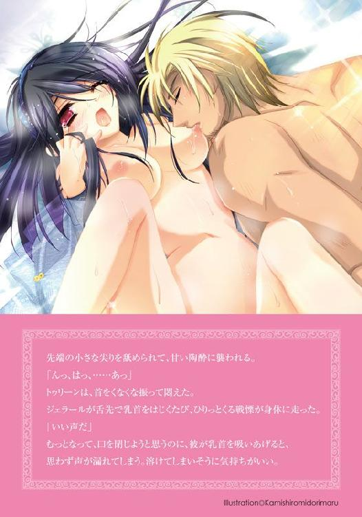
プロローグ
トゥリーン・ライリー・ハティムーンは、王宮の居室の隅で、侍女のエミーネと抱き合って震えていた。
「大丈夫ですよ。トゥリーン姫様。我が国の兵士たちは強いです。敵兵なんか蹴散らしますよ」
一生懸命に力づけようとしてくれている侍女のエミーネは、トゥリーンにとってお姉さんのような存在だ。
「そうよね。お父さまとお兄さまが戦っているのだもの。きっと我が国を救ってくださるわ。お父さまはお強いから、神様のご加護があるわ」
だが、王宮のもっとも奥、王族の居室であるここまで剣戟の音が聞こえてくる。
悲鳴。剣を打ち合わせる音。ものが壊れる衝撃音。金気くさい血の臭い。弓矢がうなる音。巨大な投石機が石礫を打ち出す音。石造りの壁が壊されたときに起こる土煙。ほこり臭い匂い。そして宮廷使用人が逃げ出す足音。
「ええ。トゥリーン姫様。大丈夫です。気を確かにして待ちましょう」
「そうよね。大丈夫よね。大丈夫......。ハティムーンは、私の国は、砂漠の宝石なんだもの。宝石を踏みつける人はいないはずよ......」
そう言うトゥリーンも、歯の根が合わないほどに震えている。
頭から被ったシルクベールの隅についているコイン飾りがしゃらしゃら鳴った。
砂漠の宝石、ハティムーン。
小さいが緑が多く美しいこの国は、砂漠の中央に位置し、旅人の喉を潤すオアシスである。シルクロードを旅するキャラバンは、必ずこの地を通り過ぎると言われるほど。
ハティムーンは、豊かに水を蓄えたいくつもの井戸と水源を抱えていて、オアシスを利用する人たちに、少額ながら通行税と滞在税を課していた。
たくさんの宿屋や料理店、入浴施設に劇場があり、シルクロードを行き交う人は、ハティムーンで旅の疲れを癒していく。大陸の文化と富が集まる豊かな国だ。
ここの水源が涸れると、砂漠を旅することは不可能になるため、諸外国はハティムーンに手出ししない。
小国が興亡を繰り返す群雄割拠の時代にあっても、ハティムーンだけは侵略されないと思っていた。
なのに、いくつも城門を巡らせて、たくさんの兵に守られた要塞のようなこの王城が、敵兵の侵入を許している。
ドーンと床が震えるほどの大音響が鳴り、敵兵のときの声がいっそう大きくなった。
「きゃあっ」
螺鈿の卓も、銀の食器も、漆喰で塗られた白い壁も、小刻みに揺れている。
景徳鎮の花瓶に生けてあった、アーモンドの花が散った。夜の寒さを遮るために敷かれた分厚い絨毯の上に、白い花弁がはらはらと落ちる。
「まさか？」
この音は、王宮のいちばん奥、最後の城門が破られた音ではないのか。
「大丈夫です。大丈夫ですよっ。トゥリーン姫様っ」
桟を複雑に入れた壺の形の窓の外で、赤い何かが揺らめいた。
内庭の向こう、回廊の奥で炎があがっている。敵兵が火を放ったのだ。
窓の外、青い尖塔を頂く塔の陰に、ついに敵兵の姿が見えた。
悲鳴がいっそう激しくなる。内庭を宮廷使用人が逃げまどう。
敵兵は砂サソリの紋章が入った革鎧を着ていた。砂サソリはティムスの紋章。大陸の端、西域に位置し、爆発的に領土を広げる好戦的な蛮族。
「奴隷にされたくなかったら早く逃げろ。王も王子も死んだぞ。用があるのはハティムーンの姫君だけだ」
右手に諸刃の剣、左手に青銅の鉾を持ち、ひときわ華やかな革鎧を着た美丈夫が、声を張りあげながら内庭を歩いている。
砂漠の民に特有の日焼けした肌に、西域の血が流れていることを示す青い瞳、ターバンを巻いた頭からは太陽そのもののような亜麻色の長い髪がこぼれている。
その男性の持つ剣からは、血が滴っていた。
まるでハティムーン王朝の終焉を示すかのようなありさまに、トゥリーンは卒倒しそうになった。
身体がぶるぶる震えて止まらない。シルクベールのコイン飾りがしゃらしゃら鳴ってうるさいほどだ。
「トゥリーン・ライリー・ハティムーン姫、どこにおられる？ 約束しよう。お出ましになれば、命は取らない」
「私を呼んでる......」
「出てはだめです。トゥリーン姫。ティムスは、略奪した国から姫君をさらうのです。サソリのような国なのです」
「私は、私は、どうすれば？ ......そ、そうだわ......っ」
トゥリーンは、震える指で、首から提げた瓔珞を探った。
死んだ母の形見。翡翠のペンダントトップから、小さな丸薬を取り出す。
毒蛇から作った自害用の毒薬だ。
今の時代、何が起こるかわからない。万が一我が国が攻め落とされたとき、辱めを受けるぐらいなら死になさい、と亡き母に教えられた。
父王と兄を殺し、我が国を蹂躙した兵にさらわれ、異国の地で生きるより、ここで死んでハティムーンの土に還る。
誇り高いハティムーンの姫として、潔く死のう。
毒薬を仰ごうとしたとき、エミーネが瓔珞をとりあげた。
丸薬が絨毯の上に転がった。
「だめっ。姫様は生きてっ！ 姫様はハティムーン王朝の、最後のひとりなのよっ」
頬を叩かれた気分だった。
その通りだった。トゥリーンが死ねばハティムーン王族の血が絶える。
ためらっていたとき、エミーネがトゥリーンの纏うシルクベールを引き剥がした。ベールの縁を彩るコイン飾りがしゃらりと鳴る。
「姫様っ。失礼を！」
トゥリーンの瑪瑙と金銀の腕輪を取りあげて自分の腕につける。ハティムーン王朝の月の紋章が入った金の輪もその中にある。そして自分のコットンベールをトゥリーンの頭上に投げ、ベールベルトで留めた。
「お許しくださいっ。姫様っ」
テーブルの上のワインを上衣にざばっと掛けられて面食らう。
ワインは、肩から胸の下までをぴったり包む上衣をまだらに染め、ヒップスカーフからハーレムパンツまでも赤く染めた。
「な、何で？ どうして？」
とまどうトゥリーンの目の前で、エミーネは絨毯に転がっていた毒薬を拾いあげて飲み下した。
「きゃあああっ。エミーネ！ エミーネッ!! なんてことをするのっ」
「姫様、お願い、生きて......生きてください......」
侍女のエミーネは、トゥリーンを生かすために、ハティムーン王朝の姫として死のうとしているのだ。
「死なないでっ。死なないでっ。エミーネ」
エミーネは喉を掻きむしり、ひくひくっと震えた。
それが最期だった。もう、ぴくりとも動かない。エミーネは事切れていた。
トゥリーンの侍女。子どもの頃からずっと一緒に育ってきた、姉のような存在だった。
五年前に母が死んだときも、泣きじゃくるトゥリーンをずっと抱いてくれた。
敵兵の侵入に宮廷使用人が逃げ出す中で、エミーネだけが残ってくれた。
「そんな......」
突然の別れに涙も出ない。運命の急変はあまりにも激しすぎ、頭がまるで働かない。
──これは現実？ それとも夢？
いつまでそうしていたのだろう。
ドアが乱暴に蹴り開けられた。
トゥリーンは、はっとして机の下へ潜りこむ。
革鎧を着こんだティムスの兵たちが、右手に剣を、左手に青銅の鉾を持ち、居室内へと入ってくる。
「軍隊長殿。姫君があちらに」
トゥリーンの前を、革靴を履いたたくさんの足が通り過ぎ、仰向けに倒れているエミーネの前で止まった。
「お亡くなりになっているのか？」
「はい。毒を仰いで、自害なさったようです」
「この姫が、ほんとうにトゥリーン・ライリー・ハティムーン姫なのか？」
フェイスガードとシルクベールで顔を隠し、閉じた瞳だけを出したエミーネは、外見だけでは侍女なのか姫なのかはわからない。
軍隊長が膝をつき、エミーネのシルクベールの縁飾りをいじった。軍隊長の栗色がかった金の髪が美しく流れ、床を掃く。
「このコイン飾り、金だな。三日月の文様が刻印されている。翡翠の瓔珞に瑪瑙と水晶、ラピスラズリに金銀の腕輪か。こっちも月だな。ハティムーンの紋章だ。どうやらほんとうに姫のようだな」
軍隊長はエミーネの髪を直し、だらっと力の抜けた手を胸の前で組ませると、ふーっとため息をついて立ちあがった。
「生きて虜囚の辱めは受けずか......。誇り高い砂漠の姫に敬礼っ!!」
軍隊長は鎧を脱いで左手で持つと、右の踵で左の踵を打ち合わせ、左胸を右手の握り拳で押さえる仕草をした。
見知らぬ姫の死を悼む様子は、サソリのように獰猛で凶悪な蛮族というティムスの印象を裏切って、優美にさえ見えた。
エミーネを取り囲んだ兵隊が、一瞬遅れて同じ仕草をする。
長い長い黙祷のあと、副隊長らしい兵が言った。
「軍隊長殿。姫君のご尊顔を拝し賜りましょうか」
フェイスガードとシルクベールを剥がして顔を見ようと言っているのだ。
家族と結婚相手にしか見せてはいけない顔を見られる屈辱を思い、トゥリーンは顔を背けた。
「そのままにしてやれ。俺は死んだ女など、どうでもいい。生きている女にしか、興味はないね」
机の下でしゃがみこんでいるトゥリーンの前に、金茶色の髪がさらりと落ちた。
精悍な顔立ちに青い瞳の美丈夫が、机の下をのぞきこむ。
「ひっ」
目が合った。トゥリーンはすくみあがった。
逃げなければ。せっかくエミーネが逃がしてくれたのだから。だが、こんなにもたくさんの兵がいる中で、いったいどこに逃げられる？
「おまえは侍女か？ 顔を見せろ」
コットンベールが引っ張られ、フェイスガードがむしり取られた。
ベールで隠していたまっすぐな黒髪が落ちかかり、視界を隠した。
「あっ、あ......」
顔を見られた衝撃と羞恥にすくむトゥリーンの顎を、たくましい指がつかみ、無理矢理に正面を向かせる。
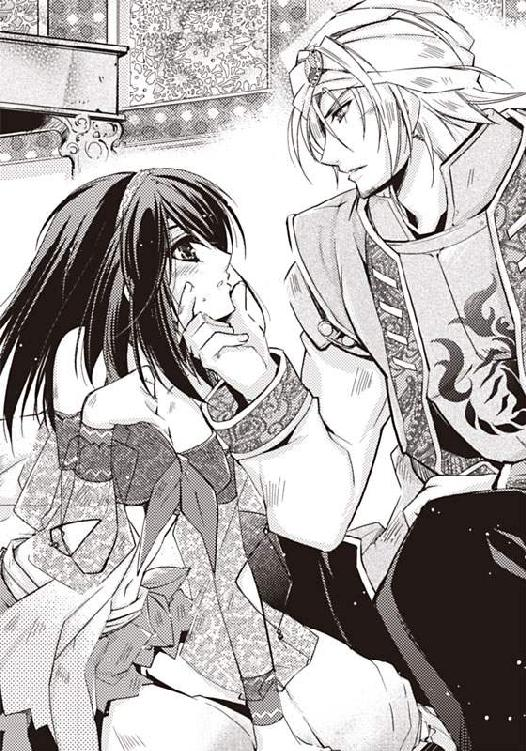
首を絞められそうな恐怖にがたがたと震える。
男と目が合った。
透徹した青い瞳が、トゥリーンを見つめてくる。
砂漠の宝石を踏みにじった蛮族の軍隊長のくせに、瞳には濁りがなく、宝石のように美しい。
自分が姫であることを見透かされそうな気がして、トゥリーンはおどおどと目を伏せた。
「名前は？ 何歳だ？」
唇に男の指が当たっている。トゥリーンは、小刻みに震えながらも、せめてとばかりに噛みついた。
「つっ」
トゥリーンはギリギリと歯を立てたが、男はまるで気にしていないふうだ。
「あははっ。この女、噛みやがった。侍女のくせに気が強い。お姫様みたいだな」
軍隊長は呵々大笑した。
笑っている顔は意外にも無邪気で、少年のようだ。その落差にくらっとくる。
「気に入った。俺はこの女を貰っていく」
手をつかまれ、机の下から引っ張り出される。
視界が回り、肩の上に抱きあげられた。
この男に連れ帰られる。西域に。知らない国に。この男の略奪品として。なぐさみものにされてしまう。顔が青くなった。
「いやっ、放してっ。放してぇっ」
手足をばたつかせて暴れるが、たくましい腕でがっしりと抱きしめられ、逃げることは適わない。まるで筋肉の鎧のような硬い身体だ。
「暴れるな。黙って俺に抱かれていろ」
大きな手がトゥリーンの背中をなだめるように叩いた。
抱かれる？ それはつまり、枕をかわすという意味ではないのか。
胸の奥がシンと冷えた。指先が冷たくなるようだった。
「おまえの名前は？」
「......」
「名前は何だと聞いている!?」
「トゥリーン」
言ってしまってから後悔した。本名を言ってしまうなんて、なんという愚かさだろう。
動揺のあまり、偽名を名乗ることさえできなかった自分に臍を噛む。
「姫と同じ名前なのか？」
「ハティムーンにはよくある名前ですね」
副隊長が口を挟む。
「あはは。姫と同じ名前の侍女か。今からおまえは俺のお姫様だ」
「出たよ。ジェラール様の悪い癖が」
「女には不自由しないくせに、侵略した国で、女を必ず略奪するんだよな」
「だけどよ。侍女を連れて帰るのは珍しくないか。しかもこんなみすぼらしい下働きの女を。いつもはお姫様を略奪するのに」
兵たちは家捜しをはじめている。
「うぉ、すげぇ。いい指輪がいっぱいあるぞ。翡翠に水晶、ラピスラズリにペリドットに猫目石だ。この瓔珞はルビーだな」
トゥリーンの宝石が洗いざらい持って行かれる。
宝石にはさして執着はないものの、思い出の品が略奪される光景に胸が痛む。
「おまえたち、いいか。姫が身につけているものには手を触れるな。死者の誇りを汚すようなことは絶対にするな」
「わかっていますよ。軍隊長殿！」
石造りの床に横たわるエミーネに、心の中で謝罪する。
──ああ、エミーネ、ごめんなさい！
侍女は、命を賭けて逃がそうとしてくれたのに、捕まってしまった。
『姫様、お願い、生きて......生きてください......』
そうだ。私は生きねばならない。
トゥリーンはハティムーン王朝最後のひとりだ。
どんなに苦しい思いをしようと、生きのびねばならない。
誇り高く侍女は死に、誇りを失った姫は自国を滅ぼした軍隊長に抱かれ、略奪品として王城を出ていく。
落花無惨の運命に向かって。
第一章 後宮に入れられて
トゥリーンを待っていたものは、炎天下の砂漠越えだった。
「はっ、はぁっ、はぁ......っ」
トゥリーンは、息を荒らげながら熱砂の上を歩いていた。
砂漠の女にとって、コットンベールとベールベルト、フェイスガード、上衣とハーレムパンツにヒップスカーフ、それに飾り帯は、おしゃれを楽しむだけのものではなく、砂漠で生きる必要から生まれた装束だ。
コットンベールは日差しを遮り日射病を予防するし、フェイスガードは、風に煽られた熱砂が気管に入ることを防ぐ。上衣もハーレムパンツもヒップスカーフも、服の中を風が渡り、身体に熱が籠もらないようにしてくれる。
エミーネのくれたコットンベールは涼しかったが、炎天下の砂漠越えはお姫様育ちのトゥリーンにはこたえた。
汗が目に入り、肌が陽に焼かれる。なだらかな砂山がえんえんと続き、似たような景色の繰り返しに、同じところをぐるぐる回っている気分になる。
時間の感覚がわからない。足が痛い。暑くて暑くてたまらない。トゥリーンはもう、ふらふらになっていた。
足を引きずるようにして歩いているのは、トゥリーンだけではなかった。
ラクダに乗った騎馬兵に前後を囲まれ、手首に縄掛けされて砂漠を行く三十人ほどの民たちは、ただひたすら、次のオアシスを目指して歩く。
行軍がはじまったとき、奴隷となる運命に絶望し、嗚咽する声も聞こえていたが、今はそれも消え失せた。
重いものが砂に倒れる音がした。
壮年の男性がうつぶせになっていた。
歩兵が走り寄り、倒れた民をつま先で蹴った。男性はぴくりともしない。
「死んでいるようです」
「放置しろ」
ハティムーンの民達が、息を呑んだ。
遠い異国の地で奴隷となって生きる運命が待ち受けているにしても、砂漠に捨てられるよりはずっとましだ。
その思いが、母国を失った人々を、辛い行軍へと駆り立てる。人々が逃げ出さないのは、砂漠で逃げる愚を知っているからだ。
横を歩く中年女性がふらついた。
「しっかりして」
転びそうになった彼女を、トゥリーンは支えた。
中年女性の顔はもう真っ赤だ。苦しそうに息を弾ませている。
「水よ。そんなに残ってないけど、これを飲んで」
自分の水筒を差し出す。
ハティムーンを出る前、兵たちに持たされた水筒だ。
彼女はトゥリーンが差し出した水筒を押しやった。
「だめ......あなたのが......無くなる......」
その仕草でめまいを起こしたらしく、上半身が大きくふらつく。
「私はいいから。平気だから。倒れると砂漠に放置されるわ。生きて砂漠を出ましょう。どんな運命が待ち受けているにしろ、生きてさえいれば、いいことがあるわ」
自分に言い聞かせる口調になった。
『姫様、お願い、生きて......生きてください......』
エミーネはそう言った。
──ごめんなさい。エミーネ。許して。
今ここで水を失うのは自殺行為かもしれないが、目の前で苦しんでいる人がいるのに、知らないふりをすることはできなかった。
「飲んで」
再度言うと、中年女性が水筒を受け取り、蓋を開けて水を飲んだ。
「頂きます」
トゥリーンにも彼女にも、手首には縄が掛かっているとはいえ、水を飲む程度のゆるみはもたせてある。
「ああ、生き返ったわ。ありがとう」
彼女が空になった水筒を返した。
水筒の軽さに、喉の渇きがいっそう激しくなった。
「私たちは月に守られた民よ。どんな土地にも月は昇る。月がご加護をくださるわ。負けずに生きていきましょう」
「あなた、何者？」
「え？」
「だって、お姫様みたいに、やさしそうなお顔をしているから」
「ま、まさか......っ。お姫様なわけないじゃない。私は、た、ただのっ、きゅ、宮廷の、下働きよ」
「そうよね。トゥリーン姫様は、毒を仰いで自害なさったと聞いているわ」
彼女のまとうコットンベールもヒップスカーフも、綿でできた地味なものだが、笑みを含んでさがる瞳の笑い皺が、やさしげな雰囲気を醸し出している。
彼女には、記憶を刺激する何かがあった。誰かに似ているのだが、誰に似ているのか思い出せない。
「そ、そうね。トゥリーン姫様は、お亡くなりになったのよねっ。私の名前は、お姫様と同じで、トゥリーンだけどねっ。おっ、お姫様が、染みだらけの安物のコットンベールを纏うわけがないわよっ」
エミーネが腕輪とコインの縁飾りでいっぱいのシルクベールをとりあげてくれたおかげで、トゥリーンはなんとか砂漠を歩いて行ける。
もしも金飾りいっぱいのお姫様装束で砂漠に出たら、火傷だらけになっていたことだろう。
「ふふっ。そうね。私はアイーシャよ。よろしくね」
視線を感じて振り向くと、ラクダの上の軍隊長が目を細めて笑いながらトゥリーンを見つめていた。
なんで荷車に乗らないのか。なんで水を人にあげるのか。馬鹿な女よと笑っているのに違いない。
軍隊長から荷車に乗るように命じられたのだが、自分はかりにもハティムーン王朝の最後の姫だ。民衆を歩かせて自分だけ荷車に乗るようなまねはできない。
民を守り、いい政治を行い、オアシスを守るのが王族の責務であると、両親から教えられてきた。
王族の責務が叶えられないのなら、せめて民と一緒にありたい。
姫としての矜持が、トゥリーンを辛い行進へと駆り立てる。
「オアシスが見えてきたぞっ」
誰かが叫ぶ声がした。
かすむ目を手の甲でこすると、なるほど白茶けた砂山の向こうに、緑の固まりがぽつんと見える。
「わああああっ」
歓声があがり、皆がいっせいに走り出した。
背中を押されて、前のめりに転んだ。熱い砂が、トゥリーンの身体を受け止めた。
「きゃあっ。トゥリーンさん、だ、大丈夫っ!?」
肌が太陽に焼かれるが、もう一歩も歩けない。意識が遠くなっていく。
──エミーネ。許して。もうだめ。
トゥリーンは目を閉じた。
☆
頭から冷たい水が掛けられ、トゥリーンは目を覚ました。
火照った頭が気持ち良く冷える。
目の前に、水をいっぱいに入れた陶磁器のコップが差し出された。
「飲め」
トゥリーンは震える手でコップを受け取り、水を飲み干した。
炎天下の砂漠越えで渇いた身体に、冷たい水が染みる。
ようやく周囲を見渡す余裕ができたトゥリーンは、オアシスの水飲み場にいることに気がついた。
ハティムーンよりずっと規模が小さいが、オアシス特有のなつめやしの木々や、白いテント、木陰が作り出す日陰と日差しの鮮やかな陰影に既視感を覚え、懐かしさのあまり涙が出る。
節くれ立った指がトゥリーンの顎をつかみ、青い瞳が顔をのぞきこんでいる。
「大丈夫か？ 荷車に乗れと言ったのに、どうして無理をして歩く？」
砂漠で倒れた自分を、ここまでつれてきてくれたのは、軍隊長だったらしい。
なんと答えようかと考えたが、身体も心も疲れていて、考えることがおっくうだった。
思っていることをそのまま答える。
「私には、力がありません」
剣を取って戦うこともできないし、父と兄を殺し王宮に火を放ったこの男の手をふりほどく力もない。
国を救う力もなければ、奴隷となる運命の我が国の民を解き放つこともできない。
「ですが......」
「ん？」
「目の前で倒れそうになっている人に、水を差しあげることはできます」
たくさんの人を助けることはできなくても、目の前のひとりに、水を差し出す程度の手助けなら、トゥリーンにもできる。
それさえできないようなら、国民の貢ぎ物で生きてきた姫の資格はない。
「あははっ。おもしろい女だ、おまえは。荷車がいやなら、俺と一緒にラクダに乗れ」
トゥリーンは後込みをした。
泣きながら首を振る。
男性と一緒にラクダに乗るなど考えられない。
そんなはしたないことをすれば、お嫁に行けなくなってしまう。顔を見られただけでも恥ずかしさのあまり卒倒しそうになったのに。
「俺にはハティムーンの奴隷たちを全員救うつもりはないが、気に入った女をラクダに乗せる程度の力はある」
トゥリーンの言葉をそっくり返された。
泣きながら首を振るトゥリーンに、軍隊長はいたずらをする少年のような笑顔を浮かべた。
「おまえは、民衆とともにありたいなんて、お姫様のようなことを考えているわけではないだろうな？」
言い当てられてどぎまぎする。
トゥリーン・ライリー・ハティムーン姫は死んだ。
今の自分は、宮廷で働く、下働きの女にすぎない。
よろしくてよ、と言いかけて、こういうとき、宮廷使用人だとどう言うのだろうかと考える。
「ご意向に従います」
トゥリーンは、涙をはらはらとこぼした。
結果から先に言うならば、トゥリーンはラクダに乗って正解だったのだ。
なぜならトゥリーンは、ラクダの上で意識を失ってしまったからである。
王宮から外に出ることもなく、身体を動かすときはたしなみとしてベリーダンスを踊るだけ。お姫様育ちのトゥリーンには、炎天下の砂漠越えは過酷に過ぎたのである。
☆
トゥリーンは夢を見ていた。
玉葱形の尖塔を背に、正装の兄が階段を降りていく。
砂よけのマントを翻して立ち止まると、兵士たちが一斉に敬礼する。太陽が兄を明るく照らし、兵達が作る影がくっきりと黒い。
続いて司祭が神に祈り、楽団がいっせいに音楽を奏でる。
これは兄王子の成人式。王位継承権を正式に得る大事な儀式だ。
姫とはいえ、成人していず、女でしかないトゥリーンは、式に出席することは許されず、王宮の窓からそれを見ていた。
女子供の楽しみは、格式ばった厳ついお式そのものより、立王子の礼のあとに行われる晩餐会にあった。
この日ばかりは特別で、人前でフェイスガードを外して、王族や貴族のみなと飲食を楽しむことができる。
腕のたつ職人が長い年月を掛けて織りあげた絨毯の上に食器が置かれ、みなで車座になって、食事を楽しむのが、砂漠の国の晩餐会だ。
父王や兄が寵愛している女たちも末席につく、無礼講の場だ。
ヨーグルトを添えて食べる焼き肉料理、イスケンデルケバブの甘酸っぱさや、野菜を入れたパイ、ビョレクのさくさくとした食感。煮込み料理、ムサッカのとろとろに煮た野菜のおいしさ。
さらに楽しいのは、お菓子の種類が豊富なこと。いつも食べているもちもちした食感のお菓子、ロクムでさえ、儀式用に干無花果を練りこんで山査子のゼリーで色鮮やかに飾った特別製だ。
舞台では、模造剣を手にした踊り子たちがベリーダンスを踊っていて、宮廷音楽隊が賑やかな音楽を奏でている。
ダンサーの踊りは見事だった。
トゥリーンがたしなみとして習っているダンスとは雲泥の差があった。
歌舞音曲に宮廷料理。シルクに宝石。
行儀作法の修練は面倒だったが、家庭教師が教えてくれる文字や歴史の勉強も楽しかったし、宮廷での生活は華やかだった。
燃えあがる炎が日常を焼きつくした。火の揺らめきに、赤く染まる王宮。父と兄が死んだ。毒薬を呑んで自害した大好きな侍女。
諸刃の剣から血を垂らし、内庭を行くサソリの文様の革鎧のティムス人。
はじめて乗ったラクダの背はやたらと高く、ゆらゆら揺れて、目がくらんだ。
背中を抱きしめてくるたくましい腕の感触がまだ身体に残っている。
サソリのように好戦的な男だと思っていたのに、笑顔は少年のように無邪気だった。
今も、身体が揺れている。違う。夢ではない。身体が水に浮かんでいる。
はっとして目を見開くと、トゥリーンは広く豪華な沐浴場で、西域風の白い祭服を着た女二人に身体を洗われていた。
女たちの手つきは丁寧だが事務的で、まるで野菜を洗うかのようだ。
豊富な水源を抱えるオアシス、ハティムーンの姫であったトゥリーンは、侍女に沐浴の手伝いをしてもらうことに慣れていた。
だが、今は下働きの女ということになっている。
こんなにも豪華な沐浴場で水浴びなんてありえない。
壁と床は大理石だし、壺の形の窓には高価な色硝子がはめこまれていて、目隠しになっている。
水をたたえた銀色の広い湯船に至っては、錫ではなく銀ではないか。
これでは王族の沐浴場だ。
「ここは？」
「後宮です」
「後宮？ な、なぜ？ 私はいったい？」
何かの間違いではないのか。後宮とは、王族の寵姫が住まう屋敷のことではないのか。軍隊長は、トゥリーンを王族に差し出したのか。
そんなはずない。トゥリーンは胸も小さいし、ふっくらしていない。王族への献上品なら、もっと綺麗で色気のある女の人を選ぶはずだ。
トゥリーンは自分を知っていた。侍女のエミーネは、トゥリーンの髪を梳きながら姫様はかわいらしいと誉めてくれたが、父と兄は、豊満な色気のある女を寵姫に選んだ。
男は色気のある妖艶な女を好む。トゥリーンは痩せていて、胸もそれほどの大きさはなく、セクシーさにはほど遠い。
「軽い脱水です。今はもうろうとしていらっしゃいますが、さっき水をお飲みになりましたから、症状は治まるはずです」
トゥリーンを洗っている年かさの女が言った。確かに焼けつくような喉の渇きは治まっていたが、もっと水が欲しかった。
「頭が痛いわ」
「お薬を用意しますから大丈夫です」
違う。そんなことを聞きたいのではない。聞きたいのは運命だ。この先どうなるのかを知りたいのだ。
だが、砂漠越えで疲弊しているせいもあり、沐浴の心地よさに気持ちがゆるんでしまっていた。なにもかもが水に溶けてしまいそうだ。
「どうぞ。お姫様、お立ちください」
腕を引っ張られるままに立ちあがり、湯船から出る。
白い布で身体を拭かれる。
「お姫様は経験者ですか？」
「私はお姫様では......。ただの下働きの女です......」
「はじめてのようね。ジェラール様ははじめての女がお嫌いだから、乳香と白檀、それに龍涎香を焚いて。オレンジとカナンガ、ジャスミンの花を枕元に飾りなさい。ああ、それから」
「カンタリスの量を心持ち多めにするのですね。イネス」
この、トゥリーンをモノのように扱う年かさの女はイネスという名前らしい。
「そうよ。イネス。ごく薄くね。ジェラール様は、もうすぐおでましになるはずだから、急いでね」
「はい」
若いほうの女が年輩の女におじぎをして、その場を離れていく。女達は二人ともがイネスなのか。それともイネスとは、名前ではなく職名か何かだろうか。あるいは西域では、巫女のことをイネスと言うのか。
「ジェラール？」
聞いたことのある名前だった。
金髪碧眼の軍隊長が、そんな名前ではなかっただろうか。
「無礼な！ 皇太子殿下ですよ!! 我が国の、皇帝の弟君です！ 殿下の気まぐれで慰みを頂ける下女のぶんざいで呼び捨てなどと!!」
「ティムスの皇弟殿下？」
わけがわからない。あの軍隊長が皇帝の弟？ 皇太子ということは、王位継承権第一位の王族という意味のはず。
精悍で乱暴な印象が強すぎて、にわかには信じられない。王族と皇族はどう違うのだろう。
なんで皇族が、しかも皇太子殿下が、軍隊長なんて、まして国攻めなんて、危険な任務についているのだろう。
思考力が低下していた。まだ夢の中にいるようだ。
「どうぞ。お姫様。水です」
さっき席を立った若い女が、息せき切ってやってきた。
硝子の杯になみなみと水が注がれていた。
「ありがとう」
トゥリーンは、杯の水を飲み干した。
「苦いわ......」
金気臭くて苦く、違和感のある味だ。水の豊かなオアシス、ハティムーンで生まれ育ったので、水の味に敏感なだけなのだろうか。
西域は水が手に入りにくいのだろうか。だったらどうしてここには水がたくさんあるのだろう。
まだ脱水が続いているのだろうか。思考が散漫で、考えることができない。身体がふわふわして、空に浮かぶ気分だった。
「お姫様、どうぞお召しものを」
白一色でできた装束に着替えさせられる。さらさらした質感はシルクのようだ。
ハーレムパンツと上衣ではなく、踝までの長さがあるシルクドレスだった。すとんとしたデザインだが、胸のところに白色の刺繍が施されている。ウエストを帯で結んで垂らすと、幾折もの繊細なドレープができて美しい。
「これは？」
「アバヤです」
「そのう、下着は？」
「白のアバヤは、素肌に直接着るのがわが国の伝統です」
まっすぐな黒髪がコテで巻かれ、宝石とジャスミンの花で飾られる。もしもトゥリーンに知識があれば、白のアバヤはティムスの花嫁が初夜を迎えるときの装束であることに気がついただろう。
「お姫様のお部屋はこちらでございます」
年輩の女に手を引かれ、繊細な調度品で飾られた広い廊下を歩いていく。
両脇には部屋がいくつもあり、トゥリーンが歩いていくにつれて引き戸がいっせいに開いていく。
まるで蕾がいっせいに開くようだ。
部屋の中から女達がトゥリーンをじろじろ見た。
ある女は寝椅子に寝転がったままで果物を食べながら、ある女はしどけなく椅子に座って爪の手入れをしながら、品定めするようにしてトゥリーンを眺めている。
全員が、ベールもフェイスガードもしていない。
黒髪、金髪、銀髪、赤髪、浅黒い肌、ミルク色の肌、黒い肌、青い瞳、黒い瞳、緑の瞳。西域の踊り子に東の姫、北欧の女にカリブの娘。
服装も瞳の色もさまざまだが、みな妖艶な女ばかりで、花が咲いたようにあでやかだ。
香料の匂いでむせかえる。
トゥリーンは内心で胸をなで下ろした。綺麗な女の人ばかりで、トゥリーンよりもずっと魅力的だ。わざわざ自分に手を出す男はいないだろう。
「遠征の略奪品がこの女なの？」
「貧相な女ね」
「下女って聞いたわ。ジェラール様の気まぐれにも困ったものね」
「ふん。どうせ、今晩限りよ。ジェラール様が、こんな女に夢中になるもんですか」
女たちは嫉妬と羨望と憎しみの瞳でトゥリーンを見つめている。
今晩限りとはどういう意味だろう。私はどうして、こんな目で見られなくてはならないのだろう。
王宮の奥深く、侍女にかしずかれて育ってきたトゥリーンは、女たちの悪意にさらされることに慣れていなかった。
怖がって後ずさりするトゥリーンを、年輩の女がぐいぐいと手を引いて歩いていく。
「お姫様、どうぞこちらに」
「ここで待てばいいの？」
「お姫様のお部屋です」
押しこむようにして部屋に入れられる。
「私の部屋？」
寝台がやけに目立つ部屋だった。
青いタイルが複雑な文様を描く床に、螺鈿の卓や重厚な調度品が並べられている。流線型の桟を入れた大きな窓。ハティムーンの王宮に比べても遜色がない豪華さだ。
「ジェラール様もすぐにおこしになります。いい夜を」
ドアがぴしゃりと閉められた。
甘い匂いがした。香炉から、かすかに煙があがっている。大きな花瓶にはジャスミンとカランガ、オレンジの花が美しく飾られ、甘酸っぱい花の香りが匂い立つ。
もうすっかり陽が暮れて、夜空に月が昇っている。部屋に立ちこめる甘い香りが息苦しく感じられ、窓を開けて外気を入れようとした。
壺形の窓ははめ殺しになっていた。
庭に面するところに両開きの扉があり、ためしに開けてみたところ、濃密な夜の気配と、ひんやりした外気が押し寄せてきた。
池を抱いた広大な庭で、なつめやしの木が夜風に揺れる。その様子はどこか不気味で、よそよそしい空気があった。西域とはいえ、ここは砂漠。昼の暑さを欺くほどに夜は冷える。トゥリーンは扉を締めた。
しかたなく、窓辺の椅子に腰を掛けて、月を見上げた。
黄金色のお盆のような見事な月だ。
昨夜見た月とまったく同じなのに、今は遠い西域に来て、ティムスの後宮の一部屋で男の訪れを待っている。
はっとした。
それはつまり、枕を共にする、ということではないのか。なんで私はぼうっとしているのだろう。早く逃げなくては。
おろおろと腰をあげたとき、身体の奥でぷくんと小さなあぶくがはじけた。下腹の奥が、かぁっと熱く火照ってくる。
「......え？」
これは何？ いったい私に何が起こっているのか。心の臓がどきどきして、息が弾む。夜の外気が入った部屋は涼しくて快適なはずなのに、熱くて熱くてたまらない。
砂漠越えの脱水が、まだ治まっていないだけなのだろうか。
いや、違う。脱水は前にも体験したことがあるが、これは違う。この熱さとむずむずする感覚は、まったくはじめてのものだ。
トゥリーンは椅子に座り直した。今の自分は、いっぱいに水を入れた杯のようだった。少しでも揺らすとこぼれてしまう。じっと座っていることしかできなかった。
下穿きをつけさせてもらえなかったので、ぷくんぷくんとはじけるものでアバヤが濡れてしまいそうだ。
そういえば、あの水、やけに苦かった。何か、薬が入っていたのだろうか。イネスたちは何と言っていたか。
『カンタリスの量を心持ち多めにするのですね』
身体の異状はカンタリスによるものだろうか。カンタリスとは何だろう？ 私は何を飲まされたのか？
扉がいきなり開き、正装に身を包んだ軍隊長が入ってきた。
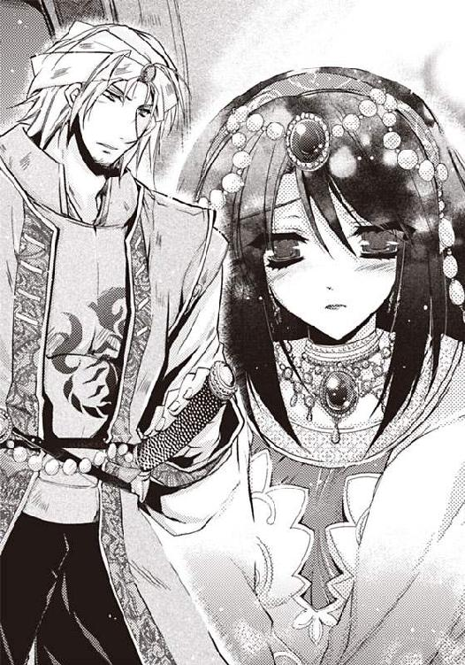
彼は大柄な男性だが、スッと背中を伸ばして立っている様子は、天井に届くほどに大きく見えた。存在感の大きさが、背を高く見せているのだろう。
青い瞳、浅黒い肌に、砂漠の民の伝統衣装がよく似合う。頭にターバンを巻き、身体をすっぽりと隠す砂よけのマントを肩から羽織っている。美しく流れるドレープが、彼の精悍な美貌をおだやかに見せている。
正装の彼は、苦い粒でもかみ砕いたような表情を浮かべているものの、あたりを払うほどに美しい。なんという綺麗な男性が、世の中にはいるのだろう。
「ああ、疲れた。遠征よりも、王宮に報告に行くほうが疲れる。ようやく帰国してほっとしているのに、潔斎して王宮に行き、兄者に報告しなきゃいけないからな。女の部屋に来ると安心する」
ジェラールは、砂よけのマントを取った。
襟がＶにえぐれたシャツに、裾の長いベストを着て、金の飾り紐で留めている。
ターバンをくるくると剥がすと、椅子の上にふわっと掛けた。
豪華な金髪がさらりと流れ、肩の上に落ちかかり、月明かりを弾いてきらきらと輝く。
王宮に戻って沐浴をしたのだろうか。革鎧を着ていたときには気付かなかった気品が漂う。
精悍でありながら繊細で、重厚でありながら優美な様子は、なるほど皇族の血のなせるわざ。
「トゥリーン、おいで。抱いてやろう」
自分に向かって伸ばされた手に怯え、トゥリーンは身体をすくませた。両手で肩を抱き、かぶりを振る。
「い、いや......」
身体をひねった瞬間、熱い液体がとろりとこぼれた。内腿を滑り落ちていく熱い滴にあわてふためく。下腹がせつなく疼き、秘唇がほてって痒くなる。
これは何？ なんで自分は、こんなふうになってしまったのだろう？ カンタリスという薬のせいだろうか。
トゥリーンは、小刻みに震えだした。悪寒がする。汗が噴き出て気持ちが悪い。
「どうした？ 体調が悪いのか？ 医師を呼んだほうがいいか」
「い、いや......呼ばないで、くださいっ。はっ、はぁ......っ」
医者に診られると、秘部がとろけていることがわかってしまう。
喉が渇く。水はしっかり摂ったのに、心の臓がどきどきして、胸のふくらみが内側から腫れたように熱くなる。
秘部へと伸びる右手を、左手で押さえた。
男性の前で顔を出しているだけでも消え入りそうになっているのに、そんなはしたないこと、絶対にできない。
腰がくねる。熱くて熱くてたまらない。あとからあとから熱い蜜が落ちる。身体が溶けて流れて消えてしまいそうだ。
「やだ......。ど、どうして......、く、苦し、い......っ」
「おまえ、何か呑まされたな？」
「わ、わかりません。......イネスさんから、苦い、水、を。......カンタリスって、言ってた、ような......」
「イネスは媚薬を呑ませたのか!? この香も、この花も、催淫効果のあるものばかりだな。よけいなことを......」
ジェラールはちっと舌打ちをした。
たくましい手が伸びてきて、トゥリーンの顎を指先でいじった。たったそれだけの刺激なのに、身体の芯がぞくぞくして上半身がくねってしまう。
「だ、だめっ」
トゥリーンは椅子から立ちあがって逃げた。
身体が熱くて重く、たったの数歩足を運んだだけで、くらっとなった。
「抱いてやると言ってるんだ。身体が疼いて、男が欲しくてたまらないんだろう？」
身体が疼いているのは事実だったが、はすっぱな女だと思われた衝撃に、頭から冷水をかけられた気分になった。
傷つけられた矜持に、胸の奥が苦しくなり、熱い衝動が突きあげた。
「私ははしたない女じゃないわ！ 私はトゥリーン・ライリー・ハティムーン！ ハティムーン王朝の最後の姫よっ」
はっと気づいたときには、衝動のままに叫んでいた。
トゥリーンはどうかしていた。王女であることは隠しておこうと思っていたのに。薬のせいでおかしくなっていたのか、やけになっていたのか。
いいや違う。女のプライドが悲鳴をあげ、言わずにはおれなかったのだ。
ジェラールは驚いたように目を見開いた。
「下女にしては妙に気位が高いと思ったが......。トゥリーン姫本人か......」
語るに落ちたと気づいたが、もういまさらどうしようもない。
出自を口にしたことよりも、身体の異状と、今からはじまる長い夜に対する不安のほうが大きかった。
「おまえが下女でも姫でも関係ない。俺は、おまえ自身が気に入った。俺が抱きたいのはハティムーンの王女ではなく、ただのおまえだ」
それは、床がぐらりと揺れるほどの衝撃だった。
トゥリーンは、姫としての扱いを受けるのが当たり前になっていて、王女である自分に価値があると思っていた。逆に言えば、自分自身の女としての魅力が低いことを認識していた。
父王と兄に侍る恋人たちや、晩餐会で剣の舞を踊る美しい踊り子たち。お尻も胸も大きくて、蜜がしたたるような甘い声で男にしなだれかかる花のような女たち。
男は女のふくよかな外見に魅了されるのだと知っていた。
王族の自分の取り柄は、王族であるという身分だけ。
輿入れをするときには、その身分さえも無くなって、四人の妻のひとりとして夫の愛を四分の一だけ受ける立場となる。
だが、彼は、トゥリーン自身を気に入っているのだという。
胸が高鳴り、身体が熱くなってくる。心が強く揺さぶられる。身体の疼きと重なりあい、どくんどくんと脈動する。
これは何だ。胸の奥で小さな鳥が羽ばたくような、くすぐったくて落ち着かないこの気分は何だ。
私はいったいどうしたというのだろう。
母国を滅ぼした相手に、何をぐらぐらしているのだろう。
これはハティムーンの王女として、抱いてはいけない感情だ。
トゥリーンは、自分を叱咤するつもりで大きな声をあげた。
「触らないでっ!! 私に触れていいのは生涯の伴侶だけよっ」
ジェラールは、あっけにとられた表情でトゥリーンを見た。次の瞬間には、たのしくてならないとばかりに破顔する。
男臭い顔立ちなのに、笑うと少年のような雰囲気に変わる。
「あははっ。ははっ、はははっ。おまえみたいな女ははじめてだ。砂漠越えをする体力さえもないくせに、身体の疼きよりも矜持を選ぶか」
ジェラールは、トゥリーンを抱きあげると、寝台の上に放り投げた。
弾力性のある寝台は、トゥリーンの細い身体を柔らかく受け止めた。
「きゃあっ」
アバヤの裾がめくれあがり、あわてて手で押さえる。
寝台がギシリと鳴った。ジェラールがベッドに乗ってきた。
彼におおいかぶさられて、起こそうとした上半身が寝台に押さえつけられる。
「い、いや、やめて、死にます」
自害用の毒薬はもうないが、舌を噛んだら死ねるだろうか。
『姫様、お願い、生きて......生きてください......』
──ああ、エミーネ、許して!! お願いだから死なせてね。
トゥリーンはかつての侍女に許しを請うた。
「舌を噛まれるのは困る」
口唇に布を掛けられ、後頭部で引き絞られた。
口の中に、ぱさぱさする布の味が広がっていく。
「ぐっ」
しかも、両手首を頭上で交差され、布をぐるぐると巻きつけられる。そして寝台の頭部にある飾り棒に結びつけられた。
「うっ、うぅっ、うーっ」
自由を奪われ、猿ぐつわをされた状態で、アバヤの前ボタンを外されていく。
恐怖のあまり顔を背けると、胸に熱い手が触れた。
内側がしこって熱を持っていたふくらみが、大きな手で揉みあげられていく。苦しいほどの熱い疼きがふわりと溶けた。
いやなのに、いやなはずなのに、気持ちがいい。どうしていいかわからない。
「んっ、......あっ......、んっ」
猿ぐつわで塞がれた紅唇から悲鳴が漏れる。
たくましい大きな手が、ナンを捏ねるように乳房をいじる。こわばりを解かすような熱い手の感触は、不思議なほどに気持ち良く、内側の熱くて硬い芯が揉み出されてしまいそうだった。
トゥリーンはせめてとばかりに身体を硬くして目を閉じた。だが、目を閉じると感触が内に沈んでたまらない。
下腹に力が入ったのか、とろりと熱い液体がこぼれ、アバヤの裏地を濡らした。
「おまえの肌は赤ん坊のようだ。キメが細かくて真っ白で、シットリと手に吸いついてくる」
ひそかな自慢を誉められて、少しだけ気をよくしたが、そんなこと思ってはいけないのだと、固く固く目を閉じた。
自分の心臓の鼓動を聞きながら身体を緊張させていたら、胸のふくらみの頂点に、ぬめっとした熱いものを覚えた。
びっくりして目を見開くと、胸乳の先端、小さな乳首を、ジェラールが舐めていた。舌先を前後左右にはじくように動かされ、顎をすりつけられる。
「んっ......んーっ」
無精髭のちくちくが、くすぐったいようなもどかしいような甘い刺激を生み出して、身体の内で溶けていく。
思わず手を動かして、彼の顔を払おうとしたのだが、寝台の飾り棒がぎしっと鳴って、手首の拘束感がよりいっそう強くなった。
そうだった。手は縛られているのだ。逃げることもできず、父と兄を殺し、国を滅ぼした男にいいようにされるだけ。
情けなさに涙がこぼれてしまうのに、胸の頂点の小さな尖りを舐められる感触は心地よくて混乱する。
「うっ、......ぅっ、......はぁ......」
猿ぐつわをされていても声が漏れる。
はしたない、しっかりしなさいと、自分自身を叱咤するが、片方のふくらみを揉まれ、もう片方の乳首を吸われると、たちまち緊張が解けてしまう。
殿下がちゅっと乳首を吸ったとき、身体の芯がちりっと焼かれ、ひくっ、と背筋に震えが走る。
「感度がいいな。カンタリスのせいなのが残念だが」
これは媚薬の悪戯で、トゥリーンがはしたないから、ではないのだ。
安堵のため息をついた瞬間、こわばりがふわっとほどけた。すり合わせていた下肢がゆるむ。まるでその瞬間を狙ったように、ジェラールの片手が太腿に載り、裾をめくりあげていく。
太腿を伝いあがった手は、やがて股間に触れた。
秘唇を割って入りこんでくる指先に驚いて身体をすくませる。
「濡れてるな」
いや。そんなところ、触らないで......。
猿ぐつわに塞がれた口からくぐもったうなり声が漏れる。
トゥリーンは、下肢をばたつかせて暴れたが、媚薬に抵抗を奪われて、緩慢にしか動かない。アバヤの裾がめくれあがり、胸も下肢も丸出しのあられもない格好になる。
縛られた手を動かして、裾を直そうとして必死になるが、結び目がよりいっそうきつくなっただけだ。
殿下の手が両膝に載り、下肢を大きく開いた。
「うっ......」
恥ずかしくて死にそうだった。自分でさえよく知らないところを見られている。頭の芯がかっと熱くなった。
検査をするようにして花びらがめくり返され、秘口に指が浅く入った。
痛くはなかったが、身体の中心に硬いものが分け入ってくる違和感に腰がすくむ。
指はぐるっと円を描くように動き、トゥリーンの顔を歪ませてから、引き抜かれた。
「はじめてなのか？」
トゥリーンはうなずいた。涙がぽろりとこぼれた。
はじめてなのに、媚薬を盛られ、縛られて無理矢理に犯される。父と兄を殺した男に。砂漠の宝石ハティムーンを滅ぼした男に。およそ考えられる限りの、最悪の初体験だった。
涙を溜めた瞳でキッと睨む。
「ははっ」
男は驚きに目を丸くすると、くすぐったそうに笑った。
「そんな目で見られると、おまえを感じさせてやりたくなる」
いったい何をされるのだろう。怯えて目をとじたトゥリーンを襲ったものは、敏感なところに受けた熱いキスだった。
「くーっ、......うっ、ぁっ、はぁっ......あっ」
信じられない。そんなところを舐められるなんて。この人、かりにも皇族なのに。
皇弟殿下が、トゥリーンの股間を舐めている。信じられなかった。あまりの羞恥に目がくらむ。だが、繊細な粘膜を舐め回す熱い舌の感触は心地よく、腰がせつなく揺れてしまう。
「んっ、んんっ、......あぁっ」
溶けて崩れて甘い液体になって、流れ出してしまいそうだった。
下腹の奥がきゅんと疼き、脇腹にひくっと戦慄が走る。ジェラールの舌は熱くて柔らかく、それでいて硬い。舌先のつぶつぶまでもはっきりわかる。
下肢がついつい閉じてしまうが、殿下の側頭部を内腿で挟んでしまい、もっとしてとねだっているみたいになった。あわてて下肢をゆるめると、まるで誘っているようで、どうしていいかわからない。
もうだめだ。このままだとおかしくなる。
猫が水を舐めるような音が絶え間なく響く。
秘裂にそって舐めあげることを繰り返していた男は、花びらを引っ張って秘芽の包皮を剥くと、小さな花芯を舌先で舐めあげた。
「くぅーっ」
猿ぐつわが無ければ甘い声をあげて仰け反っていただろう。
気持ち良さのあまり腰が浮き、縛られて寝台の頭部の飾り棒に結びつけられた手が空をつかむ。
秘められたところから生じる快感は、トゥリーンを甘くせつなく溶かしていく。蜜があふれ小刻みに身体が震える。
「んっ、......んーっ」
まるで剥き出しの神経組織を、直接にいじられるような快感だ。
男が秘核をちゅっと吸いあげたとき、脳裏で何かがきらめいた。
「うぅっ、うーっ」
まなうらのきらめきに目がくらみ、四肢に向かっておののきが走る。
意識がフッと遠くなり、四肢から力が抜けた。
呆然としていたら、トゥリーンの下肢をさらに大きく開き、ジェラールがのしかかってきた。
すべすべする熱い何かが秘裂を探り、処女の秘口を探す。
大丈夫だ。大丈夫。殺されるわけじゃない。自分さえ、気を確かに持てばいいのだ。泣き言はやめよう。
媚薬に狂わされた身体はとろとろと蜜を零し、受け入れる準備を終えていた。熱い先端が押し当てられる感触に怯えて腰を揺するが、縛られ媚薬に狂わされ、男に押さえつけられて、逃げられるわけがない。
カンタリスと男の愛撫に溶かされた身体を叱咤して、それでも必死に腰をよじってずりあがる。
「媚薬に溶かされていながら、まだ、いやがるのか。おまえみたいな女、はじめてだ」
ジェラールは、トゥリーンの肩を抱いて引き寄せると、ぐっと押しこんできた。
怖い。恐怖と緊張で身体が小刻みに震える。
先端の肉の実が、秘口にはまりこんだ。
「うぅーっ」
みっしりとあわさった襞を、たくましい先端がこじ開けるようにして侵入してくる。男根は浅い位置で止まった。痛みと違和感に顔をしかめる。涙がぽろぽろ落ちて頬を伝う。
殿下は再びトゥリーンの肩を抱き直すと、奥に向かって突きこんだ。何かが弾ける感じがして、ジェラールの先端が奥に沈む。
ひどい痛みが腰に走り、トゥリーンは猿ぐつわを噛みしめた。やがて肉茎は、最奥の硬いものをこつんと押しあげて止まった。すごい深さだ。お臍のあたりまで埋まっているような気がする。
「おまえのココはいいな。はじめてなのに、ぬるぬるとまとわりついてくる」
ジェラールは満足そうにため息をついた。
これで終わった。これでもう寝させてもらえる。悪夢のような長い一日はようやく終わりだ。
はじめての女にありがちなことだが、性交のとき、男はじっとしているのだと思っていた。男根が奥に入ったら、それで終わりだと思っていたのである。
トゥリーンは疲れていた。
亡国の姫となり、炎天下の砂漠を徒歩で越え、後宮に閉じこめられた。媚薬を盛られ、縛られて無理矢理に身体を開かされた。もう、眠ってしまいたい。永久に眠ることができたら、どれほどいいだろう。涙がこぼれてたまらない。
──ごめんね。エミーネ。もうだめ。死なせて。このまま死なせて。
『姫様、お願い、生きて......生きてください......』
エミーネの声が聞こえた。
幻聴だとわかっていても、侍女の声はトゥリーンに力を与えた。
死に焦がれていた気持ちが限界に達し、生きるほうへと跳ね返ったのかもしれない。
生きなければならない。トゥリーンは、ハティムーン王朝の、最後の姫。
自分が死ねば、王朝の血が絶える。
「どうだ？ 気持ちがいいだろう？ おまえは黙って抱かれていればいいんだ」
トゥリーンは、涙をためた瞳で、ジェラールを睨んだ。
ジェラールは何を考えているのか、おもしろそうに眉をあげると、トゥリーンの後頭部に手を回し、猿ぐつわを外した。
「許さない......」
怨嗟の声が漏れた。
縛られ、媚薬に狂わされ、処女を散らされても、心までは許さない。
ハティムーンと自分を蹂躙したこの男を許さない。
「はははっ。おまえはほんとうにおもしろい女だ。普通の女なら、そろそろあきらめてしなだれかかってくるころだがな」
男根が後退していき、緊張をほどいた瞬間、抜け出るかと思った剛直が再び奥へと分け入ってくる。
「あぁ、あっ、......あーっ」
トゥリーンは悲鳴をあげた。
破瓜の苦痛さえまだ治まっていないのに、襞をこそげ落とす勢いで前後され、身体が揺すりあげられる。
「い、いやっ、やめて......っ。ひどいっ。......ああ、ゆ、許して」
言うものかと思っていた泣き言が漏れ出た。
あとからあとから蜜が落ちて、苦痛をまろやかに変えていく。これはカンタリスのなせるわざ。媚薬は緊張をほどいて快感を増し、蜜液を生じさせる。
ジェラールが三度ほど前後したときには、もう、苦痛はまるで無くなっていた。せめて痛ければよかったのに。気持ち良いことが、悔しくてならない。
「感じてるんだろ？」
「......か、感じてなんか......くっ」
先端が最奥を突いた瞬間、背筋にぶるっと衝撃が走り、目の裏で火花が散った。
「あぁーっ」
トゥリーンは感じていた。媚薬のせいかもしれないが、確かにこれは快感だった。
ジェラールに抱いているのは愛情ではなく憎しみだ。触られることさえいやで、死にたいほどの屈辱なのに、悔しいほどに心地よい。
「おまえは乱れているようだが」
「こ、これは、カンタリスのせいよ......っ!!」
ジェラールは満足そうに笑うと、トゥリーンの鼻のアタマにキスをした。
「おまえは気が強くて、かわいいな」
精悍な男臭い顔だちなのに、笑顔は少年のように無邪気だった。
だめだ。そんなこと、考えてはいけない。いい気持ちになってはだめだ。
皇太子殿下は、トゥリーンの肩を押さえると、性急に腰を動かしはじめた。
「はっ、はぁっ......あっ、あ......っ、......んっ」
開かれたばかりの隘路を擦過され、苦痛とないまぜになった快感が生じる。悔しかった。ただひたすら悔しかった。
くせになりそうな危険な快感に、どうしていいかわからない。
気を許してはだめだ。ジェラールは、ハティムーンを落とした男。サソリのように凶暴な男。
──ああ、お願い、早く終わって！
だが身体は、トゥリーンの意識から乖離する。
いやなはずなのに、心地よくてたまらない。
蜜音を立てながら前後している男根が、最奥を押しあげたそのとき、ずうんと重い戦慄が身体に走った。
「くぅっ」
トゥリーンは手首を縛られた不自由な身体を突っ張らせ、身体の芯を貫く戦慄に耐える。
「......はっ、はぁ......っ」
快感が身体の内でぶわっとふくらみ、硬い芯がきゅんと溶けた。
目の裏で火花が散り、頭の中が真っ白になる。
愛情なんてない。ジェラールに感じているものは憎しみだけ。なのに、彼が深く突き入れて最奥を押しあげる瞬間、重くて太い戦慄が背筋を伝って脳髄へと到達する。
下から上へと風が吹き、意識が空へと浮かびあがる。
錯覚だとわかっているのに、浮遊感に目がくらむ。
はげしく揺さぶられ、頭を前後に揺すられたあげくに、錯覚が起きているのだと知っていても、はじめての快感は圧倒的なほどの迫力で、トゥリーンをさらっていく。
イネスに飲まされた媚薬が、快感を倍加しているのだ。
ジェラールが十数度目かの突きあげをした瞬間、脳裏でぱあんと何かがはじけた。
「......っ！」
トゥリーンは声もなく仰け反った。
身体を反り返らせて、大波のようにやってきた快感に耐える。
亡国の姫の細い身体に、小刻みな痙攣が走った。
「うっ」
ジェラールがうなり声をあげて動きを止めた。最奥を突きあげたままで止まった先端から、濃度のある熱い液体が噴き出している。
身体の内側に、熱いものが染みていき、かぁっと奥が熱くなった。
下腹の内側のせつない疼きが、殿下の「お情け」でなだめられ、めくるめくような快感が生じた。身体の内側が甘い液体に変わって流れ出しそうだ。
意識がスゥーっと薄れていく。
「トゥリーンッ！ おいっ、大丈夫か」
「許して......」
──お父さま、お兄さま、エミーネ、国民たち。私を許して......。
疲れた。このまま眠ってしまいたい。もう二度と目覚めたくない。このまま死んでしまいたい。
トゥリーンは意識を手放した。
第二章 快感に溺れて
「お姫様、朝でございます。お姫様」
トゥリーンは自分を揺すり起こす存在から逃がれようとして、寝返りを打って横向きになった。
「エミーネ、お願い、もう少し寝かせて......」
「下女のぶんざいでえらそうに。殿下のお情けを頂いたらいきなりこれよ」
「お姫様気取りですね」
ひそめた声が聞こえてきて、トゥリーンははっとして目を開けた。
「イネス......、さん」
西域風の白い祭服を着た二人の女が、愛想良く笑いかけている。
二人とも、目は笑っていない。冷ややかな瞳でトゥリーンを睨んでいる。この女たちに見つめられると、自分が野菜になった気分になる。
やっと気がついた。アバヤの袖を通してはいるものの、裾はめくれあがり、襟元ははだけ、下肢も胸も剥き出しのしどけない姿だ。
縛られたままで身体を開かれたはずだが、手首の布はほどかれていた。
トゥリーンはきゃっと悲鳴をあげながら横座りになり、顔を赤くしながら、胸をかきよせ裾を直した。
そのとたん、内腿を熱い液体が伝った。
青臭い匂いが、昨夜のことを思い出させ、顔がかっと赤くなった。昨夜、開かれたばかりの隘路には、まだ、熱い剛直の感触が残っていて、下肢のつけ根が痛んでいた。
「いい朝ですよ。お姫様」
先端がすぼまっている壺の形の窓から、朝日が差しこんでいた。
「お姫様、お目覚めでございます」
イネスが横のドアを叩き、細く開けて言った。
控えめで行儀がいいが、どこかえらそうな様子は、宮廷使用人というより神に仕える巫女のようだ。
「そうか」
ジェラールの声がドアの向こうから聞こえてくる。
ここは西域。ティムスの後宮。
「夢じゃなかったの......」
「夢のようなお時間をお過ごしになられたよし、喜ばしく存じます。ジェラール様は浴室にいらっしゃいます」
細く開けたドアの向こうから、水をはじく音が聞こえてきた。
「トゥリーン、早く来い」
「お姫様、殿下がお呼びでございます」
イネスがトゥリーンの手首をぐいぐいと引いた。ベッドから転げ落ちるようにして床に降り立つ。
「お姫様、お召し物をこちらに」
若いほうの女の手が伸びてきて、アバヤの前ボタンを外し、服を引き剥いでしまった。
「い、いや......」
全裸にされたトゥリーンは恥じらって身体をすくませた。
「殿下のお世話を。お姫様としてのつとめでございます」
背中を押されドアの向こうへ押しこまれる。
湯気が籠もって周囲が白く煙っている。
小規模な湯浴み場だった。高い位置にある小さな窓から、一条の光が射しこんでいる。
ジェラールが湯船につかってくつろいでいた。
「こちらへ来い」
立ちあがって手招きする。
窓から射しこむ朝日が、ジェラールを明るく照らした。
こんなときだというのに、トゥリーンは彼に見とれた。
たくましい身体が湯を弾き、つやつやと輝いている。整った顔立ち、太陽のような金髪、オアシスの水面のきらめきを思わせる青い瞳。
まるで水神が現れたのではないかと思うほどに美しい。この気品は、間違いなく王侯貴族のものだ。
「おいで」
再度手招きをされ、トゥリーンは、いやいやをして身体をすくませた。ドアに手を掛けるがびくともしない。外側から、テーブルか何かで押さえているらしかった。
「今、出ると、イネスたちが怒るぞ。部屋の掃除と朝食の用意をしている最中だから。こちらにおいで」
殿下が湯船を出て、歩み寄ってきた。股間に目がいくが、あわてて視線を逸らす。
逃げ場はなかった。
「そんなに怖がらなくてもいい。おまえを傷つけたりはしないと約束しよう」
かっとなった。傷つけないと約束する？ 縛ってムリヤリに身体を開いたくせに。国を滅ぼし、父と兄を殺したくせに。
だが、トゥリーンには何もできない。武器もない。力もない。それが悔しい。せめてとばかり睨みつけると、ジェラールがくすぐったそうに笑った。
「おもしろい女だな、おまえは。女たちは皆、俺に抱かれることを夢見ているというのに」
手首をつかまれ、抱き寄せられた。たくましい胸に顔が埋まる。
「きゃあっ」
「昨日、おまえは俺に抱かれて眠ったんだぞ」
「いやっ！」
腕をふりほどいて抗うが、「縛られたいのか」と耳元でささやかれ、抵抗できなくなってしまった。
あんな屈辱的な思いをするのはもうたくさんだ。
「よしよし、おとなしくしろ。おまえは何もしなくていい。黙って抱かれていればいいんだ」
石になろう。何も感じない石に。
皇弟殿下に手を引かれ、そろそろと湯船に入る。背中を抱かれて、お湯に浸かる。
お湯の温かさは単純に気持ち良く、疲労が汗と一緒に溶かされていく気分になる。
だが、彼の太腿に自分のお尻が乗り、胸に背中が密着すると、ひたすら恥ずかしくなった。
「おまえは身体がいいな。肌のキメが細かくて、すべすべでいい匂いがする」
ジェラールの手が前に回され、乳房と股間をいじりはじめた。
「い、いや......、いや......っ」
「そういやがるな。洗ってやる」
彼のごつごつした指先が繊細に動いて、花びらをめくり返す。硬い指が秘口に入った。昨夜からずっと残っていた違和感が、指の感触へと変わっていく。
胸のふくらみを揉まれ、膣口に浅く入った指が検査するように動く。
お湯のやさしい肌合いが、感触をやわらかくしているのか、いやなはずの愛撫が心地よい。指は膣口から抜かれ、秘芽を探しだしてぬるぬるといじりはじめた。
身体がヒクッと震えた。ジェラールが楽しそうにくくっと笑った。
反応すれば男を楽しませてしまう。自分は石だ。何も感じない石だ。
身体を硬くしていても、耳にふっと息を吹きかけられ、秘芽を指先でいじられると、こわばりがほどけた。
殿下の指が敏感な肉の芽を引っかけるようにして動くたび、甘い刺激がひりっと来て、四肢の先端から抜けていく。
「あ......あぁっ......ぁっ」
あえぎ声が漏れた。
「いい反応だ」
石になりたいと思うのに、繊細な肉のとがりを執拗にいじられて、身体がびくんびくん震えてしまう。
「い、いや......っ」
逃れようとして暴れても、彼の腕ががっしりと抱きしめてきて、どうしたって逃げられない。
秘芽なぶりは執拗に続き、微弱な電流のような刺激が絶え間なく流れる。つま先が痺れ、腰がだるくなってきた。
胸に回された手が胸のふくらみを揉みしだく。
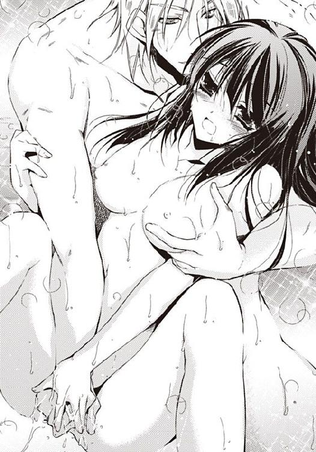
「ひぁっ」
トゥリーンは眉根を寄せて悶えた。背筋を弓なりに反らすと、後頭部が彼の肩に載った。無精髭が浮いた顎をうなじにすりつけられて、静電気のような刺激に悶えてしまう。
お湯がたぷんと波打った。
ジェラールの舌がうなじを這い、耳たぶをそっと噛む。
うなじと耳、乳房と秘部を同時にいじられ、背後から抱かれている。
耳にフッと息を吹きかけられると、身体の芯が抜けてしまいそうなほどの心地よさに襲われる。腰がだるく、四肢が甘く痺れ、考えることができなくなる。
「い、いや......だ、だめ......はっ、はぁっ」
「おまえの身体はいやがってはいないようだが？」
悔しい。どうして、こうなってしまうのだろう。
秘口から、蜜液がたらたらと落ちて止まらない。お湯に溶けるから気付かれないと思っていたのに、ジェラールはトゥリーンの身体の変化を、はっきりわかっているようだった。
触られているのは身体の表面なのに、身体の奥が痛甘く疼き、トゥリーンから思考力を奪っていく。
殿下の人差し指と親指が、乳首と秘芽を同時に挟み、くりくりとまるめるように動いている。
「い、いや......」
花芯と乳首いじりはいつ果てるともなく続き、身体が痺れてだるくなる。
脳裏できらっと何かが光った。
「あっ」
身体がよじれそうになり、腰をもじつかせたとき、双臀の下でこつんと硬い長いものがうごめくのを感じた。お湯のおかげで秘部に当たっては離れる大きくなった剛直が、苦痛の記憶を想起させ、恐怖心がせりあがる。
怖い。
トゥリーンはもがいた。
昨日は、彼の大きなものを奥まで入れられ、揺すりあげられた。
媚薬のせいで記憶があいまいだが、腰が割れるような衝撃は、まだ身体の芯に残っている。
「は、放して......っ」
本能的な恐怖から、立ちあがろうともがく。
お湯の中では思うように身体が動かず、お湯がたぷたぷと波打って、溺れそうになった。
がぼっとお湯を飲んでむせながら、それでも湯船の縁を持ち、腰をあげることに成功する。
「どうした？」
ジェラールが腕を伸ばし、トゥリーンの脇腹に手を当てた。
「ひっ」
立ちあがる動作で、彼の指先が脇腹をなで下ろしてきた。
偶然の行為だったのに、静電気のような刺激が走り、膝がガクッと折れた。
「あっ、く......っ」
トゥリーンは湯船の縁を持ち、背筋を反らせてぶるぶると震えた。
「感度がいいな。媚薬は抜けているはずなのに」
ジェラールは、指先で背筋のへこみを伝いあげた。
「ち、ちが......わ、私は......は」
はしたない女じゃないと言いたかった。
あんなにも長い時間、感じやすい敏感な萌芽をいじられたら、誰だってそうなってしまう。
刺激を受け続けた秘芽はまだ痺れていて、腰に力が入らない。湯船をまたいで逃げればいいのに、それができない。まるで腰が抜けたようだ。
ジェラールが立ちあがった。
「ひっ」
背後に立つ男性に怯えて振り返ると、彼が剛直に手を添えて、トゥリーンの秘部に押し当てようとしているところが見えてしまった。
「いや......こ、怖い......っ」
ジェラールの大きい手が腰の脇をがしっと持って後方に引いた。上半身が泳いだ。あわてて湯船の縁に手をついて、身体を支える。
「ああっ、は、恥ずかしいっ、......い、いやっ」
湯船に手を置き、腰を突きだした姿勢になった。あまりの恥ずかしさに目がくらむ。
秘唇に肉の実が押し当てられる。
「た、助け、て......」
誰が助けてくれるというのだ？ 父王も、兄も、エミーネも、みんな死んだ。ハティムーンは滅んだ。
トゥリーンを助けてくれる人はいない。
黒々とした絶望が立ちこめて、指先が冷たくなってくる。
秘裂にそって前後していた先端は、やがてみっしりと襞が集まった狭い入口を捉えた。
つるんとした熱いものを、膣口に押し当てられて恐怖する。
またあのムリヤリに身体を内側から開かれる苦痛が襲うのだ。
今度は立ったままで。全裸で。背後から。まるで犬のように。
屈辱と恐怖に、身体が小刻みに震えてしまう。
「......に......のよ......」
石になるのよ。
トゥリーンは、背後のジェラールに聞こえないよう、小さな声でつぶやいた。
自分に向かって言い聞かせるつもりだった。
苦痛も哀しみも感じない石になるのだ。
ジェラールは、トゥリーンの腰をしっかりとつかむと、身体をぶつけるようにして挿入して行った。
昨夜開かれたばかりの隘路を、剛直が掻き分けながら沈んでいく。灼熱の肉茎が身体の内側に埋まっていく感触に、身体がぶるぶるっと震えてしまう。
「いい子だ。いい子だ。よしよし......」
猫が水を舐めるような蜜音を立てて沈んでいく男根は、痛くなかった。
トゥリーンは混乱した。
覚悟していたのに、苦痛など少しもない。それどころか、ずっと感じていた擬似的な剛直が、生身の男根に切り替わっていく感触は、単純に心地よかった。
どうしてこうなってしまったのだろう。
秘芽いじりの苦しいほどの快感と違い、空虚だったところを埋めてもらえたような満足感がある。
「んっ、んっ......」
やがて男根は最奥を押しあげて止まった。
熱くて硬い、たくましい男根の感触に、ぶるぶると震えてしまう。
「く......、絡み、ついて、くる......。なんて、身体を......、してるんだ......っ！」
「ご、ごめんなさい」
トゥリーンはびくっと震えて謝罪した。
「叱っていない。誉めてるんだ。......おまえの身体は、最高だ。......こんな女が、現実に、いたのか......好きに、なりそうだ」
うれしいような悲しいような気分に襲われ、ほろほろと涙をこぼす。
好きな男性とこうしたかった。
きらいなはずの男に、自分の身体を好き勝手にされている。なのに、気持ち良くなっている。それが悔しい。
「動くぞ」
昨日の不快感を思い出し、眉根を寄せて身体を硬くする。
目を閉じていると、先端の肉の実のでっぱりが襞を引っかけながら後退していく。ふぅっと安堵の息をつくと、また剛直が最奥を突きあげる。
身体が揺さぶられるたび、頭ががくんがくんと大きく揺れる。
気持ち良くなると、心までもこの男性に支配される気分になる。早く終わって欲しかった。トゥリーンが気持ち良さのあまり泣き出してしまうまえに。
「あっ、ぁあ......あぁっ」
寄せては返す波のように、男根が前後するたび、快感が押し寄せてくる。意識が波に呑みこまれ、溺れてしまいそうになる。
「くっ。おまえの身体は、最高だ......っ」
無反応でいようと思うのに、身体の力を抜こうとしているのに、ジェラールにはとても気持ちがいいらしい。
はぁっと息を吐き、身体の力を意識的にゆるめた。身体に力を入れると、秘部が締まり、この乱暴な侵略者を気持ち良くさせると気付いたからだ。
「さぼってないで、きちんと締めろ。おまえは俺を喜ばせるためだけに存在している女なんだぞ」
耳元でささやかれ、ぞっとした。
「いや......殺して......っ」
自分からは死ねない。エミーネが命をくれたから。だが、誰かに殺されるならかまわない。トゥリーンは、男に懇願した。
「殺して、ください」
「だれがおまえのような、いい身体をした女、殺すものか......」
「......ない......」
許さない。
声に出さずに言ったはずなのに、ジェラールにはわかってしまったらしかった。
「あははっ。そうまで拒まれると、おまえが欲しくなってくる。女神イネスフィアに祈りを捧げよう。儀式をして、身体も、心も、俺のものにしてやろう」
女神イネスフィアとは何だろう。儀式とは何だろう。
「儀式？」
「調教だ」
どういう意味だろう。
兄がしていた、ラクダの調教のような行為だろうか。鞭で叩き、食事をとらせず、苦痛と空腹で心を操作し、素直なラクダを作るのだろうか。
──私はラクダじゃないわっ！
かっとなった。
「私はトゥリーン・ライリー・ハティムーン！ ハティムーン王朝の最後の姫。私の身体を自由にしても、心だけは私のもの！ あなたに心は許しませんっ」
「あははっ、あははっ、あはははははっ」
腰の脇をつかんでいた男の手が、身体の前に回された。平らなお腹を通り過ぎ、股間へと降りていく。
彼の指が、秘芽をつまんだ。
「きゃっ」
トゥリーンは恐怖にすくんだ。
ジェラールを怒らせてしまったのだろうか。今までは宝石を扱うようにやさしい手つきだったのに、肉の芽をつねるようにしてねじってくる。
「いやあああっ」
痛いはずだった。我慢できないはずだった。死ぬほうがましなほどの苦痛のはずだった。
だが、身体が心を裏切った。
背後から貫かれ、揺すりあげられている最中だからだろうか。
苦痛を伴う乱暴な行為を、信じられないほど甘い気持ち良さへと置換してしまったのである。
身体が混乱し、痙攣を生み出す。
トゥリーンは、ほんの一瞬硬直したあと、ガクンガクンと震えた。
結合部からじわじわと蜜液があふれる。
「うっ、な、なんて、身体、なんだっ」
皇太子殿下は激しく腰を突きあげはじめた。
さっきまでのゆっくりした律動はウソだったのかと思うほどの勢いだ。激しく先端を突き入れて、最奥を突いてくる。
揺すりあげられるたび、万華鏡そっくりのきらきらが脳裏に流れる。
「ぅっ、う、......い、いやっ」
「おまえ、駆け引きでいやがっているんじゃなくて、ほんとうにいやがってるんだな。ココが俺の分身をはじき出そうとしてうごめいている」
トゥリーンはもう聞いていなかった。
背筋を伝ってあがってくる快感が、頭をガクンガクンと揺さぶって、まなうらに金と銀のまぼろしを生じさせる。
屈辱的なはずなのに、何もかもがかすみにけむり、どうでもよくなってくる。
「はっ、......はぁ、あぁっ」
下半身だけの人形にされた気分だった。ただ突きあげられるだけの、命も感情もない人形に。
苦痛は快感に似て、快感は苦痛に似ている。
今はもう、気持ちがいいのか悪いのかもわからない。
トゥリーンはただ、嵐のような行為に耐えるだけ。
激しく動いていた男の動きがいきなり止まった。
「うぅっ」
最奥で熱い液体がしぶく感触に、血の気がスゥッと引いていく。
昨日は無我夢中でわからなかったが、この熱いものは男の精ではないのか。
「俺の子を、孕め」
国を滅ぼし、父と兄を殺した男の子どもを産む。そんなこと、考えたくもない。脳裏が真っ白になり、わけがわからなくなった。
呆然としていたトゥリーンは、男根が抜け出る感触で意識を取り戻した。
身体の内側を貫き支えていたたくましいものが無くなって、ガクリと膝が折れてしまう。
トゥリーンは湯船の中に座りこんでしまった。
ざぶっとお湯が揺れ、したたかお湯を飲んだ。
「うっ、ごほっ」
「大丈夫か？」
「きゃあっ」
トゥリーンは、自分に向かって伸ばされた手をふりほどいた。
「つっ」
そんな気はなかったが、がりっと音がして、爪で殿下の手の甲を引っ掻いてしまった。
「あ......っ」
他人を傷つけたおどろきにおろおろするが、ジェラールはにやっと笑うと、トゥリーンをそのままにして、湯浴み場をすたすたと出ていく。
「殿下、その手は何ですか？」
「なんでもない。舐めときゃ治る」
開いたままのドアから、イネスとジェラールが話している声が聞こえてくる。
「お姫様がおいたをなさったのですか？」
「ははっ。あんなに嫋々とした姿をしているのに、中身はけっこう気が強い。あの女は他の女と違う」
「ジェラール様にたてつくなど。身の程知らずの無礼者は、鞭で叩いてこらしめるべきです」
──鞭......。
「鞭はやめろ」
「では儀式を。このイネス、腕によりを掛けてお姫様を素直ないいこに調教しましょう。出自は下女というので特別に目こぼしをしましたが、他国から略奪してきたお姫様は、どのみち儀式をしなくてはならないのです」
「ひどいことはしないと約束しろ」
「大丈夫です。私はイネス、豊穣の女神イネスフィア様に仕える巫女。身の程知らずな女を素直なお姫様に変え、殿下のお子を生し、ティムス王朝がいっそう栄えるよう、謹んで儀式を執り行います」
「いいだろう」
──ウソよ。ウソだと言って......。
「では、リングの用意を。鞭ではなく羽根を使うことにいたしましょう。手かせ足かせ、かまいませんか？」
「手かせ足かせはやめてくれ。奴隷のようでかわいそうだ」
「お姫様など奴隷と同じですのに。身の程を知らせてやりましょう」
「だめだ」
「では手かせだけ使います。縄でつりさげるよりもましだと思いますが」
「そうか。しかたないな。かまわないだろう」
話す声が聞こえてくる。
目がくらんだ。
「お姫様はいま、何をなさっておいでです？」
「湯船に浸かっているよ」
「下女の分際で、お姫様気取りの無礼者めが。私が連れてまいります」
「私は先に食事を頂くことにしよう」
「私は用意して参ります」
若い女の声がした。
湯船の中で身体をすくませていると、ドアが開き、年輩のイネスが入ってきた。
「出なさい！」
腕をつかまれ、ムリヤリに引っ張りあげられる。
「い、いや......」
「皇弟殿下に愛されて、何が不満なのですっ!? お姫様も後宮の女なら、ジェラール様に愛される栄誉を喜ぶべきです！」
「私はモノじゃないわっ！」
「お姫様はモノですが？」
「私は......っ」
「私は何だと言うのです？ お姫様は、奇跡のような幸運でジェラール様にお情けを頂けた下女にすぎません。お姫様のくせに、いったい何が不満ですか。後宮の女は、ジェラール様に抱かれるのが仕事ですわ。後宮の女はみな、ジェラール様の所有物です」
所有物。後宮の女。抱かれるのが仕事。
ひどい言葉に衝撃を受け、頭の中がガンガン鳴った。
「お姫様、おでましでございます」
明るい部屋へ全裸のままで引きずり出され、恥ずかしさのあまり身体がすくむ。
若い女がトゥリーンを羽交い締めにした。
「えっ、えぇ？ な、何っ」
「これはニップルリングといって、金でできた輪です。これを乳首に填めます。ひっぱると輪が広がるのですが、指を放すと輪が縮み、乳首の根を締めあげる仕組みです」
「こちらはクリリング。お姫様の股間にある敏感なところに填める輪です」
「リングを三つつけた状態で、この羽根でお姫様の身体をくすぐらせていただきます」
怖い。そんなことをされたら、気が狂う。
恐怖に身体をすくませるトゥリーンの前で、年輩のイネスが宣言した。
「ただいまから、イネスフィア様の儀式を執り行います」
トゥリーンは震えた。汗が噴き出して、肌を冷たく濡らしていく。
「や、めて。許して......ああ、ひどい」
トゥリーンは、イネスの容赦のない調教に、気息奄々になっていた。
恐ろしく長い時間のような気もするが、実はそれほど時間が経っていないのだろう。
三つのリングは、絶え間なくトゥリーンをさいないんだ。
羽根でくすぐられる感触が、苦痛のはずを快感に変えて、身体がぶるぶる震えてしまう。
「いいえ許しません。お姫様。これは儀式でございます」
「よく調教された女を、ジェラール様はお好みになります」
儀式？ 調教？ 違う。これは拷問だ。女の身体の感じやすい部位を責める淫らな拷問。
「苦しいことも痛いこともございません。よく濡れて感じやすいお身体に変わって頂くだけのことでございます」
イネスはトゥリーンの手入れされた脇の下やお臍のあたり、そけい部や背筋に羽根先を滑らせた。
「あぁっ」
イネスの言う通りだった。
くすぐられているにもかかわらず、くすぐったさは感じない。
羽根が這い回ると、皮膚がザワリと鳥肌だち、微弱電流のような戦慄にぶるっと震える。
金のリングで根をくびられた秘芽と、乳首から生まれるじわじわと染みていくような疼痛が混ざり合う。
「あっ、うぅ」
トゥリーンは、唯一動かせる腰を揺すって悶えた。
腰を揺するたび秘部でぷくんとあぶくがはじけた。あぶくはどんどん多くなり、次々にはじけている。
「もうだめ......」
トゥリーンはひくひくと震えた。
身体中の血液が沸騰して、毛穴から吹き出るのではないかと思うほどに、内圧が高まっていた。
イネスは、背筋や肩胛骨、脇腹やお尻の脇といった、快感のポイントとは違うところをくすぐって、トゥリーンに悲鳴をあげさせた。
どうして脇腹をくすぐられて気持ちがいいのかわからない。
羽根なぶりは執拗に続き、トゥリーンは身体を汗まみれにして悶えるばかり。寒いのか暑いのかさえわからない。
「やめて......っ」
「いいえやめません。お姫様」
「まだ乳首とアソコが残っています」
「ま、まさか？」
「そのまさかです。お姫様。リングをつけた上で羽根なぶりを続けると、失神するほど気持ち良くなり、感度のいいお身体へと生まれ変わるのでございます」
羽根先がリングで締めあげられ、濃いピンク色になってヒクヒクと震えている秘芽の上をそっと掃いた。
「いやぁああぁっ」
蜜液がぱたぱたっと滴った。
熱射病のときのように、視界が銀色に輝く。
痺れて感じやすくなっている秘芽と乳首を、羽根のやさしい感触が舐め回し、トゥリーンから快感を引き出していく。
「羽根が汗と蜜ですぐにダメになりますね」
「いいのよ。イネス。羽根はいくらでもあるから大丈夫」
イネスはいくつもの羽根を使い、汗で濡れるたびに使い捨てにしていく。
「い、いつまで......っ？」
いつまで続くのか。この甘くて苦く、苦しくて心地のよい調教が。
「さあいつまででございましょう。お姫様」
「お姫様が素直ないいこにおなりになるまでは、儀式はひとときたりとも中断せず」
「半日でも丸一日でも二日でも」
「羽根は百でも二百でも」
「続けていく所存でございます」
──怖い......っ。
トゥリーンは震えだした。
ガクンガクンと震えることで快感が倍加し、倍加した快感が痙攣を生み出し、激しく震えることで、また快感が倍加される。
「し、死な、せ、て......っ」
いっそこのまま狂いたい。石になることができないなら、正気を失ってしまいたい。
目の裏に万華鏡そっくりのきらきらが流れる。
金銀に彩られてゆらめくそれは、極彩色なのに、不思議に濁った色をしていた。
苦痛に近い快感が絶え間なく皮膚を貫いて、失神することさえ許されない。
倒れることも許されない。手かせで吊られ、足首を拘束されているのだから。
「はっ、......んっ、んんっ、......はぁっ」
イネスは、それでもまだ許してくれなかった。うなじや足の指、内腿やお尻の山、ありとあらゆるところを羽根でくすぐり、秘芽と乳首にくすぐり責めをかけていく。
羽根の刺激で秘芽と乳首が大きくなって、リングがいっそうきつく締まり、リングの快感を深めていく。
触れるか触れないかのやさしい刺激が甘苦しい快感となって、身体の芯を走り抜ける。
目の裏に光が流れる。
トゥリーンは、ゆいいつ動く腰と首を振って悶えた。
蜜液がたらたら落ちる。
肌の上を這い回る羽根は、くすぐったいというよりちくちくして、針でつつかれているようだった。
秘芽と秘唇、乳房と乳首が、全部一緒にきゅんきゅん疼く。これはもう、人間が感じることのできる快感の限界値を超えている。
──お父さま。お兄さま。エミーネ。助けて。私を助けて。誰か助けて。
トゥリーンはジェラールを見た。皇弟殿下は顎に手を置いて、トゥリーンの痴態を眺めている。
そうだった。この人なら止められる。イネスの暴走を止められる。
このままだとくすぐり責めで正気を失ってしまう。
「助けて......」
「やめろ、イネス！」
「ですが......」
「トゥリーンは俺に助けを求めた。トゥリーンは身も心も俺のものになったということだ。儀式は終わりだ」
「かしこまりました。皇弟殿下」
「そなたたちはさがってくれ」
イネスたちがおじぎをして出ていく。
ドアが締まり、白い祭服を着たイネスの後ろ姿を隠した。
安堵のあまり、意識がふぅっと薄れていく。
「おいっ。トゥリーン、しっかりしてくれ。手かせに体重がかかると、手首が抜けるぞ」
足首のロープをほどかれたあと、手かせを取られ、吊りから下ろされた。
トゥリーンは床に倒れこんだ。
「はっ、はぁーっ、はっ」
自由になった手で、乳首のリングを取ろうとするが、どうすれば取れるのかわからない。手をあげたりさげたりして迷っていたら、ジェラールの指が乳首のリングを挟んだ。
「取ってやろう」
リングがぽろっとはずれた。
しびれて感覚がなくなっていた乳首から、重みが外れ、身体がふっと軽くなった。
続けてもう片方のニップルリングも外される。
はぁっと大きく息をついた瞬間、胸乳がじゅくんと疼いた。
阻害されていた血流がいきなり戻ったことにより麻痺が無くなり、感覚が戻ってきた。
感覚は二重にも三重にもなって押し寄せてくる。もはや空気さえも針だった。
「あっ......あぁっ......あ......」
トゥリーンは床をごろごろと転げ回った。
こんなにも激しい快感に襲われるなら、吊られていたときのほうが、ずっとましだ。
まだ股間のリングはついたままだが、外されるのが怖い。
「抱いてくださいと言え。らくにしてやる」
「死なせ、て......っ」
「愛してる、助けてと言え。俺に許しをもとめろ」
トゥリーンは唇を噛みしめて下を向いた。
「女神のお力を借りてもなお、身体の疼きよりも名誉を選ぶか」
リングを全部取り払われて、秘部がじゅくじゅく疼いたら......。
正気でいられる自信がない。
ハティムーン王朝の最後の姫が正気を失い、異国の地で狂死する。そんなことになれば、我が王朝の名誉を汚すことになる。
──姫様、お願い、生きて......生きてください......。
エミーネはそう言った。
「暴れるな」
ジェラールがトゥリーンを抱きあげ、寝台の上に放り投げた。そして、秘芽のリングも外された。
このまま、感じないで欲しい。石になりたい。感覚を忘れたい。
だが、だめだった。解放感にほっとしたのもつかの間、拘束から自由になった秘芽と秘部は、ドクンドクンと激しく疼きはじめたのである。
気持ちいいのに苦しくて、快感なのに痛痒い。
「うっ、......はっ、はぁ、ぁっ......」
トゥリーンは泣きじゃくりながら、悶え狂った。
掻きむしりたいが、プライドが邪魔をして掻きむしることができない。
こんなに苦しいのに殺してもらえない。死ぬこともできない。
秘芽と乳首は屹立して、神経にヤスリをかけられるような快感をうみだしている。
「殺して......お願い......私の、王女としての、誇りを......」
「殺すものか」
ジェラールがトゥリーンの下肢を引きはだけた。
「い、いやっ、いやっ」
あまりの恥ずかしさに両手で顔を覆っていやいやをしていたら、秘芽にぬめっとした熱いものが触れた。
熱い舌が、秘唇を舐め回す。
「ひっ、だ、だめっ......あっ、......あぁっ」
リングにさんざんいじめられ、ドクンドクンと疼いている秘芽を舐められる。
快感と苦痛が熱い舌になだめられ、甘くせつなく溶けていく。
身体の奥深いところから、とろりと熱い液体が滴り落ちる。
舌が鳴る音が恥ずかしい。無精髭のざらざらが、太腿の内側や秘唇にあたってくすぐったい。
「んっ......んん......ぁっ、ふっ、......くっ、ぁっ」
ジェラールは花びらを舌先でひらひらさせて舐め回し、最後に秘芽をちゅうちゅうと吸いあげた。
甘い痺れがトゥリーンを襲う。目の裏がチカチカする。まるで脱水症を起こしたときのようだ。
「だめぇっ......」
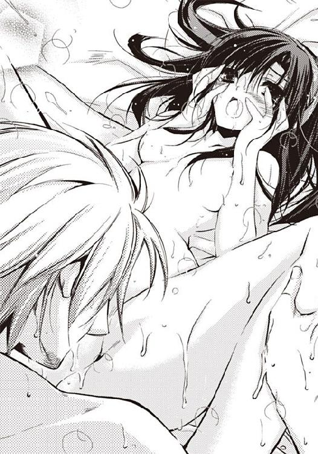
投げ出した下肢をぶるぶると痙攣させ、背筋を弓なりに反らせて泣きわめく。
脳裏が、黒インクを流したように真っ暗になった。
トゥリーンの身体からフッと力が抜ける。短時間だが、失神していたらしかった。
ジェラールがのしかかってきた。
トゥリーンの膝を腰で割り、先端で秘裂を探り、秘口に押し当てる。淫らな蜜音を立てながら、剛直がトゥリーンの身体の奥を進んでいく。
トゥリーンは目を開いた。
ジェラールの青い瞳が、トゥリーンをじっと見つめている。彼の瞳に映る自分は小さくて弱々しい。男の目には、自分はこんな風に見えているのだ。
ひどい男のはずなのに、どこかトゥリーンを気遣っているようにも思える。
先端で襞をかきわけながら沈む男根は、とろけるほどの快感をもたらした。
「あぁっ」
「これが欲しかったんだろう？」
そうだ。これが欲しかった。気持ちがよかった。
だが、そんなこと、言いたくない。口が裂けても言いたくない。
はぁっと甘い吐息が漏れる。
先端が、こつんと最奥を突きあげた。
「くっ」
トゥリーンはぶるぶるっと震えた。リングでさんざんいじめられて感じやすくなっている秘芽が、彼の下腹部で圧迫されている。
ジェラールは、奥を抉るようにして、小刻みに動いた。感じるところが刺激され、身体の奥で甘い何かがふくらんでいく。
「あっ......あ、あっ......」
感じているのは身体の表面のはずなのに、剛直の先がこりっ、こつっと、奥の硬いところを抉るたびに、脳天を突きあげるほどの快感が走る。
トゥリーンの身体には、最奥に感じるところがあるらしい。
もう、目の前が金と銀にきらめいて、ぶるぶるっ、ぶるぶるっと痙攣を起こしていた。
ジェラールは満足そうに笑った。
「俺の子を孕め。栄耀栄華が約束される」
「い、いや......」
トゥリーンは暴れた。身体を貫かれ、押さえつけられているのに、それでも逃げようとしてもがく。
そのとき、殿下が上半身を倒し、乳首にちゅっとキスをした。
「あぁああっ」
トゥリーンはガクンガクンと震えた。
リングにいじめられた乳房は、甘い愛撫を欲していた。
舌先のぬめっと熱い感触は、溶けるのではないかと思うほどに心地よかった。
ジェラールが腰を激しく動かしはじめた。
「あー、あぁーっ、......あぁっ」
突きあげられ揺すりあげられ、頭が前後に揺すられる。
脳裏でキラキラ火花がきらめく。
揺すられ続けた頭が見せるまぼろしだとわかっていても、何かがちかっと光るたびに、トゥリーンの身体が変えられていく。
清楚な砂漠の姫が、ジェラールの行為に蜜を垂らす彼の所有物へと変わっていく。
自分の身体ではないみたいだ。
しっかりしなくては。気を確かに持たなくては。
「くっ」
最奥で熱い液体が爆ぜた。
──よかった。やっと終わったんだわ。寝させて貰える。
トゥリーンは目を閉じた。
身体全体が重く、綿のように疲れていた。
だが、ジェラールは、精を放ち終わっても、身体を離そうとしない。
「おまえのココ。終わっても、動いているんだ。こんないい身体、他にはないな」
「な、何を......？」
いったん力を失ったはずの男根が、再び力をみなぎらせていることに気づき、トゥリーンは恐怖した。
──このまま？ まさか......。
そのまさかだった。ジェラールは再び腰を動かしはじめたのだ。
気が遠くなった。
「い、いや、許して......。もう、苦しい、寝させてください、お願いです......っ」
今にも意識が途切れそうなほどなのに、これ以上されたら限界を超える。
「し、死ぬ......かも......」
「おまえのようないい身体をした女が、死ぬものか。......起きろっ。締めろ！ もっと締めろ！」
ジェラールがさらに強く腰を動かしはじめた。
強制的な快楽が嵐のようにやってきて、トゥリーンの意識をさらっていく。
「し、死ぬ......」
死なないまでも、どこかが壊れてしまいそうだ。
もう下肢はつけ根が痛んでガクガクしているし、擦過され続けた膣はひりひり痛い。
なのに、ジェラールが乳房をつかんで男根を前後させると、たちまちのうちに気持ち良くなってしまう。
いつまで続くのか。死ぬまで続くのか。
「や、やめて」
「やめない。俺が満足するまでは......」
視界が銀色に濁り、何も見えなくなった。
トゥリーンは失神した。だが、すぐに揺すりおこされる。そしてまた卒倒し、膣奥を突きあげられて悶える。
トゥリーンはうつろな瞳をさまよわせ、男にいいようにされるばかりだった。
ジェラールは、一度も抜かないまま、続けざまに三度精を放った。ようやく彼が満足して身体を離したときには、トゥリーンは、気息奄々になっていた。
腰が抜けて立ちあがることさえできず、ベッドの上でぐったりと身体を投げ出していると、ジェラールがトゥリーンに毛布を掛けた。
ジェラールが出ていく。ドアが閉まる音がする。
──ああ、やっと、やっと終わったんだわ......。
第三章 心かき乱されて
「毛布をかけずに寝ていると、風邪引くわよ」
碧眼の女性が、腰を屈めて、トゥリーンをのぞきこんでいた。青い瞳と目が合い、ジェラールが戻ってきたのかと怯え、悲鳴をあげて上半身を起こす。
ジェラールは毛布を掛けてくれたのだが、それは寝台の下に滑り落ちていた。
身体をすくませながら、反射的に布きれで胸と股間を隠して相手を見る。
「大丈夫だった？ すごい悲鳴をあげてたけど......」
やさしそうに目を細めているのは、西域の出身らしい、美しい女性だった。レースと刺繍、金糸銀糸の縫い取りが光る瀟洒なアバヤを着ている。
飾り帯に至っては、金の糸を編んで作った豪華なものだ。服の青が、瞳に映えて美しい。ウェーブのかかった亜麻色の髪は軽く結いあげられ、翡翠の簪で飾られている。
咲き誇る花のように、華やかな人だ。
「きゃあっ」
全裸でベッドに寝ていたことに気がつき、あわてて立ちあがり、ついたての後ろへと回りこむ。
「服はその中にあるわよ」
タンスの中に、色鮮やかなアバヤが何着か用意されていた。
トゥリーンはあわててアバヤを着こむ。
手のこんだ刺繍が美しい衣裳で、腰に飾り紐を軽く巻くと、西域の女のようになった。
どことなく落ち着かない気分でついたてを出ると、さっきの女が親切にアバヤの衿を直してくれた。
「衿のボタンは、ひとつだけあけておいて、瓔珞を見せるのが上品よ」
さっきは気づかなかったが、全身からにじみ出る上品な雰囲気が、ジェラールによく似ていた。親戚だろうか。
「服が気に入らなかったら、出入りの業者から買えばいいわ。瓔珞や腕輪もあるほうがいいわね。アバヤはアクセサリーがないとみすぼらしく見えるから。他の女たちに侮られないためにもね」
「でも、お金は......」
「タンスの引き出しに、毎月はじめに十リラずつ入っているわ」
引き出しを開けると、金貨が十枚、入っていた。これがどれぐらいの貨幣価値があるものかわからない。
「十リラあれば、ハーレムパンツとヒップスカーフと上衣とシルクベールを買えますか？」
「ああ、あなたのお国のお衣裳を買いたいのね。そうね。十リラだと、何十着も買えるわね」
「そんなに？」
「後宮の女たちは、みな侍女を雇っているわ。月三リラで使用人が雇えるの」
「使用人がいれば、イネス様たちは出入りしないのですか？」
「後宮に来た一日目はイネスが世話をするの。それ以降は下女に命じたらいいわ。イネスは下女でも侍女でもないから、必要があれば部屋に入ってくるわ」
「必要って？」
「イネスフィア様の儀式よ」
身体が震えた。
あの、儀式と称した淫らな拷問を思い出すと、顔が青ざめる。まだ、秘芽と乳首はひりひり痛い。
「あれはいったい、何ですか？ あんな、あんな、おぞましい」
「女神イネスフィア様は、豊穣の神様よ。つまりは性交の神様ね。イネスたちは女神にお仕えする巫女。みんなイネスという名前なの。彼女らは巫女になるとき割礼縫合されて、性交の不可能な身体になっているから、後宮の女たちにきつくあたるの。私たちがうらやましいのでしょうね」
彼女は親切に後宮のしくみを教えてくれた。
後宮には四種類の女がいる。
部屋を持つ女たちと、女たちに使える侍女。掃除や食事を担当する下女。それに白い祭服のイネスたち。
「もしかして、みんな、儀式を受けるのですか？」
「いいえ、部屋を持つ女だけ。その中でも、ジェラールを嫌った女とか、自分から望んだ女とかね。略奪されてきた姫は、初日にイネスの儀式を受けるわね。いつもなら、イネスは下女のまねなんかしないんだけど、初日だけは特別なの。どんな女かわからないから、検査の意味もあるんでしょうね」
「私、殿下を引っ掻いてしまったわ」
「まっ。あははっ。そりゃ、儀式をされるわねぇ。だって、ジェラールは神様で、太陽だから」
「神様のような存在、という意味ですか？」
「いいえ違うの。皇帝陛下は神様そのものなの」
「太陽神が皇帝陛下なのですか!?」
「ああ、あなたのお国では神様はおひとりなのね。こちらでは太陽の神様以外にも、神様がたくさんいらっしゃるの。性交の神様イネスフィア様、水の神様ナイサス様、皇帝陛下、厠の神様までいらっしゃるのよ」
ハティムーンは一神教だったが、ティムスは多神教国家らしい。
「皇帝陛下は、奇跡をなして、人間の運命を操作できるのですか？」
「そうね。さすがに、奇跡は無理ね。ま、神様と同じぐらいえらい人、程度の意味かしら」
「ジェラール様も、神様？」
「いいえ。神様は皇帝陛下だけ。皇太子であるジェラールは、半神半人というところね」
皇族が神様？ そんなこと、はじめて聞いた。
ハティムーンでは、王は唯一無二の太陽神から、王権を与えられた「人間」にすぎない。
攻めて来る国があれば、王は民を守るために剣を持って戦う。民を統治し、政治を行う。王が民のために働くかわり、民は王に貢ぎ金を払う。王は神の加護を受けた集団の長に過ぎないのだ。
ひどい政治をして民を貧しくさせたり、戦いに負けた王は、神から王権を剥奪され、命を落とす。父王が死んだのも、戦いに負けて神様から王権を取りあげられたからだ。
「サソリが紋章なのはどうして？」
「強いからよ。サソリは不屈と不滅の象徴なの。そうそう、サソリの神様もいらっしゃるわ。戦神なの。ジェラールはまさしくサソリね。強くて、自信にあふれているわ」
ここは母国とかなり違う。ハティムーンにおいて、サソリは不吉の象徴だった。
「本を買いたいわ......」
「あら、あなた、文字が読めるのね。美容の本も恋愛の本もあるわよ」
「ティムスの歴史や経済や宗教を知りたいのです」
まずは知ること。
それが先だ。
「まぁっ。じゃあ、侍女を雇って、使用人を王立図書館に行かせなさいな。パピルスの本がたくさんあってよ。ジェラールの名前を出せば、いくらでも借りられるから。なんなら、私が使用人を探してあげるわ」
この親切な女は、皇弟殿下を呼び捨てにしている。ジェラールと同じ身分なのだろう。それはつまり......。
「あのう。あなたは誰ですか？」
「私はファティーマ。ジェラールの第一妃よ」
トゥリーンは驚愕した。
ジェラールの姉妹か親戚ではないか、貴族ではなく皇族だろうと予想していた。まさか正妃とは思わなかった。夫の愛妾を品定めするために、わざわざ後宮を訪れたのだろうか。
「正妃が後宮に!? 何のために？」
「だって私は子どもを産んでないもの。後宮は、皇族の貴種を守るところだから、妃であろうと後宮ぐらしよ。正妃だからって特別扱いされないの。子どもを孕めば、後宮を出られるわ。ああ、そうそう聞き忘れていたわ。かわいいあなたのお名前は？」
「トゥリーン」
「トゥリーンさん。下のお名前を教えて」
「下の名前はありません。私は下女で、ただのトゥリーンです」
「あなたは気品があるわ。下女というのはウソでしょう？ あなたはどこの国のお姫様なの？」
「......」
「ふふ、ごめんなさいね。私聞いてしまったの。あなた、私は王女だって自分で言ってらっしゃったわ」
聞かれたからには仕方がない。
言うしかないのだろう。
「私は、トゥリーン・ライリー・ハティムーン。ハティムーンの王女です」
「砂漠の宝石ハティムーンね。オアシスを抱える豊かな国だと聞いているわ。どうして下女だと名乗ったの？」
「イネス様から、後宮は、身分の差がなく、女はみんなお姫様だとお聞きしましたので」
苦しいウソだったが、正妃ファティーマは満面の笑みを浮かべると、トゥリーンの手を取って前後に振った。
「その通りよ。私とあなたは同じ身分なの。仲良くしましょう」
「はい。こちらこそ、よろしくお願いします」
温かくて柔らかい手だった。
「侍女の件もお願いされたと思っていいかしら？ コレール、侍女を捜すように、父に連絡してちょうだい」
「はい。お姫様」
壁際に控えていた侍女がおじぎをした。
大柄なのに、気配を感じない、影のような下女だった。目つきがやけにするどい。
「お父さま？」
「私の父はアブドゥラフマンよ。王の参謀なの」
正妃ファティーマが、ジェラールと同じ雰囲気を醸し出しているのも道理。皇族に極めて近しい人たちなのだ。
☆
トゥリーンが廊下を歩くと、窓枠にもたれておしゃべりを楽しんでいた女達がトゥリーンを指差し、ひそひそとささやいた。
「ほら、あの女よ。今度の遠征の略奪品。ジェラール様がご執心なんですって。珍しく下女をお持ち帰りになったそうよ」
「あんなの、どこがいいわけ？ 貧相な、地味な女じゃないの」
「下女が珍しかっただけじゃないかしら」
「ご執心もなにも、後宮に来た日にちょっとお抱きになっただけでしょう？ ジェラール様はいつもそうよ。新しく後宮に来た女はとりあえず味見をなさるけど、一度で飽きておしまいになるもの」
「そうよね。あんな女、何が魅力的なものですか」
「ふん。ひとりなのね。侍女さえいないんだわ」
聞こえよがしの悪口に足がすくむ。
後宮の女は、自分の部屋に縛りつけられているわけではない。後宮の外に一歩出ると、兵士たちに問答無用で斬り殺されるそうだが、後宮内は自由に歩くことができる。
後宮の建物は、単純な造りだ。池のある中庭を囲んでロの字形に三階建ての建物が建っていて、それぞれの角部屋と入口のところは沐浴場や厨房などの共有スペースと、侍女と下女たちの大部屋になっている。
共有スペースと中庭への出入りは、自由にできる。
部屋にも小さな湯浴み場があり、下女達に命じれば部屋の湯浴み場でお湯を使うことができるのだが、お湯を運ぶのは重労働だから、下女たちがいやな顔をする。
湯浴み場で湯を使うのは殿下が来たときのみ。
昼間に沐浴場に行き、水浴びをするのが、後宮の女たちの日課になっていた。
女たちは、中庭のなつめやしの木陰でお菓子を食べてのんびりしたり、おしゃべりに花を咲かせたり、編み物や刺繍をしたり、花を生けたりしている。
籠の鳥とはいえ、食事はおいしく、金銀宝石で着飾って楽しむことができ、涼しい屋内でのんびりできる。
侍女たちも姫たちも、みんな後宮ぐらしを楽しんでいるように思えた。
そして、彼女らをもっとも楽しませるのは、女たちの品定めとウワサ話だ。
トゥリーンは、彼女らの悪口にひるんだ。
思わず後ずさると、這いつくばって廊下を拭いていた女とぶつかりそうになった。
「ごめんなさい」
「失礼を」
無地のアバヤを着て掃除をしている下女は、砂漠越えのとき、トゥリーンが水をあげた中年女性だった。
「あなた、アイーシャさんよね」
「あっ、砂漠越えのときに逢った、ええと、トゥリーンさん」
「よかった。無事だったのね」
こんなところで同胞に出会えたうれしさのあまり、膝をついて手を取った。
アイーシャはほろほろと涙をこぼした。
「いやだ。泣かないで。アイーシャさん」
「だって、ハティムーンは滅んだのですよ......。王様も王子様もお亡くなりになったのに......。私の母国はもうないのに。こんなところで同国人に出会うなんて......」
そうだ。ハティムーンは滅亡した。父王も、兄王子も死んだ。
ジェラールが殺した。
怒りが胸の奥でちりちりと燃えあがる。
後宮の女たちがくすくすと笑いだした。
「下女どうし、仲良しなのね」
アイーシャはおどおどと目を伏せると、再び廊下を拭く作業に専念する。
いたたまれない雰囲気に、水浴をやめて部屋に戻ろうかと思って踵を返したとき、廊下の向こうから、正妃ファティーマが歩いてきた。
「はいはい。みんな、何を騒いでいるの？」
ファティーマが侍女を二人従えて歩いてくると、女達がおじぎをし、いっせいに壁際に並んで、道を譲った。
後宮において、やはり正妃は別格らしい。
ファティーマは華やかな空気をまとっていて、ぱっと目を引くあでやかさがある。
彼女は、他の女たちと同じように、壁際に控えて目を伏せているトゥリーンの前で足を止めた。
「トゥリーンさん。お約束していた侍女よ」
正妃の背後に、二人の侍女がいる。
ひとりは正妃のあとを影のようにつき従う女。たしか、コレールといっただろうか。
もうひとりは、軽薄そうだが笑顔の明るい女の子だ。はじめて見る顔だ。
「この子でいいかしら？」
若いほうの少女がにこにこと歩み寄り、トゥリーンの前で膝を屈めるおじぎをした。
「ギゼムと申します。よろしくお願いします」
周囲の女たちが、目配せを交わし合っている。
「この女、下女あがりのくせに、ファティーマ様と知り合いなの？」
ささやく声が聞こえてきた。
もう、このさい、虎の威を借りてしまおう。正妃と親しいのだと思わせておこう。悪口が収まるなら、それでいい。
「ファティーマ様、ありがとう。ギゼム。よろしくね。トゥリーンと申します」
「よかった。気にいってくれたのね。何か困ったことがあったら相談してね」
ファティーマはトゥリーンの手を取って前後に振った。
温かくてやわらかい手だった。
☆
「トゥリーン姫様、お衣裳の用意が調いましてございます」
「ありがとう」
パピルスを読んでいたトゥリーンは、紙をめくる手を止めて、侍女のギゼムが持ってきた衣裳を見た。
ハーレムパンツにヒップスカーフ。先端が巻きあがった革靴。上衣にシルクベール。フェイスガード。飾り帯。
繊細な美しいシルクだ。織りもいい。
ギゼムに手伝ってもらいながら、アバヤを脱いでハティムーンの装束に着替えると、ようやく自分らしくなれた気がした。絹のしなやかさが、ひんやりと肌に触れる。
フェイスガードで顔を隠すと、安堵した。
「素敵ですね。トゥリーン姫様。黒髪によくお似合いです」
「そうね。やっと私に戻った気分よ」
「ジェラール様に早くお見せしたいですね」
「来てほしくないわ」
ぞっとした。後宮に連れてこられた日とその翌日のことは、悪夢でしかない。
「またまたそんなご冗談を。後宮の女で、ジェラール様に恋していない女はいません」
正妃ファティーマが世話してくれた使用人ギゼムは、明るくて元気が良く、感じのいい侍女なのだが、エミーネと違っていた。
後宮のルールに染まりすぎて、主であるトゥリーンの意向を無視するときがままあるのだ。
黙りこむと、ギゼムがお茶を淹れながら話し出した。
「イネス様に頼んで、儀式をなさったらいかがですか？」
「なんで......」
あんなおぞましい折檻を、どうして受けなくてはならないのだ。
ファティーマは、望んで調教を受ける女がいると言っていたが、信じられない。
「なんでって......。後宮の女は、しょっちゅうやってますよ。ジェラール様を歓迎し、自分のもとに来て頂くために、イネス様に調教してもらって身体を磨くのです」
「磨く？」
「ええ。締まりをよくするために、りんの玉を出し入れする訓練をするそうですよ」
「出し入れ、って、何を？」
「りんの玉です。卵より一回り小さい丸い鈴なんですが、それをアソコに入れたり出したり、鈴を鳴らしたりして、動かし方を覚えるんですって。ジェラール様ははじめての女より、熟れ頃のよく濡れる女がお好きらしいんです」
「そんな訓練、したくないわ」
「だったらカンタリスを使いますか？ 感じやすくなってよく濡れるそうですよ。でも、カンタリスってたくさん使うと、流産したり命を落としたりするそうですよ」
はじめて後宮に来た日、イネスにカンタリスを使われた。ジェラールははじめての女が嫌いだと言って。
「舐め方を覚えるのもいいそうです」
「何を舐めるの？」
「そりゃ、男性のものに決まってます」
そんなことも知らないのかと言わんばかりの口調に、トゥリーンは目を伏せた。恥ずかしくて顔をあげられない。
「感じやすくするために、乳首や花びらに穴を開けてピアスをつける人もいるんですって。感度がよくなるそうです。お腹に布を巻いて、細いお腹を作って、人体改造する人もいるそうですよ。でも、お腹を細くするには一年ぐらいかかってすごく苦しいって。ピアスのほうが楽なんですって」
お茶のカップがテーブルに当たってカチカチ鳴った。
恐ろしいことを言われて、身体が小刻みに震え出す。ここは魔窟だ。なんというところに来てしまったのだろう。
「イネス様たちも、殿下に意中の女がいらっしゃらないときは、よく調教できた女をお相手に推薦するそうなので、がんばればがんばるだけ、ジェラール様の夜の訪れが多くなりますよ。ただでさえ、外国から略奪してきた女は、一度抱いたらお飽きになることが多いそうですから」
『ふん。どうせ、今晩限りよ。ジェラール様が、こんな女に夢中になるもんですか』
後宮に来た日、女たちがつぶやいた言葉を思い出す。
あれはこういう意味だったのだ。
そういえば、あれからジェラールの訪れがない。より正確に言うと、あのはじめての日以来、ジェラールは一度も来ていない。その間に月が来て、妊娠していないことが証明されて安堵した。
トゥリーンは飽きられたのだろうか。もう二度と殿下の訪れはないのだろうか。
ほっとしたような、寂しいような、頼りないような、不思議な気分だ。
ジェラールは昨夜も今夜も明日の晩も、後宮の女と楽しく夜を過ごしているのだろう。
相手は正妃ファティーマかもしれないし、別の誰かかもしれない。横の部屋の女かもしれない。
自分の気持ちがわからない。まるでジェラールの来訪を待ち望んでいるようだ。死にたくなるほど辛い思いをしたというのに。
「後宮って何人の姫がいるの？」
「ええと、三階建てで、一階に十部屋ほどあるから......ざっと百二十人ですか。ああ、でも、空き部屋もあるから、百人ぐらいでしょうね」
ぞっとした。
百人もの女が、ひとりの男の訪れを待って妍を競う世界。
──私はなんというところに来てしまったの。
ジェラールがかりに毎晩違う女のもとを訪れても、トゥリーンの部屋にやってくるのは、三ヶ月以上もあとになってしまう。
トゥリーンが黙っていると、ギゼムはさらに演説を続けた。
「イネス様の儀式って、気持ちよくなりすぎたあげく、正気に戻れない女もいるそうですが、トゥリーン姫様は下女で、奴隷になる運命だったのでしょう。奴隷って、ろくな食べ物も与えられず、朝から晩まで働かされるそうですよ。しかも奴隷は一生奴隷で、子どもも奴隷なんですって。そんな運命から抜け出られたのですから、殿下に愛されるようにがんばってくださいよ」
「もういいわ。おさがりなさいな。ひとりにさせて」
トゥリーンは、不愉快な侍女を追い払った。
奴隷の扱いがひどいというのは聞き捨てならない。
炎天下の砂漠越えも正気の沙汰とは思えない。
我が国の民たちが、ひどい扱いを受けているのかと考えると胸が痛む。
「わかりました。お姫様。失礼します......きゃあっ。殿下っ!! トゥリーン姫様、殿下がおでましになりましたっ!! わぁあっ。すっごいっ!! 私、お酒を用意して参りますっ。ラクーでいいかしら」
「お酒はだめ。お菓子にして」
酒を飲んだジェラールと二人きりなんてまっぴらだ。
お菓子のほうが安心だ。
「かしこまりました。お菓子、用意して参ります!!」
ジェラールが入ってきた。
トゥリーンは思わず身体をすくませた。シルクベールを目深にかぶって顔を隠す。
「久しぶりだな。その服、似合うな。おまえが死んでないか不安だったが、元気そうだな」
今日は正装ではなく、あの革鎧を着て、砂ボコリにまみれている。
後宮に連れてこられた日の辛い記憶が思い出され、トゥリーンは、ぷいと顔を背けた。
「なぜ、私が死ななきゃいけないんです？」
「死にたい死にたいと言っていたから」
パピルスを読んでいるうち、似ているようで違うティムス王朝の文化や経済に魅了され、死にたい気持ちが無くなった。
ティムス王朝は、蛮族ではなかった。豊かな文化と宗教を持つ、深い歴史のある国だ。
ハティムーンにいたころに聞いた、戦いを好み、殺人を楽しむ好戦的な野蛮人では決してない。
正妃ファティーマのおかげで、後宮の女たちの悪口が少しだけ収まったせいもあり、後宮の居心地は悪くない。好きなだけ本が読めるのが楽しい。
知的好奇心は、希死念慮をも追いやってしまうものらしい。
「何を読んでいるのだ？ パピルス？ 国のなりたちについて書かれた本だな」
「皇弟殿下、お話があります」
トゥリーンは、椅子から立ちあがると、ジェラールに向かい合った。
「何だ？」
ジェラールの顔色は悪かった。無精髭はあいかわらずだが、目の下にクマが浮き、げっそりとやつれていて、血の臭いもする。
彼は腰の剣を外して卓の上に置くと、寝台に倒れこんだ。
「あとにしてくれ。疲れているんだ」
「いいえ、今、言わせてください」
二度と訪れないかもしれない人だ。今しか言う機会はない。あとにすると、ジェラールはトゥリーンを抱くだろう。真剣な会話はできなくなる。
「奴隷の扱いを良くしてください」
「んっ？」
ジェラールは寝台で横になり、眠そうな瞳でトゥリーンを見た。
──だめよ。こんな言い方じゃ。この人は皇族なのよ。そのほうが国の利益になるのだと説明しないと。
「奴隷は、しっかりと食べさせてちゃんとしたところで眠らせるほうが、よく働きます。働けばいい生活ができるのだと思わせるほうが、国益に適います。ひいては、治安がよくなり、統治しやすくなります」
「国益に適い統治しやすくなる、か。おもしろいことをいう。砂漠の女は控えめだと思っていたのだが。解放奴隷はいい制度かもしれぬ。兄者に、私の提案を通すことは難しいのだが、誰か他の文官から提案させるようにして、会議にはかることにしよう」
実の兄に提案を通すことは難しい？ わざわざ他の文官から提案させる？ どういう意味だろう。だが、疑問を解消するより、言うべきことが他にある。
「炎天下の砂漠越えも無茶です。涼しい夜に砂漠越えをするべきです」
「オアシスでちゃんと休ませたし、充分な量の水も持たせた。日光よけのスカーフを全員に巻かせた。無理はさせてないぞ。歩兵も、同じ条件で歩いていただろう」
「ですが、倒れた人はいます」
「あはは。おまえは痩せすぎなんだ。もっと食べて、肉をつけろ。そんな細い身体じゃ、俺の子は産めないぞ」
トゥリーンは、顔を赤くしてうつむいた。
ジェラールはベッドの上で寝返りを打つと、天井を見つめながら、静かな声で言った。
「奴隷として働かせるのだから、健康な成人男女を選んでいる。持病でもない限り、無事に砂漠を越えられるはずだ。だいいち、夜の砂漠越えは、夜盗が出る」
「兵を夜盗が襲うのですか!? 返り討ちにされるのではありませんか!?」
「軍隊とはいえ、遠征のあとは疲弊している。略奪品もたっぷりだ。戦闘力のない奴隷を何十人も連れて動きが鈍い。しかも暗くて、逃げ場がない。夜盗にとっちゃおいしい獲物だな」
「そうだったのですか......」
サソリのような凶暴な男だと思っていたが、違っていたのだろうか。
「茶を淹れてくれ。喉が渇いた」
「わかりました」
お茶を用意し、トレイに載せて戻ってきたら、ジェラールはすうすう寝息を立てていた。
革鎧に血が滲んでいる。
こんなごついものを着ていたら、ゆっくり寝られないのではないだろうか。
革鎧をゆるめようとして、ヒモを探って肩をいじっていたら、刀傷に気がついた。浅いケガだが、包帯に血が滲んでいて痛々しい。脇腹にも腕にも背中にも、新旧様々な刀傷がある。
おかしい。皇族は太陽で、神様ではないのか。引っ掻いてしまっただけでも、折檻されるほどなのに。どうして皇弟殿下が、戦いに赴くのか。ケガをして帰ってくるのか。
革鎧。刀傷。疲れた。砂まみれ......。
はっと気づいた。
「ジェラール様、国攻めをしてきたのですかっ」
遠征のあとは、王宮に報告に行くのだと言っていたのではなかったか。潔斎して正装に着替えて。
「う......わめくな。その通りだ......眠らせてくれ。寝てないんだ......」
彼が生きて帰ってきたということは、ジェラールの率いる軍隊により、どこかの国が攻め落とされたことを意味する。
王と王位継承者が殺されて、三十人ほどのその国の民が奴隷にするために連れて来られる。
そして王族の姫が後宮に入れられる。
トゥリーンのような女が、まさにいま、この後宮で泣いているのだ。どんな女なのだろう。
正妃ファティーマが、トゥリーンを見に来た理由がやっとわかった。後宮にやってきた新しい女は気になってしまう。恋敵になるかもしれないのだから。
「寝てない......って、どれぐらい？」
「丸二日だ」
「ジェラール様っ。だめですっ。起きてください！ 王宮に報告に行かなくてはっ。報告の義務があるのに、女の部屋で昼寝していいわけがありませんっ！」
「うーっ。わめくな。頭に響く......。だが、確かにその通りだ。報告が遅れると兄者に不信の念を抱かれてしまう。兄者は私を疎んじていらっしゃるからな」
ジェラールは、頭を振りながら上半身を起こした。亜麻色の髪が太陽のように輝きながら肩先で揺れる。
「ご兄弟でいらっしゃいます。報告が遅れたぐらいで、国のために戦ってきた弟殿下を、お兄様が邪険になさるわけがありません」
ジェラールはふっと笑った。
大きな手で、トゥリーンの頭に手をおいて、ぽんぽんする。
瞳にスッと翳りが差し、笑顔がどこか寂しそうに歪んでいた。
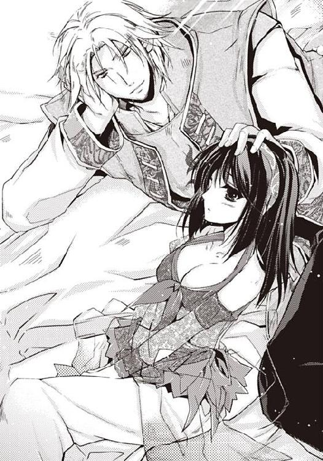
「トゥリーンはやさしいな。まるで母上のようだ。俺の母は身分が低いことを気にしていて、自分から宿下がりをしてしまった。王子を産んだのだから堂々としていたらよかったのに」
「お母様に会いにいらっしゃればいいではありませんか。ジェラール様は弟皇子で、皇帝陛下に次ぐおかたです。遠慮深慮は必要ございません」
「そうだな。今度また墓参りに行って、母上に逢うことにしよう」
「お亡くなりになっていたのですか？」
トゥリーンはあわてた。ジェラールの母は鬼籍に入っていたのか。そんなこと知らなかった。ジェラールはえらそうで、弱みなどカケラも感じられなかった。
「ああ、もう二年ほど前のことだが」
「失礼をお許しください」
「良い」
「ご病気だったのですか」
「ああ、急病だったらしい。遠征に赴くときには元気だったのに、ようやくのことで国を落とし、帰ってきたときにはすでに葬儀されたあとだった。死に目にあえなかったのが寂しいな」
頬を殴られた気分だった。
母のようだと言われたのに、不快感はなかった。
『兄は私の提言は聞かない』『報告が遅れると兄者に不信の念を抱かれる』『兄者は私を疎んじていらっしゃる』『母は身分が低いことを気にしていて、死に目にあえなかった』
トゥリーンとて、王女である。ジェラールがどういう状況に置かれているのか、想像できる。
母の違う皇帝陛下と弟皇子。
兄は、身分の低い母から生まれた弟を疎んじて邪険にし、早く死ねとばかりに、危険な任務を押しつけている。
実母の急病さえ、国のために戦う弟皇子には、知らされることもなかった。
ひどい男だと思っていた。
サソリのような男だと思っていた。
──違うわ。ジェラール様はサソリじゃない。
そして、正妃ファティーマや、後宮の女たちのおそらくすべてが間違えているように、自信にあふれた男でもない。
──このひとを理解できるのは、後宮の女の中で、私だけ！
ジェラールはだるそうに寝台から降りると、トゥリーンが用意したお茶を飲み干した。
「熱いっ」
「ふーふーして飲まないジェラール様が悪いのですっ！」
「あははっ。その言い方、母上とそっくりだな」
「もうっ。私はあなたみたいな大きな子どもの母親になった覚えはありませんっ」
私は何を言っているのだろう。男性に顔を見せることさえ恥じらう、控えめな砂漠の女のはずなのに、自分の国を滅ぼした男と、まるで恋人どうしのように話している。
「あはは、おまえのそういう気の強いところが好きだ」
ジェラールは、トゥリーンをそっと抱き寄せると、おでこにそっとキスをした。
足下がぐらぐら揺れる。
好きだという単純な一言は、トゥリーンを芯から揺さぶった。めまいがして倒れてしまいそうだ。身体が熱く、目の前がくるめく。心の臓がどきどきしている。
「報告に行ってくる」
ジェラールは卓の上の剣を取ると、腰からさがっているベルトにつけた。
「行ってらっしゃいませ」
ジェラールはくるっと振り向いた。革鎧の裾がふわりと広がり、彼をいっそう大きく見せる。
「今晩、おまえを抱いてやる」
「え？」
「イネスの儀式はしない。俺の魅力で、おまえの心を落としてやる。一睡もさせないから覚悟しろ。朝まで抱いてやるから俺の子を早く孕め。きっとおまえに似た強い男の子が産まれるだろう」
「誰が、あなたなんかにっ」
「あははっ」
ジェラールは踵を返すと、きっぱりした足取りで歩き去っていった。
「なんて......」
なんという勝手な男だろう。
トゥリーンは、雷に打たれたように立ちつくした。
「あらっ。せっかくお菓子を持ってきたのにっ。もうっ。トゥリーン姫様、殿下をつなぎ止めてくださいよっ」
息せき切ってお菓子を持ってきたギゼムが文句を言った。
足のついた皿に、ロクムが美しく盛られていた。ロクムは、もちもちした食感の甘いお菓子だが、今は胸がいっぱいで食欲がない。
「お菓子はあなたが食べなさいな。もうおさがり」
「わー。ありがとうございます」
ギゼムはにこにこと笑い、大事そうにお菓子の皿をもっていそいそと退出していった。
「こんなにたくさん、どうしよう。太りそう」
うれしそうなギゼムの声が聞こえてくる。
『おまえは痩せすぎなんだ。もっと食べて、肉をつけろ』
その通りだった。トゥリーンは豊満さや妖艶さにはほど遠い。なるほどもっと食べたほうがいいのだろう。
『そんな細い身体じゃ、俺の子は産めないぞ』
かーっと顔が赤くなった。
「ふんっ」
トゥリーンはそっぽを向いた。
☆
ジェラールがやってきたのは、月が夜空を明るく染めはじめた頃だった。
「ただいま」
月明かりに照らされて立つ正装の彼は、みとれるぐらいに美しかった。砂よけの白いマントが月明かりを跳ね返して白く光る。
なるほど神だと感心する。
トゥリーンはパピルスを閉じると、彼を出迎えた。
「お帰りなさい」
つられてそう言ってしまい、顔が赤くなる。
まるでジェラールの訪れを待ちこがれていたみたいだ。
「一緒に風呂に入るか？ んっ？」
ジェラールがトゥリーンを抱き寄せて、おでこにキスをしながら言った。
「侍女を休ませましたので、湯浴みではなく水浴になります。私がお世話をすることになりますがよろしいですか」
「いい。俺は王宮に行く前に潔斎したからな」
「私も昼間に湯浴みをしました」
「俺に抱かれるための準備をしたわけか？」
「違いますっ！ 誰が、あ、あなたなんかを、待っているものですかっ。私は、あなたなど、好きではないのですっ!!」
「あはは。おまえはおもしろいなぁ。はじめてだ。おまえのような女は......」
顎をつかまれ、フェイスガードを取られる。
顔を見られるのは恥ずかしい。目を伏せていたら、口づけをされた。唇の先端だけを合わせる、軽いキスだ。
抱き寄せられてキスをされるのは心地よい。こわばりが解けて、甘い液体に変わってしまいそうだった。
「おまえはおもしろい。顔を見られることさえ恥ずかしがるのに、誰よりも気が強い。王立図書館でパピルスを借りる後宮の女がいるなんて知らなかった。媚薬を盛られてさえ、欲望よりも名誉を選ぼうとする。誰もが俺に好かれようとして妖艶さを競っているなかで、清楚で真っ白で、俺に抱かれながらいやがって泣きわめく」
違う。トゥリーンはもう、ジェラールを嫌っていない。
顎をすりつけられる。無精髭のちくちくがくすぐったい。身体の芯に、ぶるっと戦慄が走った。
「んっ、......あっ......はっ、はぁ......っ」
再び唇を重ねられる。今度のキスは深かった。
口腔に入ってきた彼の舌が、緊張に縮みあがっているトゥリーンの舌を絡め取り、荒々しく動く。
接吻がこんなに心地よいなんて思わなかった。
溶け合ってひとつになってしまいそうだ。
「んっ......は、はぁ......っ、ん、あ......ぁ......ん」
身体の奥深いところをさぐられるような、熱いキスを受けていると、頭がぼうっとなってくる。
彼の大きな手が背中に回り、お尻を撫で回してきた。
ぞくっと来て、後ろ手にジェラールの手を払いのける。
ぴしゃっと派手な音がした。
「痛っ」
「知りませんっ」
触ってくる彼と、手を払おうとするトゥリーンの無言のいさかいがあったのち、ジェラールが根負けしたかのように言った。
「そんなに抵抗するなら、縛ってやるぞ」
「ご自分の魅力で私を夢中にさせてやるんじゃなかったんですか？」
「あはは。おまえにはかなわない」
抱きあげられ、寝台の上に放り投げられる。
「きゃあっ」
身体が弾んで落ちそうになった。
横座りになって身体をささえていたら、ぎしっと音を立ててベッドに乗ってきた彼が、シルクベールの隅を持って引っ張った。
ベールがはらりとほどけ、布で隠していたストレートロングの黒髪が肩先に流れる。
「その衣裳、そそるな。ところで、どうやって脱がしたらいいんだ」
「知りませんっ」
ぷいと顔を背ける。
彼がおおいかぶさってきた。
ベッドに押し倒される。
二人でベッドで抱き合っているというのに、不安や恐怖は感じなかった。むしろ、守られているような、おだやかな心地よさがあった。
おでこにキスをされ、頬をすりつけられる。無精髭のちくちくが心地よい。
「やっ......くすぐったい......」
「ほんとうは感じているくせに？」
彼は、自信たっぷりに笑いかけた。ジェラールの青い瞳がトゥリーンをみつめる。
精悍でありながら整った顔立ちは、みとれるほどに美しい。なるほど後宮の女たちが夢中になるわけだ。
「感じてなんか、いません」
トゥリーンはつんと顎を背けた。
胸のあたりをまさぐられ、上衣のヒモをほどかれる。上衣の前がはらりと広がり、乳房が丸出しになった。
トゥリーンはあわてて乳房を手で隠した。
「おまえは耳が弱いんだよな」
フッと息を吹きかけられ、身体の芯がぞくっとした。うつぶせになったところ、背筋のへこみにキスをされた。
背中に顎をすりつけられてゾクゾクする。
「んっ、んっ、......ぁ、んっ」
「この衣裳、スカートは巻きつけているだけだし、ズボンはヒモで結んでいるだけなんだな......」
彼の大きな手が前に回り、お腹をさぐって器用にヒモをほどいてしまった。
「やっ、やだっ」
帯を解かれウエストがゆるゆるになったハーレムパンツが下ろされ、足首から引き抜かれる。
「いやっ」
恥ずかしがって足をばたつかせたせいで、逆に脱がせやすくなったようで、下穿きまでも取られてしまい下半身が丸裸にされてしまった。上衣の袖を通しただけの恥ずかしい格好だ。
「やっ、やだっ......」
お尻を見られる恥ずかしさにぶるぶると震えていると、背中のヘコミを指先でなであげられ、電気が走った。ぶるっと身体が震えた。
「背筋、感じるだろ？」
「知りませんっ！」
「ははっ。おまえは知らないばっかりだな」
ジェラールは、背中のヘコミを舐めあげてきた。
「やっ、な、何を......っ、......はっ、はぁ、......はぁっ」
背中なんてなんていうことのない部分のはずなのに、どうしてこんなに感じるのだろう。
イネスの儀式のせいで、敏感になったのだろうか。
いいや違う。それはきっと、ジェラールが嫌いではなくなっているから。彼に心を許しているから。
ジェラールは脇腹や肩胛骨のヘコミをさわさわとくすぐって、あげくに耳に息を吹きかけてきた。
「そろそろ欲しくなってきただろう？」
耳たぶを甘く噛まれてささやかれ、両手で耳を押さえてしまう。
「はっ、はぁっ......はっ」
たまらなくなったトゥリーンは寝台の上を横に転がって逃げた。
仰向けになったところにおおいかぶさられ、上衣を開かれ、胸乳を揉まれた。先端の小さな尖りを舐められて、甘い陶酔に襲われる。
「んっ、はっ、......あっ」
トゥリーンは、首をくなくな振って悶えた。ジェラールが舌先で乳首をはじくたび、ひりっとくる戦慄が身体に走った。
「いい声だ」
むっとなって、口を閉じようと思うのに、彼が乳首を吸いあげると、思わず声が漏れてしまう。溶けてしまいそうに気持ちがいい。
「あっ、......ぁっ」
愛撫されているのは乳房なのに、なぜか下腹が熱くなる。とくっと小さな音を立てて蜜液が流れ出た。
トゥリーンの胸のふくらみの内側には、硬い芯があるのだが、彼の温かい手が揉むたびに、芯が揉み出されてしまいそうだった。せつなさを伴う気持ち良さに、身体全体が熱くなる。
「んっ、んっ」
ジェラールの手が股間に伸び、秘唇をいじろうとした。蜜液があふれていることを知られたくなくて腰をひねるが、すでに触られたあとだった。
彼がにやっと笑った。
トゥリーンの下肢を膝で割り、腰をねじこんでくる。下肢が大きく引きはだけられ、先端が秘裂に押し当てられた。
確かめるようなゆっくりした動きで、男根がトゥリーンの秘部に沈んでいく。
大きな肉の楔が身体を穿つ感触は、空虚だったところを満たされている充足感があり、単純に心地よい。
「あっ、......あっ」
やがて先端が行き止まりに当たって、侵入が止まった。すごい深さだ。お臍の内側まで埋められた気分で、腰がくなくな揺れてしまう。
彼は、挿れてしばらくは、腰を動かさずにじっとしている。最奥を先端でこつっと押しあげられる感触に、むずっと来る。
「どうだ？ 気持ちがいいだろう？」
無邪気に言うところがかわいい。
「何を笑っているんだ？」
彼が不思議そうに聞いた。
「だって、あなたが子どもっぽいから」
口にしてから気がついた。
トゥリーンは、ジェラールが嫌いではなくなっていた。身体を合わせることに、緊張も恐怖もない。こうすることが気持ちいいと思っている。
イネスによる細工なしで、彼と愛し合うのははじめてなのに、行為は少しもいやではなかった。溶け合ってひとつになるような、甘い満足感があった。
不思議だった。あんなに死にたかったのに、希死念慮は綺麗に消えてしまっている。
だが、どれほど行為が心地よく、熱に溶けてしまいそうでも、トゥリーンの中には溶けきれないものがあった。
ジェラールはハティムーンを侵略し、父王と兄を殺した男。
父が戦いに負けて死んだのは、神が王権を剥奪したせいだから、王女としてはしかたのないことと思える。冷たいようだが、神がお決めになったことに、人間は逆らえないのだから。
父もいつか王権を失って死ぬことの覚悟を決めていたはずだ。それが王の運命だ。
だが、王権を持たない兄を殺し、ハティムーンを滅ぼしたことは許せない。
気を確かに持ち、しっかりしなくてはならない。
この人は、好きになってはいけない人。
もしもティムスの王弟殿下に、身体だけではなく、心までも許してしまったら、ハティムーンの王女としての矜持がうち砕かれる。それはトゥリーンにとって、絶対に譲れないことだった。
「子ども扱いするな。おまえを感じさせてやるからなっ」
むきになって言うところがかわいい。
男臭くて精悍な男性なのに、ときおり少年のような素顔をのぞかせる。
その落差がたまらない。
後宮の女たちがジェラールに夢中になるのがわかる気がする。
「してませ......あっ、......あぁっ......あーっ」
彼が、奥を抉るようにして小刻みに腰を動かしてきた。これをされると、彼の下腹部で、感じやすい秘芽がこすられてたまらない。
心地よさのあまり声が漏れ出る。
トゥリーンは自分の手のひらで口をふさぎ、声を抑えた。
「もっと声を聞かせてくれ」
手首を持たれ、シーツの上へと押さえつけられた。
「あぁっ。......はっ、はぁっ......だめぇーっ」
「うっ、おまえのなかは、温いな」
トゥリーンは、腕を動かして、彼の頭を抱いた。ほとんど無意識に、頭をなでなでしてしまう。
「だから、こ、子ども、扱い、するな、と言ってる、だろうがっ！」
ジェラールは息を弾ませながら、腰を前後に動かしはじめた。
先端の肉の実が、襞を引っかけながら後退し、またずずっと奥に沈みこむ。
最奥を剛直で押されることによって生まれるびりっと来る戦慄が、背筋を伝って脳裏を揺らし、金と銀のまぼろしを生み出す。高いところから下をみたときにも似て、くらっとくる感じがたまらない。
──感じちゃだめ。好きになっちゃだめ。
冷静なトゥリーンがささやくが、脳裏に広がる万華鏡に、意識があいまいになっていく。極彩色なのに濁ったきらめきに圧倒され、何が何だかわからなくなる。
もうこのまま溶け合って、ひとつになってしまいたい。ハティムーンのことも、殺された兄のことも、何もかも忘れてしまいたい。
「あっ、あぁっ、......あっ」
ゆさゆさと揺すりあげられながら、トゥリーンは甘い声をあげて悶えた。
こうしていることへの後ろめたさが、波のようにうち寄せてくる快感に呑みこまれ、なにもかもが溶けて崩れる。輪郭線が消えてすべてがあいまいになっていく。
「うっ、うぅっ」
ジェラールがうめき声をあげた。
動きがいっそう激しくなり、トゥリーンを突き壊すのではないかと思うほどに動いている。頭が上下に揺すられて、何も考えられなくなる。
最奥を先端が抉るとき、下腹の奥がきゅんとなり、重くて太い刺激が走る。
「あっ、んっ、......んっ......、んんっ、......あっ、あっ」
振り回される感じがたまらない。
まるで疾走するラクダに乗せられているみたいだった。
「うっ」
彼が突然動きを止めた。
下腹の奥が熱くなる。ジェラールの先端から熱い液体がしぶいている。それはトゥリーンに、甘い快感と満足感をもたらした。
私はジェラールが好き。
身体だけでなく、心までも、殿下のとりこになっていた。
「俺の子どもを産んでくれ」
もしもほんとうに子を生したら、どうすればいいのだろう。自分の国を滅ぼした男の子どもを産むのだろうか。それはハティムーンへの裏切りではないのか。
「愛してる......」
トゥリーンは答えなかった。
ジェラールが身体を離し、ごそごそと身繕いをした。
そして、ベッドの上で力無く身体を投げ出しているトゥリーンを抱きしめて、横向きに寝ころんだ。
そのままぴくりともしない。
「どうしたの？ ジェラール様？」
異常を感じて彼の顔をのぞきこむと、すうすうと寝息を立てていた。
トゥリーンはごそごそと彼の腕の中から這い出した。
「今夜は眠らせないんじゃなかったの？」
頬をつついてささやくが、起きる気配がない。
そうだった。今日は国攻めから帰ってきて、潔斎して王宮に報告に行ったのだ。丸二日寝ていないと言っていた。疲れていても無理はない。
──国攻め......。
目の前を赤の幻がよぎった。
王宮で燃えあがる炎。諸刃の剣からしたたり落ちる血。砂漠の太陽の赤いゆらめき。ジェラールにムリヤリに身体を開かれて失神したときのまなうらの赤。
今日の月は妙に赤い。
卓の上に置かれた剣が目に入った。トゥリーンは剣を手にとり、鞘を払う。
磨かれた刀身は、月明かりを跳ね返し、さえざえとした光を放っていた。たくさんの血を吸ったのであろう剣は、銀色に輝いて美しくさえ見えた。
──私はなにをしようというの？
視界にちらつく赤のまぼろしが、トゥリーンを突き動かす。
赤い月が、トゥリーンに命じている。この男を殺せ。ハティムーンの恨みを晴らせ。父と兄の敵をとれ。
この剣を振り下ろしたら、まなうらの赤は消えるのだろうか。
王権を神授せずに果ててしまった兄と、滅びてしまったハティムーンの無念が晴れるのだろうか。
「何をしている？」
トゥリーンははっとして短剣を後ろ手に隠した。
「何でもありません」
「刺したかったら刺せ。兄者の命令とはいえ、俺はたくさんの命を奪ってきた。俺は神ではない。俺もいつかは誰かに刺されて死ぬのだろう。因果応報というものだ」
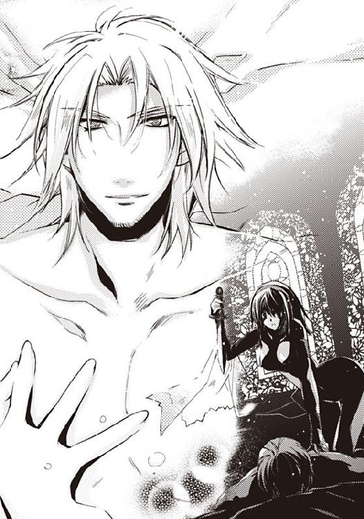
静かな口調に悲哀が滲み、青い瞳に達観したかのような色が浮かぶ。
できません、と言いたかった。だが、今のトゥリーンは弾ける寸前のホウセンカだった。
ちょっとした刺激に反応してタネを散らすホウセンカのように、少しでも口を開くと感情があふれてしまう。
トゥリーンは話す代わりに首を振った。
「体重を掛けて首を刺せば、非力な女でも命を奪うことができるぞ」
ジェラールは指先で自分の首を示した。
「できないんです」
トゥリーンは震える手で抜き身の剣を、卓に置いた。
宝石で飾られた鞘が落ち、金属音を立てる。
涙が盛りあがり頬を伝う。
「ああ、どうしよう。私、あなたと一緒の時間を、もっと過ごしたいと思ってる」
トゥリーンは滂沱と涙をこぼしながら慟哭した。
「どうしてなの？ お兄さまの敵なのに......っ。ハティムーンを滅ぼした敵なのに......っ」
自分の心がわからない。
姫としての矜持と。
ただの女としての自分の心と。
相反する気持ちが逆方向へと向かうので、身体と心が引き裂かれそうだ。
いっそ下女ならよかったのに。
皇弟殿下が気まぐれにさらってきた下女なら、まっすぐに彼の胸に飛びこめたはずなのに。身を裂かれるような苦しみに、悶えずにすんだのに。
「おまえの兄は生きているが？」
あまりにもあっさり言われたせいか、まるで異国語のように聞こえてしまい、聞き返してしまう。
「え？ い、いま、なんて？」
「おまえの兄は殺していないと言ったのだが」
兄が生きている？ そう言ったのか、ジェラールは。
身体がかぁっと熱くなった。
信じられない。嘘だ。そんなこと嘘に決まっている。
アイーシャも、『王子は死んだ、ハティムーンは滅びた』と言っていた。
なによりもトゥリーンは、亡国の姫として生きてきたのだ。
「ひどいわ。からかわないでっ。......あなたは、兄が死んだってっ」
「死んだと言ったのは、ハティムーンの王女をおびき出すための方便にすぎぬ」
「あなたは嘘を言っていたの？」
「そうだ」
しれっと言われて脱力する。
ジェラールはさらに言った。
「王位継承者を殺してどうする？ 砂漠の国は、砂漠の民に統治させるほうがいい。文化も宗教も考え方も違う外国を直接支配するなんて困難なことをするよりも、植民国にして貢ぎ金を支払わせるほうが国益に適う」
「ハティムーンは、滅びていないの......？」
青天の霹靂だった。
兄が生きているというだけでも驚きなのに、ハティムーンが滅亡していなかったなんて......。
「オアシスを守る国をなぜ滅ぼすのだ？ 植民国にするために王を殺し、姫を略奪するのが俺のやり方だが、遠征で滅亡させた国などひとつもないぞ。なんでそんな無益なことをしなければいけない？」
ジェラールは真顔だった。
ティムスは、戦いを好み、人殺しを楽しむ好戦的な蛮族ではない。ほんとうに兄は死んでおらず、ハティムーンは滅びていないのだ。
アイーシャもトゥリーンも、滅びたと思いこんでいただけだったのだ。
トゥリーンは、床にへたりこんだ。腰が抜けるほど驚いていた。
あまりの衝撃に、涙が止まってしまっていた。
じわっと喜びが湧いてきて、次にはジェラールの嘘に悩まされていたことに、腹立たしくなった。
「おい。どうした？ 大丈夫か？」
「嘘つきっ！」
トゥリーンは足下にあった鞘をジェラールに向けて投げつけた。
鞘はくるくると回りながら飛んでいき、ジェラールがあげた手のひらに吸いこまれた。
ぱしっと軽い音がした。
「おい。何をするっ!? 俺は神だぞっ」
「自分は人間だって言ったくせにっ。勝手すぎるわ！ あなたなんか嫌いっ。勝手に私を振り回してっ。私の心をメチャクチャにして......っ。私の心を、奪った、あなたが......あなたが......」
「ん？」
「あなたが......嫌いに、なれないのです......」
出会いは敵。大嫌いな存在で。嫌悪感が少しずつなくなって。今はもう、好きになってしまっていた。
「あははっ。そうか。でも、ほんとうにいいのか？ 俺はおまえの父を殺し、おまえの国を植民国にしたのだぞ」
「父はいいの。戦って死んだのだから。王権の神授をあずかった神様のご加護を失ってしまったのだから、それは父の運命なの。ハティムーンはオアシスを抱える豊かな国よ。貢ぎ金ぐらい払えるわ」
「おまえは強いなぁ」
強いなんて、言われたことがなかった。
控えめな砂漠の女。それが自分だと思っていた。
「おいで。俺の宝石。砂漠の姫。一緒に寝よう」
「はい」
トゥリーンはベッドに乗り、彼の腕に抱かれた。甘い心地よさに襲われる。
「眠いんだ。すまない」
すぐに規則的な寝息が聞こえてくる。
眠気を誘うリズムに、トゥリーンまで眠くなってくる。
守られている安心感が、睡魔を誘う。
トゥリーンは彼に抱きついたまま、眠りの淵へと落ちていった。
翌日、とんでもない不幸に見舞われるなど、予想だにせずに。
第四章 愛に気づいて
その朝は、いつもの朝と違っていた。
「おはよう」
ぬくぬくのベッドの中で、金髪碧眼の美丈夫に笑いかけられ、トゥリーンはかっと顔を赤くさせた。
男性の腕の中で眠り、朝を過ごしたなんてはじめてだ。
まるで新婚のような甘い朝だ。
体温が伝わってきて心地がよく、このままずっと抱き合っていたいが、だらしないことはしたくない。名残惜しい気分でベッドから降りる。
「変ね。ギゼムが来ないわ」
いつもなら、朝ご飯を持ってやってくる侍女が来ない。
彼にお茶を淹れたいところだが、お湯の用意もない。
廊下に出て周囲を見渡すが、女主人の朝ご飯を運ぶ侍女と下女が入り乱れて、忙しそうだ。
「ジェラール様、朝ご飯、私が持って参りましょうか？」
身繕いをしている彼の背中に話しかける。朝ご飯やお茶ぐらいならトゥリーンが持ってくることができるが、侍女がこないと湯浴みができない。
下女に頼んでもいいのだが、みな忙しそうにしていて、話しかける機会がない。
「いい。今日は王宮で文官の円卓会議なんだ。いったん家に戻って食事をしよう」
彼はトゥリーンを抱き寄せてまぶたの上にキスをした。
「行ってくる」
「行ってらっしゃいませ」
まるで若妻のように彼を送り出す。
ジェラールが廊下を歩くと、廊下を忙しく行き交っていた侍女と下女が、すすすっと壁際に移動した。頭を垂れて殿下に道を譲る。
女達の真ん中を歩いていく様子は、堂々として格好良かった。
「行ってらっしゃいませ。皇太子殿下」
女達の声がいっせいに響く。
ジェラールは、片手をあげて返事をした。
彼が歩き去って行ったあと、侍女たちの甲高い声がはじけた。
「きゃあっ。殿下、なんてすてきっ」
「ジェラール様ってかっこいいですよねー」
無邪気に嬌声をあげ、はしゃぐ侍女たちと違い、部屋の女たちは静まりかえっている。
ジェラールが自分を無視し通り過ぎていったことに、複雑な気分をもてあましている。知らないふりをすることだけが、自分のプライドを守る唯一の手段なのだ。
トゥリーンは廊下に出て周囲を見渡した。まるでトゥリーンを拒むかのように、隣の部屋の扉がぴしゃっと閉まった。
「ギゼム、風邪でも引いたのかしらね......」
稀に、侍女や下女にお手がつく場合があるため、侍女も下女も後宮の中で暮らしている。ギゼムの部屋は、後宮の奥にあるはずだった。
彼女の様子を見に行こうかどうしようかと迷っていたとき、白い祭服のイネスたちが息せき切ってやってきた。新しい女が入ったのだろうか。
イネスは意外にもトゥリーンの前で足を止めた。年輩と若い人、それに、太ったイネスもいる。
イネスたちの雰囲気はみんな同じだ。祭服のせいか、みんな同じ顔に見えてしまう。ひややかで厳めしく、そしてえらそうだ。部屋持ちの女たちを、冷酷に見下している。
「お姫様、お部屋にお入りくださいませ」
イネスたちは、冷たい瞳でトゥリーンを見つめている。
圧倒されたトゥリーンは、後ずさりして部屋に入った。
イネスの背後に、壺を抱えた下女が見えた。誰かに命じられてお湯を運んでいるらしく、ふうふうと息を弾ませている。
アイーシャだった。一緒に砂漠越えをしたハティムーンの女性。
同じ後宮に暮らしていても、話す機会もそれほどなく、顔を合わせたら会釈する程度のつきあいが続いていた。
太ったイネスが後ろ手に扉を締め、アイーシャの姿を隠した。彼女は心配そうにこちらを見ていた。
アイーシャに出会ったとき、誰かに似ていると思っていたが、今はじめて気がついた。トゥリーンが幼いころに死んだ母に似ている。
顔立ちや包みこむような雰囲気が同じだった。
「お姫様、お話があります」
「お話？」
「ギゼムが死にました」
「えっ？」
いきなり死んだなんて言われてもにわかには信じられない。昨日は元気だった。太りそうといいながら、お菓子を大事に持っていった後ろ姿が、まだ目の裏に残っている。
「ほ、ほんとうに？ 何で？ 何が原因なの？」
「毒です」
「お姫様から下賜されたロクムが死因です」
「お菓子は殿下がお食べになる予定だったとのこと。ゆえに、お姫様には、ジェラール様暗殺の容疑がかかっています」
「そんな、違うわ......。私がどうして、ジェラール様を？」
ぎらぎらした瞳で見つめるイネスたちに恐怖して後ずさるが、すぐに壁際に押しやられてしまった。
トゥリーンはがたがたと震えだした。
「お姫様は皇太子殿下のお気に入り」
「そこで女神イネスフィア様の儀式を執り行い」
「素直でかわいい後宮の女に生まれ変わって頂きます」
イネスたちは交互に言った。まるで三人でひとりなのではないかと思うほどの気の合いぶりだ。
「そんな......そんな......っ」
「私どもとしても、お姫様がただの下女あがりの女なら、ギゼムは食中毒で死んだのだ、と思ったことでしょう」
「ですがお姫様はジェラール様が遠征をし、国攻めをしたハティムーン王朝の姫。トゥリーン・ライリー・ハティムーン王女殿下」
「誰から、聞いたの？ まさか、ファティーマ様？」
イネスたちは答えなかった。ひんやりとした笑みを浮かべて、トゥリーンを見つめている。
「亡国の姫が、わざわざ下女に身をやつして後宮に入りこんだのは、殿下を暗殺するためでございましょう」
トゥリーンはワナにはめられたのだ。
誰に？
ギゼムはファティーマが探してくれた侍女。
トゥリーンがハティムーンの王女だと知っているものはファティーマだけ。
正妃がワナにかけたのだろうか？ あんなに親切だったのに？ いったい誰を信じたらいいのだろう。
私は嫉妬されているのか。
ギゼムは誰に殺されたのだろう。そもそもギゼムは死んでいるのか。
ほんとうにロクムが原因なのだろうか。
ロクムを調理した厨房の人には嫌疑がかからないのだろうか。
わからないことばかりだ。
「ジェラール様が姫君を略奪された場合、姫君としての矜持を忘れて頂き、ただのかわいい女として真摯に殿下にお仕えできるよう、私達イネスはイネスフィア様の儀式を行って、身の程を知って頂いております。それが今になっただけでございます」
「お姫様の身体にキズをつけることはいたしません。儀式はイネスフィア様のご加護を頂く幸福な体験です。今回は懲罰の意味がありますので、ピアスをつけさせて頂きますが、一日も経てば癒えますよ」
「イネスさん、ピアスは最後にしないと」
「その通りね。キリで穴を開けたあとは、しばらく身体をやすませないと化膿してしまうわ」
「お姫様を色狂いに調教して、正気を失わせることが先ですね」
恐怖で悲鳴もあがらない。
イネスの調教がどれほど徹底的でおそろしいか、いやになるほどわかっている。
あのときはジェラールが止めてくれたので短時間で終わったが、今回は誰も止めてくれない。
彼に助けを求めたくても、ジェラールは王宮だ。
「やめて、食事前なの。あとにして！」
きっぱりと言ったつもりだったが、声が震えた。
「それはようございました。満腹の状態で調教すると、嘔吐しますから」
年輩のイネスの手が伸びてきて、髪を隠すシルクベールを引き剥いだ。
黒髪がはらりと乱れ、白い顔におちかかる。
「やめて、お願い......怖い......っ」
「この上着、脱がせ方がわかりません」
「先に縛って、布は切り落としてしまいなさいな。胸と股間さえ出ればいいのだから」
「そうですね」
トゥリーンはだっと逃げだした。
だが、扉に手を掛けたところで、髪をつかまれ、引っ張られてしまう。
「痛いっ」
髪がねこそぎ抜けるのではないか、というほどの苦痛が襲った。
「大人しくしてください。お姫様」
腕を逆手にひねりあげられ、背中に×の字に重ねられる。
必死に暴れたが、太ったイネスに万力のようにつかまれて、手首に縄を掛けられてしまう。縄尻は胸の真ん中でクロスしながら乳房の前後をいましめて、背中でくくられ、天井のフックに引っかけられた。
足が着く高さだが、背中から吊っているので、少しでも気を許すと前のめりになって体重がかかる。
罪人のように吊られた恐怖に怯えてしまい、身体がガタガタ震えてしまう。
前回の吊りは、小手調べにすぎなかったのだ。
「いや......いや......怖い......っ。やめて......っ」
イネスが鋏を取りだした。
刃が朝日にきらめき、卒倒しそうになった。
「服を切るだけです。怯えないでください。お姫様」
腋の下から鋏を入れられた。じゃきじゃきと音がして上衣が切り裂かれていく。肌に触れる鋏の冷たさに震えあがる。
切り裂かれた布の切れ端が、縄の間から引っ張り出される。
愛着のある装束を切り裂かれる悲しみに嗚咽する。
「あ、......っ、あっ」
何度か鋏を入れられて上衣をすべて取り払われ、乳房が丸出しにされてしまった。
帯を解かれ、ヒップスカーフが取られた。
ウエストを探っていた冷たい手が、ハーレムパンツのヒモをほどく。
すとんと落ちたハーレムパンツを足首から引き抜かれた。下穿きさえも取られてしまい、服で温められていた下肢が、ひんやりした外気に触れて縮みあがる。
「い、いや、恥ずかしい......。怖い......やめて......」
身体が小刻みに震えはじめた。
「こんなに硬くなっていては調教ができないわね」
「あれを使いましょう。イネス」
「そうね。仕方ないわね」
イネスが貝殻を取りだした。
砂漠の国に住むトゥリーンにとって、貝殻は貴重品だった。珍しいものの出現に目を見張る。イネスはいったい何をしようというのだろう。
イネスが貝の蓋を開けた。貝殻の内側には、白っぽいクリームが入っていた。薬だろうか。
カンタリスを飲まされたときの、じりじりと焼けつくような焦燥を思い出し、羞恥と恐怖心で身体の芯が凍えた。
「い、いや......しないで......」
腰を振って逃れようとしたが、イネスの残酷な指先が容赦なく股間に入り、白い塗り薬を秘裂に塗りつけていく。
清涼感のある塗り薬だ。襞の一枚一枚、奥の奥にまで塗りこめる、執拗な手つきだった。
縛られて吊られているから、イネスの手をふりほどくこともできない。
「なんの、薬？ 冷たい、わ......」
「媚薬です。無味無臭で無害です。舐めてもなんともありません」
「この薬、はじめは冷たいのですが、すぐに熱くなり痒くなります。痒みが治まったあと、ふっと効果がなくなったように思える時間があり、そのあとで媚薬の効果がはじまります」
「媚薬としての効果はもっとも強い薬でございますが、効くまで時間がかかるのが難点です」
「今回の調教は懲罰の意味がございます」
「痒いのに掻けないというのは、何よりの拷問でございます」
拷問、という言葉に震えあがる。
調教よりも恐ろしい言葉だ。
動物のように吊ったのは、屈辱を与えるためだと思っていたが、それだけではなかった。拷問のため、だったのだ。
石になろう。感情のない石に。
今はまだすうすうして違和感があるだけ。このまま、どうか起きないで。感覚も快感も眠ったままで起きないでいて。
助けて。だれか。ジェラール様。
トゥリーンは、王宮で政務を執っているだろう皇帝の弟に助けを求めた。
「あっ......」
熱くなり、むずむずとした痒みが、秘部を襲った。
こんなの平気だ。耐えられる。気をしっかり持って、やりすごそう。
だが、そう思う側から、熱さと痒みはどんどんひどくなり、いてもたってもいられなくなった。
「く、......くぅっ」
もしも手が自由なら掻きむしっていただろう。
耐えられるはずだと思っていた。
我慢できるはずだと思っていた。
甘かった。イネスの儀式が徹底的なことは知っていたはずなのに。
どういう身体の反応なのか、おぞましい感覚に反応して、蜜液がたらたら落ちた。
「はぁっ......あっ、あぁ......っ」
痒さのあまりじっとしていることができなくて、腰を振り、足を踏み替え、太腿をこすりつけて乱れる。
その様子は、さながらダンスのようだった。
助けをもとめて視線をさまよわせるが、イネスは冷厳な表情でトゥリーンの悶えようを見ているだけ。
「痒いですか？ お姫様」
「か、痒い、わっ！ 助けてっ」
痒いだけではなく、じわじわくる熱さもたまらない。汗が吹き出て白い肌を濡らしていく。
「それはようございました。お姫様。媚薬の本来の効果が効き出すと、その程度ではおさまりませんから」
「げ、解毒剤を......くださいっ」
トゥリーンは、イネスに懇願した。
「ございません」
解毒剤はない......ということは......？
「ずっと、このまま？」
「効果が切れるか、殿下に愛して頂き、お情けを頂くかのどちらかですね」
「そんな......っ」
痒みというものが、こんなに苦しいとは思わなかった。
むずむずして、秘唇がかぁっと熱く火照る。
じりじりして、腰がくねってしまう。
痒いのに掻けないことが苦しかった。
だが、もっとも苦しいのは、媚薬が本来の効果を持ち始めたとき。
「んっ......はっ、はぁ......っ」
こんな辱めを受けるぐらいなら、いっそ死んでしまいたい。
「痒いなら、これで掻いてさしあげましょう。お姫様」
イネスは、男根を模した張形を取りだした。
「水牛の角から作った張形です。舐め方や締め方の練習をするための教材です」
「ひっ」
恐怖感がそう思わせるのか、水牛の張形は、ひどく大きく、禍々しく見えた。
「こ、壊れ、ますっ」
「いえいえ壊れません。お姫様。何十人もの女が、これで練習しているのですよ」
こんなもので辱めを受けるぐらいなら、いっそ死んでしまいたい。
舌を噛もうとしたとき、ジェラールの顔が脳裏をかすめた。
死んではだめだ。生きて、もういちど、ジェラールに逢おう。
だが、張形が目の前に迫ってきたとき、恐怖が最大になり、フッと意識が途切れた。
「何をしている!?」
なつかしい声が響いた。
浅い失神に落ちていたトゥリーンは、目をあけた。
ジェラールが自分を守るようにして立っていた。
たくましい背中に目を見張る。
王宮で仕事のはずではなかったのか。
皇太子殿下とはいえ、兄王に疎んじられている弟君なのに、仕事を休んでいいのだろうか。
きっと夢を見ているのだ。
イネスの拷問で、堪えきれなくなったあまりの幻だ。
げんに、さっきまであれほど荒れ狂っていたむずむずする痒さもなくなっているではないか。
ジェラールに助けて欲しいと思っていたから、こんな夢を見ているのだ。
「皇弟殿下。これは女神イネスフィア様の儀式にございます」
「俺の女になにをした？」
「媚薬を塗っただけでございます」
「薬が効くのをじっと待っていただけでございます」
イネスは口々に言った。
「よけいなことはするな。トゥリーンは俺の女だ。俺以外の誰にも、手を触れさせない」
ジェラールは剣を抜いた。
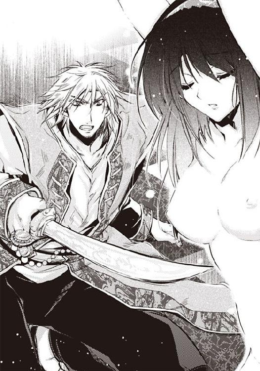
刃がぎらりと輝く。
全身にみなぎる殺気は、たとえイネスだろうと容赦はしないと告げていた。
「刀の錆になりたくなかったら、部屋を出て行け」
ジェラールは大声をあげたりはしなかった。静かな、だが、断固とした口調で話す。抑えた口調は、それだけに迫力があった。
イネスたちは目配せをかわし、おじぎをして部屋を出ていった。
ジェラールが縄を切った。支えてくれるものを失い、へたりこみそうになったトゥリーンを、ジェラールが抱きしめた。
「いま、縄を切ってやる」
胸の上下をいましめていた縄が、ぶつぶつと切られていく。
恐怖や不安までも切り離されていく気分だった。
火照った肌に、彼が着ている砂よけのマントがさらさら触れる。
「大丈夫か。トゥリーン」
「平気、です」
「何をされた？」
「薬を、塗られました。媚薬だそうです」
「ほんとうに大丈夫か。痒くなって男が欲しくなる薬だろう？」
彼があまりに心配そうに見つめてくるので、トゥリーンは弱々しく笑った。
「お仕事が、あるのでしょう？」
「仕事よりもおまえが大事だ」
「皇族の責務は果たさなくては......」
「おまえのためなら、身分なんて捨ててやるっ！」
身体のどこかがぐらりと揺れた。
それは独特の浮遊感となって、トゥリーンを酔わせた。
体重が無くなり、空に浮かんでいる気分だった。
ジェラールはマントを脱ぎ、裸身のトゥリーンに巻きつけた。
肌に触れるさらさらした感触が心地よい。
膝の裏側と背中に手を回し、抱きあげたままで中庭に出る。
西域の厳しい日差しに目がくらんだ。
「聞け。後宮の女ども」
ジェラールが叫んだ。
両開きの扉を開ける音がいっせいに響き、美しく化粧し、着飾った女たちがベランダへ出てきた。上階の女たちは手すりから身を乗りだし、一階の女たちは部屋の前に立ってトゥリーンを見つめている。まるで花が咲いたように鮮やかだ。
後宮の女たちの部屋は、中庭に面するように建っているから、妖艶そのものの女たちに見下ろされる形になる。
「俺はトゥリーンを愛している」
女たちの驚きと羨望の視線を一身に受けて、トゥリーンは恍惚を感じていた。空に浮かぶ気分になる。おだやかな安心できる心地よさだ。
女たちが息を呑む気配がわかった。美しい顔だちを絶望に歪め、嗚咽している女もいる。
ジェラールに愛されるためだけに存在している女たちは、存在を否定された気分になるのだろう。
「トゥリーンを傷つけるものがあれば、俺が切り捨てる。トゥリーンは俺だと思え！ トゥリーンの命令は俺の命令だ。わかったな」
皇太子殿下の声は後宮中に響き渡った。
感心の空気が渡っていく。
ジェラールがきっぱりと言ったことにより、嫉妬より、憧れが上回ってしまったのだ。
拍手が響いた。
はじめ遠慮がちだったそれは、やがて万雷の拍手となって、トゥリーンを包んだ。拍手はやわらかく温かく降り注ぎ、二人を賛美する。
トゥリーンは甘い陶酔のただなかにいた。空に浮かんでいる気分だった。
私は確かにジェラールに愛されている。
縛られていたせいで動きにくい腕を伸ばして、彼の首に腕を絡めた。
滑り落ちそうになったマントを、ジェラールが直してくれた。
殿下の胸に頬をすりよせてなつく。
「幸せです。ジェラール様。ありがとうございます。このまま死んでしまいたいぐらい」
「ばか者。死ぬことなど許さぬ」
「ふふっ。死にません。あなたと一緒に、未来を歩んでいきたいから」
「だから早く孕めと言っているんだ。孕んでしまえば後宮から出て、一緒に暮らすことができるのに」
一緒に暮らせる。ジェラールと二人で。まるで結婚しているかのように。夢のようだ。そうなればどんなにいいか。
幸せな想像でぼんやりしているトゥリーンは、ささやく声を聞いてはっとした。
「ジェラール様がそんなにも愛するなんて。トゥリーンさんって、すてきな方なんでしょうね」
「いいわねぇ。トゥリーンさんがうらやましいわ」
占領した国で姫をひとり略奪して帰るが、一度抱いたらそれっきりというジェラールが、ひとりの女に執着したことに、みなが驚いている。
トゥリーンを抱いたジェラールが、部屋に戻ってしまっても、拍手はえんえんと続いていた。
☆
部屋に戻ると、ひんやりした空気がトゥリーンを包んだ。
明るいところから暗いところに入ったので、視界が利かない。なのに、彼の心配そうな表情ははっきり見える。
ジェラールはトゥリーンをそっと下ろし、ベッドに座らせてくれた。
「ありがとうございます。ジェラール様」
トゥリーンは肩に掛けられているマントをかき寄せ、胸のふくらみと股間を隠した。
彼がトゥリーンの肩を両手で持ち、視線を合わせて話しかける。
「悪かった。もっと早くこうするべきだったんだ。かわいそうに」
トゥリーンは恥じらって顔を伏せた。股間に媚薬を塗られている。いまはまだなんともないが、じきに薬が効き出すことだろう。乱れる自分を見られたくない。
起きないで。お願い。トゥリーンは、感覚が起き出さないようにと、自分に向かって言い聞かせた。
ジェラールの指が股間へと伸びてきた。
「いや......」
自分でもあきれるほど甘い声が出た。甘えているような口調だ。
「どうして？」
「恥ずかしくて......」
「俺はおまえのそういう清純なところが好きなんだ。......抱いてあげよう」
「はい」
指が繊細なところを探り、敏感な肉の芽をつんと押した。
その瞬間、まるで大波が押し寄せてきたかのように、熱い疼きが身体の芯からわき起こる。
「はぁ......っ」
トゥリーンは、喉をのけぞらして、欲望に耐えた。
揺らさなければあふれない。
好きな気持ちを揺らさずに、そうっと持ちこたえていれば、彼を求める気持ちはこぼれずにすむ。
花芯は熱く濡れて、甘い愛撫を欲していたが、トゥリーンはそっと彼の手をふりほどいた。
横に座った彼がトゥリーンの肩を抱き、頬にそっとキスをした。
「あ......っ」
無精髭のざらざらが、うなじに触れた瞬間、胸の奥がきゅんと疼いた。媚薬を塗られたところに、小さな泡がはじけるような感触が、ぷくんぷくんと生まれている。
「んっ......はっ......ぁっ」
顎をこすりつけられるだけで息が弾み、胸の奥が熱く疼く。
身体がジェラールを求めている。いいや違う。心が彼を求めている。
ジェラールがトゥリーンを押し倒した。
「かわいそうに。縄のあとがついている」
視線を下げると、乳房の上部に、縄目がアザになって残っていた。白い乳房の上で、赤いアザがやたらと目立つ。
痛々しい様子を見たくなくて、トゥリーンは、手で乳房を隠そうとした。だが、その手がそっと払いのけられ、彼が顔を伏せてきた。
乳首を舌先でれろっと舐められ、思わず声を漏らしてしまう。
「あっ、......あっ」
もうだめだ。好きな気持ちがあふれてしまった。だから揺らしたくなかったのだ。彼を求めて身体の芯が熱く疼く。トゥリーンはベッドに投げ出していた腕を彼の頭に巻きつけた。
「い、いや、恥ずかしい......っ」
乳首を舐め回す舌の感触は、熱くて柔らかくて、とろけるほどに気持ちが良かった。
「はっ、はっ......あ、あぁ......ジェラール様」
「痛くないか？ 大丈夫か？」
「はい......気持ちが......いいです......」
大きな手が、反対側を揉みしだく。
人差し指と中指のつけ根で乳首を挟みながら、縄に締めあげられて白っぽくなっていた乳房を揉む。感触が戻ってきて、いつもの十倍感じてしまう。
「あっ、ぁっ......」
トゥリーンは楽器のように声をあげた。彼の指先ひとつでどんな音でも鳴る楽器。
肌は恐ろしく感じやすくなっていて、ジェラールの触れるところ全てが熱くなる。
とくにたまらないのが乳首をちゅっと吸われるときだ。
「あっ......はっ......はぁっ」
「愛してる」
──私も好き。愛してるわ。ジェラール様。
無精髭が胸のふくらみをせつなくこすり、舌先が敏感な乳首を弾く。乳首を吸われるときは、心の奥に秘めた気持ちさえも、吸い出されてしまいそうになる。
トゥリーンは、彼の腕の下でくなくなと悶えた。裸の身体に、ジェラールの装束がさらさらと触れるひんやりした感触さえも心地よい。
腰をひねった瞬間、腰の奥が熱く火照った。薬を塗られたところがじゅくっと熱く疼き、じりじりしてたまらない。
「あ......あ、......あっ、あぁっ!! ......ひぃっ!!」
焼けつきそうな熱さに煩悶する。
内腿にひくっと痙攣が起こり、背筋を弓なりに突っ張らせる。
「どうした？ つらいのか？」
トゥリーンは恥じらいに顔を赤く染めながら首を振った。
「舐めてやろう」
「わ、悪くて......恥ずかしい......あぁ」
下肢が百二十度に大きく開かれる。
疼いてたまらないところにフッと息が吹きかけられた。
「あっ、ひ......っ。......くっ」
恥ずかしくてならず、おもわず下肢をばたつかせたところ、熱い舌先が下からすくい取るように舐めあげた。
ぬるっと熱い感触が、敏感なところを舐め回す。
「あっ、あぁーっ、......あっ」
媚薬に溶かされ、疼いてたまらないところだったから、やさしい刺激が襞々に沈みこみ、熱く溶けるような感触に悶えてしまう。
思わず足をばたつかせるが、彼の手が太腿をしっかりと押さえこみ、いっそう下肢を引きはだける。
恥ずかしいのに心地よくて。
いやなのに気持ちよくて。
苦しいのにいい気持ちで。
もう、何が何だかわからない。
ひくっと喉が鳴り、背筋がぶるぶるっと震えた。温かい電流が皮膚の下の神経組織を通り抜ける。
「あーっ、......あぁっ......」
目の裏で火花が散る。
あまりの心地よさに意識があいまいになってくる。
ふっと記憶が途切れた。
次の瞬間には、彼がおおいかぶさり、熱くて硬く大きなものが身体の中心に向かって進んでいた。
ジェラールの剛直は、熱くてやわらかく、それでいて硬い。
イネスの魂も凍えるような儀式とぜんぜん違う。
みっしりとあわさった襞を掻き分けながら侵入してくる彼の男根は、ありえないほどの快感をもたらした。
やがて、肉茎は、根本まで埋まって止まった。
「ぁあ......っ」
身体の奥が熱く、溶け合ってひとつになってしまいそうだ。幸福感に包まれる。もうこのまま眠ってしまいそうだ。
「うっ」
ジェラールが眉根を寄せ、ぶるっと身体を震わせた。
「どうかしたの？」
「おまえのが、よすぎて......」
ジェラールはそういうが、トゥリーンには何のことかわからない。
ただ、奥まで埋められて、ひとつになっている温かさに、酔いしれているだけだ。
「何のこと？」
「おまえのなかが、小刻みに動いて、俺のがよじれそうになるんだ」
しっかりと奥までつながりあって、お腹をいっぱいにされる感じは、けっしていやではなかったが、かっと顔が赤くなる。
「嘘よ。......私、力、入れてないのに」
「おまえは、特別だ」
「私は特別......」
トゥリーンは特別ではなかった。王女には違いないが、王位継承権もなく、嫁しては四人の妻のひとりとして、夫の愛情を等分に分け合う存在になるはずだった。
なのに、略奪されて無理矢理に連れてこられた西域で、自分を特別だと言う男性に出会った。
運命の不思議に驚かずにはいられない。
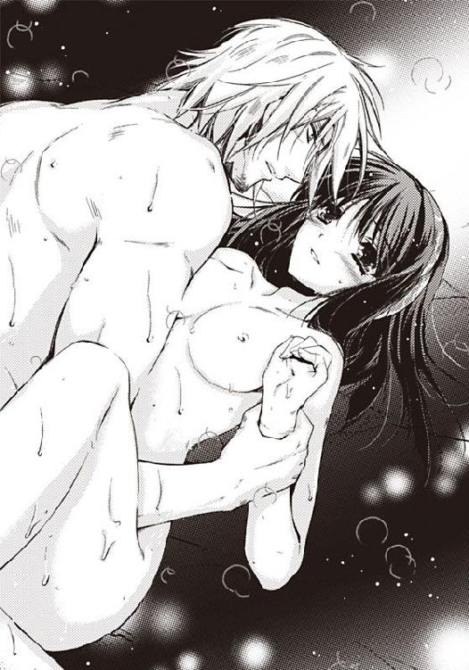
「ああ、おまえは特別だ。身体の良さも、かわいさも、矜持の高さも特別だ。はじめて逢ったときに一目惚れした。怯えて震えているくせに、負けるものかとばかりに睨んでくる。俺の指に噛みついてきた女はおまえだけだ。女なんて一度抱いてしまえば、言うことを聞くと思っていたのに、おまえは俺に抵抗してばかりいた」
「私はあなたが嫌いで、憎くて......なのに、だんだん嫌いじゃなくなって......。今は、大好きになりました......」
「そうか。それはよかった」
彼は少年のように笑うと、トゥリーンの肩を押さえ、腰をゆっくりと動かした。
身体の中がかき混ぜられる感じがする。
最奥を押されるときのずうんと沈むような戦慄と、秘芽がジェラールの下腹部で圧迫されるときの、静電気にも似たヒリッと来るような快感が同時に襲う。
媚薬のせいか、くっつきあっているところから、痺れるような快感が伝わってくる。
「あっ......あぁっ......んっ......」
彼の手が胸に伸びた。乳房を触られることを覚悟して目を閉じたところ、指がふくらみの上をなぞった。
「どうしたの？」
「縄のあとがついていて、かわいそうだったから」
「でも、平気です......。あなたに助けてもらえたから」
温かい大きな手がふくらみをきゅっと握った。
指のつけ根で乳首を挟まれ、パンを捏ねるように揉みしだかれる。たまらなかった。行為そのものは同じなのに、いままでにも増して感じやすくなっていて、彼が腰を動かすたびに、好きがいっぱいに身体に満ちる。
なるほどイネスの儀式は、トゥリーンの身体を感じやすく変えるためのレッスンなのだと実感する。
「うっ」
ジェラールがうめいた。
「私の身体、変わりましたか？」
「ああ、変わった。ずっとよくなった。......まあ、おまえは、はじめてのときから、よかったが......。くっ」
彼が腰を激しく動かしはじめた。
ゆっくりなときなら大丈夫なのだが、激しく動かれ、奥を強く突かれると、背筋に甘い戦慄が走り、息が止まりそうになってしまう。
「あっ」
目の前が銀色に曇っていく。
彼の顔を見ていたいのに、視界が利かずに不安になる。
トゥリーンはベッドに投げ出していた腕をジェラールの背中に回した。
「あっ、あぁっ」
体位が変わったことにより、よりいっそう奥が突かれ、敏感さが増した秘芽が圧迫される。
甘いお菓子が、苦く感じられるのにも似て、快感が過ぎると苦しくなる。なのに、密着感がそうさせるのか、ほとんど苦痛を感じない。
ただひたすら、甘い満足感だけが満ちていく。
動きが次第に速くなってきた。ゆさゆさと揺すりあげられ、視界が滲む。
そろそろフィニッシュらしい。何度か身体を合わせたせいで、彼の変化がわかるようになってきた。
「うっ」
ジェラールがうめき声をあげて動きを止めた。
お腹の奥で、彼の剛直がうごめき、熱い液体がはじける気配がしている。
最奥で爆ぜる熱い何かが、身体と心に甘くやさしく染みていく。
彼が、トゥリーンのおでこにキスをして、身体を離した。
だが、立ちあがるのもおっくうで彼の腕枕で身体を寄せて甘えていた。
「王宮に行かなくていいんですか？」
「今日はやすむ。おまえと一緒にいるほうがいい」
「私、もう、眠くて......疲れました。こうしてあなたとくっついていたい」
ジェラールがふいに立ちあがった。
裸身にマントを巻きつけただけの格好で、扉をからりと開ける。
「きゃーっ」
「すみませんっ」
女たちが蜘蛛の子を散らすように逃げていく。
下女や侍女だけではなく、部屋持ちの女たちもいるようだ。
「もしかして、ずっと、聞かれていたの？」
トゥリーンは顔を赤くして恥じらった。
「おまえがうらやましいんだよ」
「そんな......私なんか......」
そうだった。ここでは価値観が違うのだ。
後宮の女、とくに部屋持ちの女は、みんな同じという建前ではあるものの、現実には順位がある。正妃を頂点にして、出自で階段状に分かれている。王族出身であれば順位が高く、下女あがりであれば順位が低い。
だが、ジェラールに愛されると、順位など飛び越えてしまう。
「だったら私、もう、イネスにいじめられないのですか？ 女たちからいじわるを言われることも？」
「大丈夫だ。俺がおまえを守ってやる」
「私の侍女の、ギゼムが死んだそうです。お見舞い金を贈らないと......」
「おまえの使用人なら生きてるぞ」
「えっ？」
「見ていた女がいた。ギゼムは朝、下女の控え室で、わざとらしく菓子を食べたあと、目立たないように自分から何かを飲んだそうだ。薬を飲んだようにも見えたとその女は言っていた。痙攣を起こして倒れ、死にかけているように見えたので、イネスが下女に命じて担架で後宮から運び出した」
「医師も呼ばず、治療もせずに、瀕死の女を放り出したのですかっ？」
「流行り病かもしれないからな。イネスは女たちが病気になることを、なによりも嫌うんだよ」
わかる気がした。後宮は貴種を守るところ。集団生活だから流行り病はあっという間に蔓延する。
イネスのやったことは冷酷に思えるが、貴種を孕んだ女が病気になったりしたら最後だから、当然の行動とも言えるだろう。
「おまえの使用人は、担架で運び出されたあと、兵士の目の届かないところにつくなり、すぐに起きあがり、自分の足で歩いて行ったそうだ」
見ていた女とは誰だろうとふと思ったが、ロクムのせいで死んだのではないと聞いて安堵する。
「死んだふりをして後宮から脱走したということですか」
「ああ」
ギゼムは後宮暮らしを楽しんでいた。
あのちゃっかりした少女が、薬を飲んで脱走を図るほど、追いつめられていたようには思えない。
誰かに命じられてそうしたのだろうか。ギゼムに命じた人は誰だろう。
「よかった。ギゼムは生きていたのね。ジェラール様は、なんで、私がこうされてるってわかったの？」
「ハティムーンの奴隷が、俺のところに来たんだよ。おまえの侍女が担架の上から起きあがったのも見ていたそうだ。おまえが砂漠越えのとき、水をあげた女だよ」
「アイーシャね......。でも、どうして？ 後宮は自由に出入りできない、って聞いたのに」
「年輩の下女はそうでもないらしい。手がつかないからだろう。書簡の配達を頼まれることが多かったそうで、俺の家も知っていた」
「ジェラール様のお屋敷に行ったの？ なんて危険なことを。ジェラール様の家の門番に斬り殺されていたかもしれないのに」
「忘れものがあって、たまたま俺が戻ってきていた。運が良かった」
「彼女はどうしているの？」
「後宮に戻ってる。おまえが心配なのだそうだ」
「だったら私、彼女を侍女にしていいのでしょうか？」
「好きにしろ」
「よかった......」
それにしても......。
私をワナにかけた人は誰だろう？ 私がハティムーンの王女だと知っているのは正妃だけ。しかも、ギゼムは正妃が世話してくれた侍女。
ファティーマは嫉妬をしているのか。私がジェラール様に愛されたから？ だが、ファティーマのやさしげな笑顔の下に、どす黒い感情が渦巻いているなんて、考えたくもない。
「ギゼムはどうするのですか？」
「どうもしない。ギゼムはファティーマが探してきた侍女だから」
ジェラールも、トゥリーンと同じことを考えているらしい。
「あの」
「なんだ？」
「いえ、何でもありません」
ファティーマはティムスの貴族の姫で、ジェラールの正妃だ。ファティーマが後宮の女に嫉妬してワナに嵌めたなど、あってはならない。
あいまいにしておくほうがいいのだ。
「そうだ。その通りだ。何でもないんだ」
「はいっ」
この選択が、あとで二人を危険にさらすことになるのだが、それはまだ予想だにできないことだった。
第五章 陰謀に巻き込まれて
「もうしわけありませんが、トゥリーン姫様からのお達しで、贈り物は遠慮させて頂いております」
「アルマナのウルスラが直接やってきたのよ。私は第一王女よ。光栄に思いなさいな」
「ありがとうございます。お気持ちだけありがたく頂いておきます。トゥリーン姫様もウルスラ姫様のご親切、喜んでいらっしゃることと思います。どうかこのままお持ち帰りくださいませ」
「カスルのサマーヤ王女が、ハティムーンのトゥリーン姫に、じきじきに贈り物をあげるのよ。感謝なさい」
「ティムスの貴族、重臣の......の娘の......がハティムーンの姫に贈り物を......」
扉のところで、侍女のアイーシャが押し問答をしている。
後宮で部屋を持つ女はみなお姫様で、身分の差はない。ジェラールが長で、女たちはみな出自に関係なく、お姫様と呼ばれ、同じように扱われる。表向きはそういうことになっている。
なのに知らない国の知らない名前を名乗り、私は姫だ王女だ感謝しろ光栄に思えと、瓔珞や腕輪をプレゼントしようとする女がひきもきらずやってくる。
トゥリーンはうんざりしていた。
「もう、断っても断っても、やってくるんだから」
トゥリーンは茶を飲みながらひとりごちた。
贈り物攻勢は、ジェラールが「トゥリーンは俺のものだ」と叫んだあの翌日からはじまった。
あの一件で、トゥリーンはジェラールのお気に入りだと知れ渡ってしまった。
それだけではなく、トゥリーンが下女ではなく王女であったこともいつの間にか周知の事実になっていて、あれからもう一ヶ月以上経つのに、トゥリーンに取り入ろうとする女たちはあとをたたない。
後宮でいちばんの権力者にはご機嫌を伺っておこうと考えるのだろう。お茶会のお誘いに贈り物。友達のようなふりをして、侍女のアイーシャを騙し、部屋に入ってきた女もいた。
砂漠の出身でもないのに、トゥリーンと同じ服を着ている女も散見される。
辺境からやってきた下女上がり、ジェラール様のお手がついたのは気まぐれにすぎない、愛されるのは一回きり。すぐに飽きられるに決まっていると、陰口をたたかれていたのに、手のひらを返したような周囲の変化に、居心地悪さを覚えてしまう。
アイーシャが戻ってきた。
押しの強いお姫様たちの相手をするのは大変らしく、ふーっとため息をついている。
「お疲れさま、アイーシャ。一緒にお茶を飲みましょう」
「ありがとうございます。私も喉が渇きました。厨房でお菓子を貰ってきましょうか？」
「ロクムはいらないわ」
トゥリーンは眉根を寄せ、小首を傾げた。
ギゼムは今どこにいて、どうしているのだろう。後宮を出て、元気に生きているのだろうか。
あれから何度かファティーマに出会った。廊下ですれ違うとき、挨拶を交わす程度だが、正妃はギゼムのことなど知らないふりをしていたし、トゥリーンもあえて聞いたりはしなかった。正妃はいつもおだやかに笑っていて、慈愛に満ちた笑顔の下で卑劣なワナを張り巡らせているようには思えない。
「姫様？ お加減でも？」
「大丈夫よ。眠いっていうか、だるいだけ」
「最近、おつらそうにされておられます」
「つらいというほどのことはないのよ。それにしても、侍女がアイーシャでよかったわ。ギゼムだったら、プレゼントを勝手に受け取って、自分のものにしていたと思うから」
アイーシャは、否定も肯定もせずおだやかに笑いながら、二人分のお茶を淹れ、テーブルに置いた。
「いい香りのお茶ね」
「あら、どうかされましたか。いつもと一緒ですよ。おいやなら、別の茶葉に替えてまいります」
「いいえ、大丈夫よ。最近、香りに敏感になってしまって」
オアシスの国ハティムーンで生まれ育ち、一緒に砂漠を越え、西域の国ティムスで生きている二人の女は、黙ってお茶を飲んだ。
「トゥリーン姫様は、我が母国、ハティムーンのお姫様だったのですね」
アイーシャがぽつりと言った。
「そうよ。何でみんな知っているのかしらね」
「女は噂が好きな生き物でございます」
トゥリーンは、ジェラールと睦み合っているとき、本名を名乗ったことが何度かある。そのとき、誰かに聞かれていたのかもしれない。
トゥリーンは知らなかったのだが、ジェラールが訪問する部屋の前には、女たちが立ち聞きをしにやってくる。それはもう後宮の伝統になっていて、その人数は、十人や二十人ではすまないらしい。
「私は、我が祖国ハティムーンのお姫様に、お水を頂いたわけですね。もったいのうございます。私はしょせん庶民ですが、お姫様におかれましては王宮で幸せにお暮らしになられていたはずなのに、流転の運命、おいたわしゅう存じます」
「あら、やめてよ。今の私は、ただの後宮の女です。姫には王位継承権はないし、どうせどこかに嫁ぐはずだったの。四人の妃のひとりとして、夫の訪れを待つ生活が待っていたの。私の運命は同じよ」
「ですが、王様は......、ハティムーンはあのような......。お悔しいことでございましょう」
「ハティムーンは滅びなかったのよ。お父さまはお亡くなりになったけど、お兄さまが王権を神授して、国をおさめているんですって。神様は強い王に王権をくださる。お父さまは戦って負け、命と王権を失った。お父さまは本望だったはず。娘の私も恨みはないわ」
「お姫様はお強くていらっしゃいます」
「あら、それでいうなら、アイーシャも強いわ。だって、私の危機を、知らせに走ってくれたのだもの。脱走と思われて、斬り殺されていたかもしれないのに」
アイーシャは穏やかな笑みを浮かべた。
侍女の笑顔は母に似てやさしい。
「姫様はこれからどうされるのですか？」
「どうもしないわ。これが私の運命だもの。そうね。ジェラール様を支えて生きていきたいわ。あの方ね、おひとりなの。お母様も亡くなられて、お兄さまとそりが合わないそうなのよ。くつろげる時間と空間を用意してお待ちしたい。ジェラール様が私と逢うことで、楽しい思いをされるならうれしいわ」
「お兄さま......現皇帝アルスマーン様ですね。お身体がお弱くて、お子様はご無理と聞いております。枕をあげることもできず、今はもうずっと寝たきりで、ベッドの中で政務を執っていらっしゃるとか。ご病気ですから仕方のないこととはいえ、神経質なおかたで、無茶な政策を押しつけておしまいになったり、激昂されることも多いとか」
「......そうだったの!? そんなこと、少しも知らなかったわ」
西域の国ティムスは、爆発的に領土を広げる好戦的な国。サソリを紋章にし、邪教を信じ、殺戮を楽しむ蛮族。それが母国にいたときの知識だった。
無謀ともいえる遠征に、ジェラールが休みなく駆り出されているのは、兄王の政策によるものだろうか。
兄王が、ジェラールに危険な任務を押しつける気持ちは、わからないでもない。病の床につく兄は、健康な弟に嫉妬しているのだ。
「下女は掃除や下働きでたくさんの部屋を回るので、聞く気がなくても噂話が耳に入ってしまうのです」
後宮の中でトゥリーンは、はみ出た存在だった。
いじめられはしなかったものの、しょせん下女あがりの下品な女と唾棄されて、女たちのコミュニティに入れなかった。
トゥリーンが知らなくても仕方がない。
「イネス様がジェラール様の貴種を守ろうと必死になっているのは、現皇帝にお子さまが望めないせいでございましょう」
「でも、ジェラール様は女好きだって聞いたわ。そりゃ、今は、私以外、誰にも手を出さないとおっしゃっているけど、この後宮には、百人以上も部屋持ちの女がいるのよ。お子さまがいらっしゃる方も多いんじゃなくて？」
「それが......。妊娠された方は何人かいらっしゃったものの、お亡くなりになったり、流産されたり。気が触れておしまいになったり。お子さまはいまはひとりも......」
アイーシャは周囲を見回してから、小声で言った。
「お世継ぎは、まだいらっしゃらないということ......？」
「その通りです」
「お気の毒だわ......」
トゥリーンは、ぶるっと身体を震わせた。
後宮の闇は深く、少しでも気を許すと足を掬われる。どこから魔の手が伸びてくるかわからない。
今もジェラールは、遠征に向かっている。砂漠の中央、仏教国で有名な米蘭の国攻めだ。
ジェラールの安全を祈ることはもちろんだが、トゥリーンは彼の留守の間、自分の身を自分で守らなくてはならない。
「トゥリーン姫様、どうかお気をおつけくださいませ。私も、姫様をお守りしたいと思っております。夜ごと姫様のお部屋で眠る無礼を、どうかお許しくださいませ」
「ありがとう、アイーシャ。心を許せる同郷のあなたが私の侍女になってくれたこと、感謝しております」
「もったいのうございます、お姫様」
そのとき、ドアの外で声が響いた。
「入ってもよろしくて？」
「お待ちください」
アイーシャが席を立ち、応対に向かった。
──この声。もしかして......。
「これをトゥリーンさんにさしあげて欲しいの。いま、つぼみが開いたところなの。綺麗に咲いたでしょ？ サラソウジュは半日ほどで花が落ちてしまうから、あわてて持ってきたのよ」
ジャスミンにも似た芳香が、戸口から香ってきた。
「ファティーマ様」
トゥリーンはあわてて席を立ち、正妃を迎え入れた。侍女のコレールが影のようにつき従っている。
ファティーマは、花を両手に抱いていた。
手のひらほどの大きさの白い花をつけた見事なサラソウジュだ。
サラソウジュの枝を抱き、やさしげに笑っている正妃は、花を欺くほどに美しい。
「わあすてき。ありがとうございます。ファティーマ様。喜んで頂きます」
トゥリーンはサラソウジュの花束を受け取った。
アイーシャが驚きの表情でこちらを見た。
贈り物はすべて断れと言っているのでびっくりしているのだろう。
正妃の親切を断ることなどできない。まして花には罪がない。
──ギゼムに薬を飲むように命じたのはファティーマ様ですか？
──私がハティムーンの出身だってこと、みんなに教えたのはファティーマ様ですか？
口に出してはいけないことだと知っていながら、直接聞いてみたくてうずうずする。
まるで、膝小僧のケガのあとを気にする子どものように、むずむずして落ち着かない。ひどい結果になると分かり切っているのに、かさぶたをはがしたくてたまらない。
「花瓶をお願い」
「はい」
アイーシャが大きな花瓶を抱えて中庭に出て、噴水から水を汲んでいる。ファティーマは満面の笑みで話しかけた。
「あら、お茶、飲んでいらっしゃったの。トゥリーンさんはお茶会の誘いを断るってみんな言っているから、お茶がお嫌いなのかと思ったわ」
「いいえ。お茶は好きですが、美しいみなさんと一緒にいると、引け目を感じてしまうのです」
トゥリーンは正妃のぶんのお茶を淹れながら、控えめに笑った。
お茶会なんて肩が凝る。毒を盛られるかもしれず、気が抜けない。それに、女たちのお茶会は、噂話にはじまって悪口で終わるだけ。居心地のよい場所ではなかった。パピルスを読んでいるほうがずっと楽しい。
「あら、そんな遠慮、なさらなくていいのに。トゥリーンさんは王女だし、ジェラールのお気に入りなのに。ご存じかしら。トゥリーンさんと同じ服を着るの、みんなのあいだに流行っているの。後宮にはトゥリーンさんがいっぱいいるわよ」
正妃の口調には見事なほどに毒がない。
金糸銀糸の縫い取りが光る豪華なアバヤを着て、髪を軽く結いあげ、真珠の瓔珞をつけ、ラピスラズリと珊瑚の腕輪で装い、あでやかに笑っている。
正妃ファティーマは、光り輝くように美しい。体調が変化してからアクセサリーが重く感じて嫌いになったトゥリーンとは違う。
華やかに装い、明るく笑っている正妃を見ていると、ギゼムの件は自分の被害妄想にすぎないのではないかとさえ思えてくる。
「みんなはトゥリーンさんに憧れているの。もっと堂々としていなさいよ。トゥリーンさんはみんなの目標なの。私たちはどのみち後宮に縛られている身なのだから、楽しまなくてはソンよ」
「そうですね。でも、私、体調がよくなくて」
言い訳ではない。寝ても寝ても眠く、だるくて気力が湧かない。
この数日、パピルスを読むこともせず、ぼうっと中庭を見ながら日がな一日過ごしている。
侍女のアイーシャが、重い花瓶に水を入れ、ふうふう言いながら戻ってきた。テーブルにそっと置く。トゥリーンはアイーシャに花を渡した。
「わかるわ。ジェラールが来ないのよね。不安になって当然よ。だって私も同じだもの」
ファティーマが、生けようとしたアイーシャの手を制し、満開の白い花を大きな花瓶に生けていく。
「このサラソウジュと同じよ。こんなに美しく咲いていても、半日でしぼんで花が落ちてしまうのよ。人間ってはかないわよね」
ファティーマの真意がわからない。ジェラールは戦っている最中なのに、なぜ不吉なことを言うのだろう。不幸を呼び寄せてしまいそうだ。
「ジェラール様は、戦争から、生きてお帰りになります。ジェラール様は神様のご加護を頂いているのですから、米蘭の国攻めだって大丈夫です」
ファティーマはビクッと身体を震わせた。
「え？ く......国攻め？ 戦争？ 米蘭って、砂漠の真ん中の、遠い国じゃないの......」
ファティーマは知らなかったらしい。ジェラールからも、皇帝の重臣であるという父からも聞いていなかったようだ。
女の地位は低いし、父は娘に政策について教えたりしないものだから、驚くようなことではない。
衝撃音がした。
正妃の肘がお茶のカップに当たり、テーブルの下に落ちたのだ。
「あぶのうございます。お姫様、私がしますので」
アイーシャがあわてて床に這いつくばり、割れた陶器を拾い集めていく。
「あら、ごめんなさい。......は、早く生けてしまわないと、お花がしおれてしまうわ」
花を生けるファティーマの手はぶるぶると震えていて、サラソウジュの大きな花がぽろんと落ちた。
ジャスミンにも似た花の香りがせつなく香り、ふいに息苦しさが増した。
「うっ」
いい香りのはずなのに、なぜか腐臭を感じ、嘔吐感がこみあげた。あわてて飲みかけのお茶を飲むが、むかむかが治まらない。震える手で中庭に通じるドアを開け、まろび出る。ナツメヤシの木の下に激しく吐いてしまった。
「まあっ。トゥリーン姫様っ。おめでたですか!?」
アイーシャが飛び跳ねるようにして言った。
「まさかそんな......」
「ですが、あれから月の訪れはありませんよね？」
「そ、そうだったかしら......？」
同性とはいえ、プライベートなことを口にされる恥ずかしさに言葉を濁す。
「私たち侍女は、お姫様の月について、イネス様に報告する義務があるので、気にしているのです。イネス様におめでたかもしれないと知らせてきます」
アイーシャが弾むような足取りで駆けていく。
トゥリーンはお腹を抱いて小首をかしげた。
この中に赤ん坊がいるかもしれないなんて、信じられない。
トゥリーンは洗面所で口をすすいでから、お茶を飲んだ。
ファティーマが笑顔を浮かべようとして失敗したといった表情で言った。
「おめでたですって？ おめでとう」
「きっと間違いです」
うれしさよりも困惑が先に立つ。ジェラールは今、遠い国で命のやりとりをしているのに、トゥリーンの身体に小さな命が宿ったなんて、妙な胸騒ぎを覚えてしまう。サラソウジュの花が目の前で揺れているからだろうか。
大きな花弁が見事な美しい花だが、命のはかなさを感じて寂寥感にかられてしまう。
「お祝いをしなきゃいけないわね。何がいいかしら？ ジェラールの子どもなんて楽しみね」
「間違いかもしれないので、秘密にしてください。お願いします」
「よくてよ。じゃあね」
ファティーマはどこかおぼつかない足取りで、部屋を出ていった。コレールが影のようにつき従う。大柄なのに印象が乏しいのは、表情が動かないせいだろうか。
☆
それからあとの騒ぎは、まるでお祭りのようだった。
アイーシャと一緒にイネスが来て、満面の笑顔でイネスフィア様のご加護を祈った。
耳聡い女たちが、お祝いを持ってやってきて、アイーシャが断るのに苦労した。
祝膳ということで、ピーマンに米と挽肉を詰めたドルマに、肉団子を小麦粉の皮で包んだマントウと肉料理づくしになった。食欲がないトゥリーンは、そのほとんどを残してしまった。
さらに、アイーシャだけではなく、若いイネスまでも隅の寝椅子で寝るようになった。部屋は充分に広いのだが、監視されているようで、どことなく息苦しい。
だが、二度の儀式で恐怖を覚えていたイネスが、トゥリーンを文字通りのお姫様扱いするのは、少しだけいい気分だった。
ジェラールの訪れがあったのはそんなときだった。
☆
「よくやった。トゥリーン。えらいぞっ」
ジェラールはトゥリーンを抱きしめ、抱きあげてから頬ずりした。
アイーシャが目を伏せてそっと席を外し、イネスも廊下に出ていく。
女たち三人の部屋に、ジェラールの存在感が満ちて、ほんのりと温かく、息苦しさを追いやっていく。
トゥリーンはくすくすと笑った。
「ふふっ。ジェラール様。お髭が痛いです」
「すまない。うれしくて」
ジェラールは、サソリの紋様の革鎧に砂よけのマントを着た戦装束のままだ。髭もあたっていないようで、顎の無精髭がざりざりする。
「王宮に報告に行きましたか？」
「行った」
「そんな格好で？ ウソをついちゃダメですよ」
ジェラールのほうが五つほど年上なのだが、年下の少年をいさめる口調になってしまう。
「兄上のお加減が悪くなり、陣を構えている最中に呼び戻されたのだ。潔斎して正装に着替えてから王宮に行くのは不自然だろう？」
「だったらなおさら、お兄さまについていてさしあげなくては。女の部屋に来るヒマはないはずです」
「俺の子を孕んだ妻の顔を見に来ては悪いのか」
ジェラールは拗ねたような口振りで言った。
「妻って？ 私のことですかっ!?」
「当然だろう？」
「私は四人の妻のひとりですよね？」
「そういうことになっているが、俺は四人の妻を等分に愛する自信がない。俺にはトゥリーンだけでいい。そのかわり、おまえを四人分愛してやるからな。覚悟しろ」
言葉が甘く溶けていく。トゥリーンはジェラールに抱きついた。腕に力をこめ、おでこをすりすりしてなついた。
「どうした？」
「うれしいのです」
「俺もうれしい。おまえは、我が国の希望だ。おまえの子は、次のティムスの皇帝になる」
「女かもしれませんのに」
「あはは。そうだな。でも、男の子が産まれる。そんな気がするんだ」
「ファティーマ様は......？」
「正妃は正妃だ。ファティーマの父親、アブドゥラフマンは、ただの臣下ではなく、兄者の右腕なんだ。アブドゥラフマンは、ご病気のせいで神経質なところのある兄者をよく支えてくれている。ファティーマとのあいだに子どもができたらよかったんだが......。兄者には子どもは無理だから......」
ジェラールは言葉を濁した。
彼が正妃を抱いている様子を想像し、胸の奥が痛くなったが、頭を振って振り払う。
「私は第二夫人、ということですよね？」
「ああ、だが、妻として屋敷に迎え入れるのは、子を生した女だけだから、実質、おまえが俺のただひとりの妻だ。赤ん坊がおまえのお腹の中で順調に育っていることが確認され、イネスの許しがでれば、正式に屋敷に迎えることができる」
「ファティーマ様やお兄さまに悪いです」
「おまえらしいな」
「もしもここを出て、ジェラール様の屋敷で暮らせるなら、私、料理を作りたいわ」
「後宮暮らしは退屈だったか？ 外に出られないものな」
「パピルスを読んでいたから、退屈ではなかったわ。だけど......」
王宮の奥深くに住み、外に出ることのめったにないお姫様暮らしだったので、出歩けないことに不満はない。
だが、女たちの悪口と噂話、気を抜けない後宮生活、戦いに赴くジェラールの心配、毒殺の恐怖。
神経をとがらせる毎日だった。
それもあと数ヶ月で終わるのかと思うとほっとする。
「何だ？」
「いえ、何でもないの。あなたがそばにいてくれるから、それでいい」
「かわいいな。おまえは」
「ジェラール様は、今日はいつまでこちらにいられますか？」
「おまえを抱いて眠りたいところだが、今は大事なときなのでトゥリーンに手を出すなとイネスに釘を刺されているからな。いったん屋敷に戻って湯浴みをして、砂を落としてからもう一度やってくることにしよう。もっとも......」
ジェラールは小さな声でつけ加えた。
「兄上に異状が起こらなければ......だが......」
ティムスの王の容態は、そんなにも悪いのだ。陣を構えている最中に、軍隊長を呼び戻すほどだから、危篤状態なのだろう。
「愛しています。あなた」
「俺もだ」
二人はもう一度抱きあい、キスをした。
「行ってくる」
ジェラールは砂よけのマントを巻き直し、部屋を出て行った。
「行ってらっしゃい」
トゥリーンは廊下に出て、去っていくジェラールの背中を見送った。
女たちの嬌声が、愛しい男性の背中を追っていく。
☆
トゥリーンは、窓際の椅子に座り、月を見上げながら、ジェラールの訪れを待っていた。
砂漠の西端、西域に位置するティムスは、砂漠の国ハティムーンほどではないものの寒暖の差が激しく、夜は冷える。
トゥリーンはシルクベールを巻き直した。
「トゥリーン姫様、温かいお茶を淹れましたので、お身体を冷やさないようになさってください」
アイーシャがお茶を勧めてくれた。
「お姫様。お腹のお子さまにさわります。冷えてまいりましたので、どうか、お休みくださいませ」
イネスがはいつくばるようにして懇願した。
「アイーシャ、ありがとう。イネスさん、大丈夫よ。もう少しだけジェラールを待たせてね」
トゥリーンをいちばん大事にしてくれているアイーシャと、お腹の子をなにより大事に思うイネスでは主語が違う。
それがおかしくてほほえみながらお茶のカップを傾けていると、ファティーマが案内も請わずに部屋に入ってきた。
「失礼するわ。入らせてね」
ファティーマのあとをついて、コレールがおじぎをしてから入ってきて、壁際に控える。影のように存在感のない侍女だ。
イネスとアイーシャがびっくりして立ちあがる。
「トゥリーンさん。一大事なのっ。そのう、内密の話なのだけど」
ファティーマは、息せき切って言う。
トゥリーンは緊張した。
病気で死の床についていたティムスの王がみまかったのだろうか。
「こちらに来て。......あなたたちは遠慮しなさい」
ファティーマは、ついてこようとしたイネスとアイーシャを手で制した。
腕を引かれ、中庭の軒の下に出る。
さすがのイネスといえども、正妃の命令には刃向かえないようだ。イネスは戸口に立ち止まり、目を光らせている。
夜の庭は不気味だ。
昼の中庭は池の真ん中で吹きあげる噴水がきらきらと輝いて綺麗だが、夜の中庭は暗闇が色濃く落ちて、梢に風が渡る音と水音がやけに大きく響いている。
ファティーマが小さな声で言った。
「父から連絡が来たのだけど、......ジェラールが......そのう......」
「ジェラール様がどうかしたんですか？」
「ケガをしたそうなの。トゥリーンさんを呼んでるって」
意外な話に目を見張る。
「どうしてケガを？ 深いんですか？」
──信用できるの？ ファティーマ様を信用していいの？
月明かりに照らされた正妃の顔は青ざめているものの、裏表がなさそうに見える。
「それがわからないの。父から連絡が来たのだけど、私も信じられなくて。内密にお願い。私、今からジェラールに逢いに行きます。トゥリーンさんも一緒に来ない？」
「後宮を出ると殺されてしまいます」
「私の父はアブドゥラフマンよ。私の父が用意した駕籠に乗る限り、絶対に安全よ」
首筋がざわざわした。
アブドゥラフマンは、兄王の参謀。
ジェラールを嫌い、危険な遠征に赴かせる兄王アルスマーンは、危篤状態で、お加減はかなり悪い。
兄王には子どもがおらず、ジェラールの子どもは産まれる前に全て死んだ。
トゥリーンのお腹の子が無事に生まれたら、王位継承者になる。
「私はここに残ります」
「え？ トゥリーンさんは、ジェラールが心配じゃないの？」
「お腹の子にさわりそうなので駕籠は遠慮します。ジェラール様には神様のご加護があります。私はジェラール様を信頼しています」
中庭の暗がりの中でもわかるほど、ファティーマの表情がスッと翳った。
「そう、そうなの......信頼......そうね、愛されているのね。うらやましいわ......。私も、ジェラールに、もっと愛されたかった......そうしたら不安になることはなかったはずなのに」
ざわめきが聞こえてきた。部屋の向こう、廊下のほうから聞こえてくる。
中庭に居ると廊下の声は聞こえにくいが、この声は、ジェラールの来訪を告げるイネスの声ではないのか。
愛しい人の来訪に、どきどきと胸が弾む。
「ジェラール様がおこしになったみたいですね」
「ほんとう？ 私は、父から聞いたのだけど、誤報だったのね。よかったわ」
ファティーマは胸の前で両手をうち合わせ、そらぞらしいほど明るい声で言った。
正妃は、父親のアブドゥラフマンとまめに連絡を取っているのだろう。トゥリーンの妊娠も、当然、報告したに違いない。
アブドゥラフマンは嘘を正妃に伝えてトゥリーンを誘い出し、どうするつもりだったのか。ジェラールの子供を、将来の皇太子を、トゥリーンごと殺そうとしたのか。
死に瀕している皇帝陛下。その右腕のアブドゥラフマン。病がちな兄王は健康なジェラールを疎んじていた。
ジェラールの子供を妊娠した女達が次々に不幸なめに遭ったのは、兄王の差し金ではないかと思っていた。黒幕はアブドゥラフマンだったのか。
危険なのはトゥリーンだけではない。ジェラールも同じように危険だ。
トゥリーンは身体をひねり、背伸びをして部屋を見た。
廊下に通じるドアが開き、ジェラールが入ってきた。ランプの明かりと月明かりに照らされて彼の姿が浮かびあがって見える。
仰々しい正装でもなく、革鎧でもなく、ゆったりしたハーレムパンツにシャツを着て、裾丈の長いベストを羽織り、帯で留めた気楽な格好だ。剣が帯からさがっている。
存在感の大きさがそう思わせるのか、ランプの明かりに揺らめく部屋が、ぱっと明るくなった気がした。
「どうした？ トゥリーンはいないのか？」
「ジェラール様」
部屋に戻ろうとして踵を返したとき、ファティーマがトゥリーンに抱きついてきた。
トゥリーンはびっくりしてたたらを踏んだ。
重い物をぶつけたような音がして、チッという舌打ちの声と飛びすさる気配がした。
ひんやりした空気が漂う。これは殺気ではないのか。ハティムーンがティムスに落とされたとき、濃厚に立ちこめていた、抜き身のナイフのような冴え冴えとした気配。
「ファティーマ様？ どうかされましたか？ お加減でも？」
異常を感じ、正妃の背中に腕を回す。
手が生ぬるい液体で濡れた。
「え？」
血だった。
「きゃっ」
彼女の上半身を抱きしめたまま、重みに耐えきれず座りこんでしまったところ、ファティーマは、まるで糸の切れた人形のように、ずるずると崩れ落ちてきた。
彼女の背後に、血に濡れたナイフを握りしめたコレールが立っていた。
ファティーマの侍女。影のように静かで、話す声さえ聞いたことのない彼女が、動揺をあらわに女主人を見つめている。
「ファティーマ様、なぜ？ ご主人様の命令ですのに」
はじめて聞いた、コレールの声。女主人を刺してしまった驚きと動揺に、さすがの彼女も震えている。
コレールは、ファティーマを刺すつもりではなかった。コレールの標的はトゥリーン。より正確に言うなら、王位継承者になるかもしれないトゥリーンのお腹の子供。
そしてトゥリーン暗殺の指令を出したのは、コレールのご主人様、アブドゥラフマン。
トゥリーンを誘い出して殺すつもりが、トゥリーンがひっかからなかったので、実力行使に出たのだろう。
コレールの顔から表情が消えた。いつも通りの人形のような顔つきで、トゥリーンを見つめている。トゥリーンは片手でお腹をおさえ、身体を硬くした。
「コレール、だめ......。たとえお父さまの命令でも......トゥリーンさんは、殺させない......。刺すなら、私を刺しなさい」
ファティーマがトゥリーンにしがみつく腕に力をこめた。
「ファティーマ様......。私を、庇ったの？」
「あなたを庇ったんじゃないわ。......ジェラールの、子供を、守っただけよ。ジェラールを、お願い......。コレールは、ジェラールを、殺すわ......」
ファティーマの白い手が、ぶるぶると震えながらあがり、部屋の中を指し示す。
声を出すのも苦しそうだ。
トゥリーンは、ファティーマの上半身を抱きしめたままで、どうすることもできず座りこんでいるばかりだ。
「どうした？ トゥリーン、そこにいるのか？ ファティーマの声がしたような気がするが」
ジェラールが両開きのドアを開けた。
「ジェラール様、来ちゃだめっ」
コレールの身体がスッと低くなった。小石を拾い、ジェラールに向かって投げつける。
そして、ナイフを両手で握りしめて突進する。小石は牽制だ。侍女の握りしめているナイフが月明かりを弾いてギラリと光る。
「石よっ。気をつけて。コレールはナイフを持ってるわっ」
ジェラールは上半身をひねって小石をよけると、目にも留まらぬ速さで腰の剣を抜き、コレールを袈裟懸けに切り捨てた。
砂の袋をぶつけたような鈍い音がして、彼女の身体が仰向けに倒れる。肩から血が噴水状に吹き出したことが見て取れた。絶命していることがひとめでわかる。
「なにごとですか？」
イネスとアイーシャがやってきた。
たちまち大騒ぎが起こった。
「きゃああっ。ファティーマ様がっ」
「私、医師を呼んできます」
悲鳴が交錯する。
トゥリーンは、ファティーマの上半身を抱きしめたままで呆然としていた。
目の前で人が死んだ衝撃と、愛しい人が無事だった安堵、今も血をどくどくと流している正妃の心配で、どうしていいかわからない。
「大丈夫か？」
ジェラールが目の前に立った。
「はい。私は無事です。でも、ファティーマ様が」
ジェラールはファティーマを抱き起こした。
トゥリーンは、膝をついて座り、ジェラールと一緒に正妃の顔をのぞきこんだ。
「ファティーマ、トゥリーンを守ってくれたのか？」
「トゥリーンさんを守ったんじゃないわ。私、トゥリーンさんが嫌いだった。......だってトゥリーンさん、月のように控えめなのに、あなたの愛情を独り占めしているんだもの。......私は、あなたの子どもを......父の刃から、守った......だけです......」
ファティーマはおだやかな笑みをたたえてジェラールを見つめている。
「俺の子どもを守ってくれてありがとう」
「コレールは、父の雇った刺客だったの。......コレールは、貴種を宿したあなたの恋人を手に掛けていたみたいね......」
ファティーマは震える声で言った。
王の貴種を管理する後宮の弊害だ。
内側に刺客が入りこめば、容易に貴種がついえてしまう。
だからイネスは、新しく後宮に入ってきた女、とくに亡国の姫君を調教し、女の人格を統制管理しようとする。
「コレールがあなたの恋人を手に掛けていること、私、ずっと、知らなくて......ううん。うすうす気づいていた......恋人を亡くしたあなたを慰めたら、あなたの愛情が私に戻るかもしれないと思ってしまったのよ。......あなたの関心は、とうに私から離れていたのにね。......あなたが執心したトゥリーンさんに親切にしたり、あなたの訪れが絶えたトゥリーンさんを慰めに行って、私だけじゃないと思おうとしたり......私、卑怯よね」
気持ちはわかる。
トゥリーンも同じことをしていたかもしれない。
正妃ファティーマは、ジェラールを愛していたのだ。
好きで好きで好きすぎて、ジェラールが愛した女が憎くなったのだ。
「俺が好きになった女が次々に不幸なめに遭ったのは、アブドゥラフマンが......」
ジェラールが呆然としている。
力を持ち、力を行使できるジェラールは、健康で優秀で人望篤い弟に対する兄王の嫉妬も、女同士のあつれきもわからないだろう。
わからなくていい。
ジェラールは神で、太陽だから。
女たちのつまらない嫉妬や足の引っ張り合いには目もくれず、ただ光り輝いていればいい。
「ギゼムに薬を飲ませ、イネスに私が下女ではなく亡国の姫だと言ったのはファティーマ様ですか？」
「コレールよ。......ううん。私かもしれない。私はコレールの前で、トゥリーンさんが邪魔よねと言ったのよ。いじわるを、してやろうとしたの......」
雇い人の娘を誤って刺してしまったのに、ジェラール殺害の任務を遂行する冷酷な暗殺者コレールは、ギゼムに致死量の薬を渡したに違いない。
だが、ギゼムは薬を全量飲まず、死んだふりをして脱走したのだろう。
「ギゼムに薬？ なんのことだ？」
「聞かないでください。ジェラール様。女同士の話です」
「ジェラール。父は、あなたの子供と、あなたを亡き者にしたあとで、......王の死を国民に知らせず、摂政として実権を握るつもりだったのよ。......私に子どもができなかったので、方針を変えたみたいね。......父の罪は、私の命で贖います......」
月に照らされたファティーマの顔色は、ひどく悪い。白さを通り越して青ざめて、ぶるぶると震えている。もう、死相が現れている。こときれる寸前だ。
「寒いわ......。これでようやく、不安から解放されるのね」
「ファティーマ、もうしゃべるなっ！」
「ジェラールをお願いね。トゥリーンさん。......あなたは生きて。子どもを産んで......」
トゥリーンはうなずいた。
『姫様、お願い、生きて......生きてください......』
死にゆくファティーマに、エミーネの面影が重なる。
トゥリーンは生きねばならない。
ジェラールに守られ、アイーシャに助けられ、エミーネとファティーマ、二人の女の命を背負っているのだから。
両手で口を覆って嗚咽する。
涙がこぼれてたまらない。
「あなた。愛してます」
「愛している。ファティーマ」
ジェラールが唇を重ねた。ジェラールが唇を離したとき、正妃はこときれていた。
死の接吻だった。
月がさえざえと輝き、正妃を照らす。
美しく気高い正妃ファティーマは、死んでなお花のように美しかった。
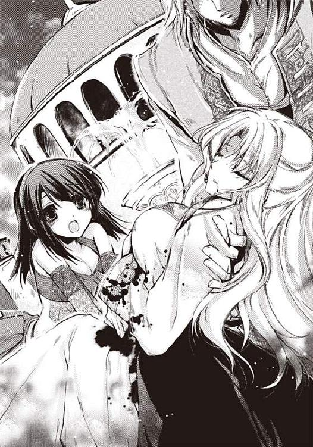
第六章 永遠に愛されて
二ヶ月後......。
トゥリーンは厨房に立ち、羊肉とタマネギを炒めたものを小麦粉で作った皮で包み、蒸籠に並べていた。
マントウはジェラールの好物で、主菜というよりは、酒のつまみにぴったりだ。
後宮で暮らしていたとき、ジェラールに料理を作ってあげたいと思っていた。
ようやく願いが叶えられた。
ジェラールの屋敷には腕のいい料理人がいて、おいしい料理を作ってくれる。
だが、夫の好きな料理は、自分で作ってあげたくて、部屋の隅に作ってもらったごく小規模な厨房に立ち、トゥリーンみずから料理をする。
「奥様。あまり根をおつめにならないでくださいませ。お身体に障ります」
流し台で汚れた鍋を洗いながら、アイーシャが言う。
高い位置に水を汲んだ桶を置き、管で水を通す簡単な作りの水道だが、ティムスで水道が引かれているのは皇族の屋敷だけだという。
「大丈夫よ。あと少しなの」
「ですが」
「イネスも、お腹の赤ちゃんは無事に育っていると太鼓判を押してくれたのだもの」
まだお腹はほとんど目立たないのだが、トゥリーンは妊娠四ヶ月の安定期に入った。つわりもおさまってすっきりした気分で毎日を過ごしている。
トゥリーンが後宮を出てジェラールの屋敷に入ったのはつい先日。
皇帝陛下の喪中であるため、結婚式はあげていないが、妻として迎え入れられ、静かな日々を過ごしている。
ジェラールは遠征に行くことが無くなり、王宮と屋敷を往復する毎日だ。
スルタンの右腕、アブドゥラフマンが急死したため、政務は混乱をきわめていて、執務には大変な思いをしているという。
アブドゥラフマンは、自殺した。
スルタンが死んだ翌日、毒を仰いで亡くなっていた。国王の死に殉じたのだと噂され、さすがの忠臣よと国民たちの涙を誘った。だが、それはあくまでも表向き。
ジェラールは二ヶ月前、王の死を知らせに来たアブドゥラフマンに言ったという。
「そなたは俺を殺そうとしたのか？ 俺の恋人たちと、まだみぬ俺の子供たちを殺したのはそなたか？」
スルタンの右腕、忠実な臣下アブドゥラフマンは、何も言わず平伏した。
そして翌朝、物言わぬ死体となって発見された。
アイーシャによると、アブドゥラフマンの葬儀には、ギゼムの姿もあったそうだ。
後宮は今もあり、着飾った美しい女たちが、ジェラールの訪れを待っている。
だが、ジェラールは、後宮に足を向けることはない。
喪に服しているからというよりは、政務に時間を取られているせいだ。
料理をするトゥリーンの耳に、馬を走らせる音が聞こえてきた。
「ジェラールが帰ってきたんだわ！」
窓から身を乗り出して外を見るが、アイーシャが「危のうございます！ 皇帝陛下の妻がお行儀の悪い」と止めたので、あきらめて首を引っこめた。
ジェラールは、砂漠越えをするときはラクダに乗るが、ティムスの国内では馬を愛用している。
「ジェラール様、お帰りでございます」
家令の声が聞こえ、あわてて手を洗い、布で拭くと、砂よけのマントに身を包んだジェラールが部屋に入ってきた。
「トゥリーン、元気だったか？」
抱きしめられ、頬をすりつけられる。
「やだっ。ジェラール様。お髭がちくちくします」
「すまない。慣れてもらうしかないんだ。顎髭はスルタンの印だからな。いっそ伸びてしまうと、平気だと思うんだが」
「はい。くすぐったいけど、がんばって慣れます。......ふふっ」
「奥様。私はこれを厨房に持っていき、料理人に蒸してもらってきます。私は席を外しますので」
アイーシャが気を利かせ、蒸籠を持って出ていった。
「うれしい。二人きりだわ」
後宮では、完全な二人きりということはありえなかった。
ジェラールが来てくれて、逢瀬を楽しんでいるときも、数十人もの女たちが立ち聞きして、睦み合う様子に聞き耳を立てていた。
愛する夫と二人きりの時間は贅沢だ。
トゥリーンを抱き寄せるジェラールの手が、下腹を撫で回す。
「この中に、子どもが入っているのか。なんだかまだ信じられない」
「私は信じられます。体調が前とぜんぜん違うから」
「砂漠の衣裳は着ないのか？ おまえに似合っていたんだが」
トゥリーンは上衣にハーレムパンツとヒップスカーフの砂漠の衣裳ではなく、シンプルなアバヤ姿だ。
「私はあなたの妻です。皇帝の妃にふさわしい服装を着たい。私はあなたに染まりたいのです。身も心も服装も、あなたのものになりたいのです」
「かわいいことを言う。俺はおまえの、控えめなところが好きになったのかもしれぬ。おまえは月のように静かであでやかだ」
トゥリーンを月のようだと言ったのは、正妃ファティーマだった。
花のように美しい女性だった。
サラソウジュの花のように、美しい盛りのときにはかなく散った正妃を思い出すと、せつない気分が胸に満ちる。
本来なら、ファティーマが立つ場所に、トゥリーンがいる。
「ファティーマ様や、後宮の人たちに悪い気がします」
「後宮は閉鎖する」
「え？ 後宮は、貴種を守り、皇族の強さとティムスの豊かさを誇示するところのはずじゃ？」
「誇示する必要はない。ティムスの皇帝は俺だ。俺は強い」
静かな、だが、自信にあふれた口調だった。
いかにもジェラールらしい言い方に苦笑する。
「後宮は、貴種を守るところのはずが、貴種を潰えさせる場になっていたからな。俺とて、愛した女が死ぬのは苦しかったのだ。後宮の女たちは部下に命じ、それぞれ結婚相手を見つけてやろう。兄者は後宮に一歩も足を踏み入れなかったのに、兄者用の後宮が今もあるのは、金の無駄遣いだ」
「女の人は二百人以上もいるのに大丈夫でしょうか？」
「男は同時に四人の妻が持てるからな」
トゥリーンはほっとした。
あんな頽廃に満ちたところ、無くなってしまうほうがいいのだろう。
「そうですか。よかったです。みなさんが、幸せな結婚をするのなら、それがいちばんですもの」
「結婚に向く女と向かない女がいそうだが」
「私は向く女ですか？」
「ああ。もちろん。俺が愛した女だから」
トゥリーンはくすくす笑った。
ジェラールは相変わらずの自信家だ。
「何を笑っている？ 俺はおまえを百人分愛してやると言っているのに」
「四人分じゃなかったんですか？」
「後宮を閉鎖するなら百人分だ。当然だろう」
ジェラールの手がお尻から太腿のあたりを撫でさすり、スカートをめくりあげてきた。
「なんだ。ハーレムパンツを穿いているのか？」
トゥリーンは、アバヤの下に、ハーレムパンツをつけていた。
砂漠の姫の、ささやかなおしゃれだった。
アバヤは、すとんとして飾り気のない形だが、ハーレムパンツを下につけると、いい具合に裾がふくらんでふんわりしたドレープができる。
「こっちのほうがおしゃれですから。それに、お腹を冷やしたくないんです。この子のためにも」
トゥリーンはお腹を押さえた。
「いい心がけだ」
トゥリーンのお腹に触れたジェラールの手は、次第に下へとさがっていき、ヘアを指にからめていじったあと、秘芽を指でつまんだ。
「あ......っ」
人差し指と中指で、秘芽をまるめるようにいじられて、静電気のような刺激に震えてしまう。
「はっ、......はぁっ」
彼の指が秘裂をさぐった。
二枚の花びらを割り、入口に指を入れられると、腰が思わずくねってしまう。
妊娠してから、よけいに感じやすくなっていて、少しいじられただけで身体が熱くなってくる。
「んっ......ん、んっ」
思わずお尻を後方に引くと、ジェラールの大きな手がお尻の肉をつかんできた。
「百人分愛してやるからな。覚悟しろ」
「百人分なんて。......私、死んでしまいます」
「ああ、もう死ぬというところまで感じさせてやろう」
「赤ちゃんに障りますよ」
「安定期だろう？ 結婚式は、兄者の喪が明けてからになるが」
「結婚式......」
信じられない。死にたいと泣いたときもあったのに、そんな華やかなこと、いいのだろうか。
「いやか？」
「いいえ。うれしい」
「おまえの兄も招待するぞ」
「ハティムーンは......私の兄は元気ですか？」
「ああ。無事だ。こないだは、うちの駐屯兵が、ハティムーンを襲った夜盗を一網打尽にしたぞ」
「私の母国を守ってくださっているのですか!?」
「当然だ。ハティムーンはティムスの属国だから、ティムスが守る。貢ぎ金も、ハティムーンにとっては大した額ではないようだ。ティムスとしても、通行税を取られないので、助かっているのだよ」
「貢ぎ金はティムスの守護代だと考えればいいのですね。ですが、兄は自分の国がティムスの属国になったことを、どう考えているのでしょうか？」
「怒っているであろう。独立国家だったのに、攻め落とされ王を殺され、外国の間接支配を受けているのだから。おまえの兄は今はまだ国内政治の安定で必死だが、いずれ力をつけ、俺を滅ぼしに来るかもしれぬ」
兄とジェラールが戦う想像は、トゥリーンの恐怖を誘った。
不安のあまり、彼の手をきゅっと握りしめる。
「心配することはない。ティムスにはおまえがいる。おまえが子どもを産み、おまえの子どもがスルタンになれば、ハティムーンはティムスの属国ではなく、ティムス皇帝の父の国になる。友好国だ。おまえは友好の姫だ」
ジェラールは遠征から戻るとき、姫を必ずひとり連れて帰ったという。
それはたんなる好色ではなく、国の安定を図る上での計算があったのだ。
あちこちの植民国から姫を略奪し、子どもを産ませておけば、友好を手に入れることができるのだから。
「解放奴隷の制度も、そろそろはじまる」
「ほんとうですか!?」
「ああ。ようやくだ。実は、ずいぶん前から、議題にあげていたんだ。文官の提案という形を取っていたのだが」
「よかった......」
ハティムーンから連れてこられた奴隷たちは、今も苦しい思いをして働いている。平易な道ではないだろうが、がんばれば奴隷の身分から解放されるというのは、彼らにとって希望の光だ。
ジェラールがトゥリーンにキスをしながら、脇の下に手を入れ、ベッドにそっと座らせた。
彼は、宝石を扱うようにトゥリーンに触れる。
腰を屈め、キスの雨を降らしながら、アバヤの胸ボタンを外していく。まっしろな胸乳がぽろんとこぼれた。
「胸、大きくなっていないか？」
「まさか。まだ早いです。胸が大きくなるのはもっとあとだって、イネスが言っていました」
「大きくなったように見えるんだ。おまえが母親だと思うせいかな」
大きな熱い手が、胸のふくらみをそっと揉む。
「んっんっ......はっ、はぁ......っ」
トゥリーンはあえいだ。彼のごつごつした指は繊細に動き、トゥリーンから甘い快感を引き出していく。
乳首を乳輪に押しこまれたとき、背筋にぶるっと戦慄が走った。
「あぁっ」
トゥリーンは背筋を反らした。
ジェラールの腕がすかさず背中に回り、トゥリーンを仰向けにさせる。
皇帝陛下がおおいかぶさってきた。
トゥリーンに体重を掛けないように注意しながら、キスの雨を降らせる。
キスは心地がよかったが、無精髭がくすぐったい。
「んっ......あっ......。あぁ......私のスルタン......。お髭が......あぁっ」
「私はまだ正式にはスルタンでない。喪が明けて即位式を終えたら、スルタンになる。......それまでに髭が生え揃うといいのだが」
トゥリーンはくすくす笑った。
「なにがおかしい？」
「だって、あなたの心配が髭ですもの。おもしろいですわ」
ジェラールはわざとのように顎をうなじにすりつけて、耳たぶを甘く噛んだ。
彼を信頼しているので、噛まれても怖くはないが、耳にフッと息を吹きかけられるのがたまらない。顎髭のざらざらが作り出すゾクゾクした戦慄におののいてしまう。
「あっ、あぁっ......、はぁっ」
下腹が熱くなり、蜜液がとろりと流れた。
彼と抱き合っているといつもこうだ。
身体が内側から溶かされて、胸の奥がきゅんと疼く。
トゥリーンは、彼の腕の中で寝返りをうち、うつぶせになった。
正常位はお腹を圧迫しそうで不安だ。
四つん這いの姿勢で腕を折り、お尻をあげた状態で受け入れるほうが具合がいい。
ジェラールがアバヤの裾をめくりあげた。
「きゃっ」
ジェラールの手がお腹を探り、器用にハーレムパンツのヒモをほどいていく。
「過激にしちゃだめですよ」
ハーレムパンツが足首から引き抜かれていく。
「あ、......は、恥ずかしい......っ」
うつぶせになったままでは脱がせにくいと思うのに、彼は器用にハーレムパンツと下穿きを脱がしてしまった。
「かわいいなぁ。おまえは。......どうだ。こっちのほうがもっと恥ずかしいだろう。......もっともっと恥じらって、かわいいところを見せてくれ」
ジェラールは腰の脇を持って引きあげると、お尻の山にちゅっとキスをした。
「ひゃっ。だ、だめっ。皇帝陛下が、女の尻にキスするなどとっ」
「あははっ。だったら、これはいいのか？」
フッと熱い息が吹きかけられ、熱い舌がぺろりと秘唇を舐める。
舌先が秘芽をつつく感触がたまらない。
お尻の穴さえ丸見えの格好が恥ずかしくてならず、身体の奥からジワッと蜜液があふれて落ちる。
「い、いやっ......こ、こんなのは......は、早く」
トゥリーンはせつなさに負けて腰を振った。
恥ずかしくて心地よくて申し訳なくて、じんじん熱く感じてしまう。
「何を早くするんだ？」
「知りませんっ。ジェラールのいじわるっ！」
トゥリーンはシーツに顔を埋めて恥じらった。
「あはは。まあいい。挿れてやろう」
「はい。お願いします......」
彼のものが花びらの奥、膣口にめりこんできた。
「うっ」
ジェラールがうめき、トゥリーンが甘い声をあげる。
「あぁーっ、い......」
いい気持ち、と言いそうになって、寸前で口をつぐむ。
ジェラールの大きな先端が、みっしりと合わさった狭い襞を、こじあけるようにして侵入してくる。その感触は、単純に心地がよかった。
彼のものは熱くて硬く、大きくて強い。
トゥリーンの反応を楽しんでいるのだろうか。彼はいつも、じわじわと挿入して、トゥリーンをじれったくさせる。期待のあまり、腰をくなくな揺すってしまう。
「はっ、はぁっ......あぁ、あっ」
みしみしと入ってきた肉茎が、やがて最奥を押しあげ、ようやく侵入が止まった。
後背位はお尻の山が邪魔になって、どうしてもつながりが浅くなる。だが、ジェラールはぐいぐいと侵入し、息苦しいほどに奥を突きあげる。
「動くぞ」
ジェラールが、トゥリーンの腰の脇を持ち直した。
「はいっ」
ゆっくりと、たしかめるようにして前後してくる。
先端のでっぱりが、膣壁を引っかけながら出入りする。
「あーっ、あぁっ、あっ」
奥を突かれるときの、ズウンと重い戦慄が走り抜ける感触と、引かれるときの、身体の中から何かが抜かれる感触の落差がたまらない。
「どうだ？ 気持ちいいだろう？」
ジェラールはいつも自信たっぷりだ。
太陽の皇帝陛下。
ジェラールは、ゆっくりゆっくり、腰を前後させている。
あらたなところが擦過され、あらたな快感がうまれる。
トゥリーンは泣いていた。
「......っ、ぅ......あっ、あぁ......っ」
心地よくて、幸せで、涙が出るのだ。
客観的にいえば、トゥリーンの今の立場は、決して幸せでないはずだ。
母国は植民国にされ、略奪され、見知らぬ異国で後宮に入れられ、運命を変えられた。
だが、ジェラールが、トゥリーンを愛してくれる。柔らかくやさしく包みこんでくれる。
「なんで泣く？」
「幸せだから」
ジェラールがふーっと息を吐いた気配がわかった。
「そうか。俺も、おまえと出会えて、幸せだ」
彼が腰を持ち直した。
トゥリーンは口をつぐむ。
彼が動きを速めると、突きあげられる振動で舌を噛んでしまいそうになるから、口を閉じておくほうがいい。
「いくぞ」
「はい」
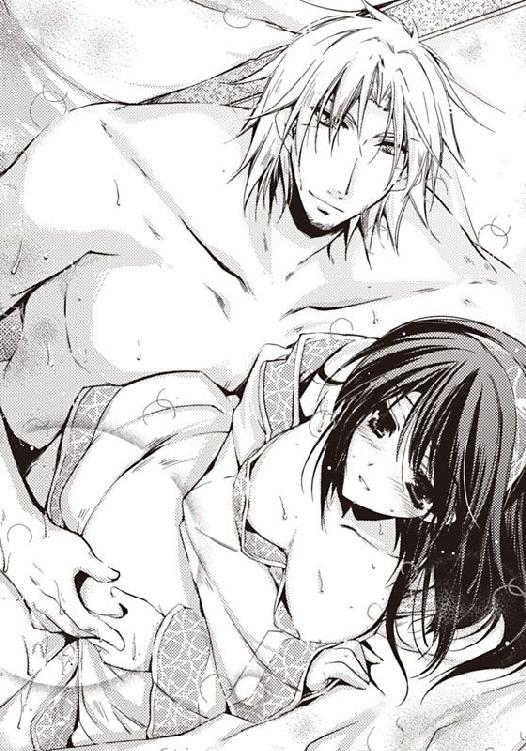
トゥリーンは息を止めた。
ごつっと膣奥が彼の先端で押しこまれる。
「くっ」
身体の奥で、甘い何かが満ちていき、あふれてしまいそうになる。
四つん這いで肘を折りお尻をあげた後背位だから、結合は浅くなりがちなのに、彼の男根は大きくて、容赦なく奥に当たる。
「ああーっ、あーっ」
揺すりあげられるとき、目の裏で赤が散る。ラクダに乗って砂漠を横断するときにも似て、目の裏が太陽の赤に染まってしまう。
「うっ、くーっ」
ジェラールの動きが速く、せっぱつまってきた。
トゥリーンはシーツをつかみ、おでこを寝台につけて、激しい突きあげに耐えた。
「うっ」
ジェラールがいきなり動きを止めた。
最奥で、どくんどくんと熱い液体が爆ぜている。
意識がふわっと宙に浮く。
稜線があいまいになり、溶けて崩れてひとつのかたまりになるような満足感に酔いしれる。
うっとりしていたら、彼が身体を離した。
トゥリーンはうつ伏せになって、はぁはぁと息を荒らげた。
ドアがノックされた。
「奥様、マントウが蒸せました。お酒も持ってきました。入ってもよろしいですか？」
ドア越しにアイーシャの声が聞こえてくる。
「あと少しだけ待ってちょうだい」
あわてて身繕いをし、ハーレムパンツを穿く。
「おまえを食べたあとは、マントウをさかなに酒か」
「ふふっ。たくさん作ったから、たくさん食べてくださいね」
「ああ。たくさんおまえを愛してやる」
ジェラールがトゥリーンを抱きしめ、おでこにキスをした。
トゥリーンは幸せな気分を噛みしめた。
あとがき
こんにちわ。わかつきひかるです。
このお話は、砂漠の国のお姫様、トゥリーンが主人公です。彼女は自国を攻め滅ぼした蛮族の軍隊長に略奪され、西域に連れて行かれます。後宮（ハーレム）に入れられるのですが、軍隊長ジェラールは、意外にも皇帝の弟で、皇太子殿下だったのでした。
後宮では、美しい女達が妍を競い、殿下の訪れを待っていました。セクシーな女がたくさんいるのに、ジェラールはトゥリーンに執着します。
トゥリーンはジェラールを憎みながらも、なすすべもなく抱かれるばかり。
女たちのいじわるに、豊穣（性交）の女神に使える巫女たちによる淫らな儀式が、トゥリーンを襲います。
流転の運命に翻弄され、死なせてと泣くトゥリーンですが、やがてジェラールとトゥリーンのあいだに愛が芽生えます。
この小説を書くために、奈良国立博物館で開催された正倉院展を見て来ました。
シルクロードの宝物がいっぱいで、華やかな世界でした。砂漠の国は、砂だらけの何もないところではなく、豊かな文化が花開いた、キラキラした世界だったようです。
織田信長も愛した香木、蘭奢待の実物を見ましたが、みためはただの木の棒で、ガラスケースに入っていたために、においを嗅ぐことはできませんでした。
シルクロードを通じてはるばる日本まで、中東の香木が運ばれていたのですね。
国立博物館の売店で買った線香を焚いて、シルクロードに思いを馳せながら、この小説を書きました。おしゃれなデザインの線香立てとセットになっているのですが、キンモクセイのような芳香がふわっと香ってなごみます。
普段は男性向けを書いているので、加減がどうもわかりません。ハードすぎませんでしょうか。これでもずいぶん削除したのですが。女性読者さんに楽しんで頂けるかどうか、心配しています。楽しんでいただけましたら光栄です。
私のつたない小説をすばらしいイラストで飾っていただけましたイラストのカミシロミドリマル先生はじめ、この小説を発表するためにご尽力くださいましたすべての方にお礼を申し上げます。そして、この本を手に取ってくださいましたあなた。あなたにお礼を申し上げます。
スルタンに奪われて【イラスト付】
2012/2/1 電子版発行
東京都千代田区飯田橋３－３－１
著者 わかつきひかる
挿絵 カミシロミドリマル
発行 プランタン出版
本データには購買者を特定できる個別のシリアル番号が刻印されています。
複製・頒布・転売等、著作権を侵害する行為は法律で禁じられており、
違反した場合は刑事罰および民事罰を招来することになります。
（c)2012 HIKARU WAKATSUKI,MIDORIMARU KAMISHIRO